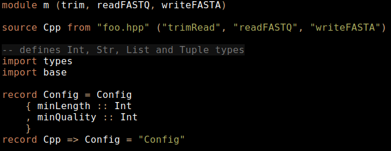
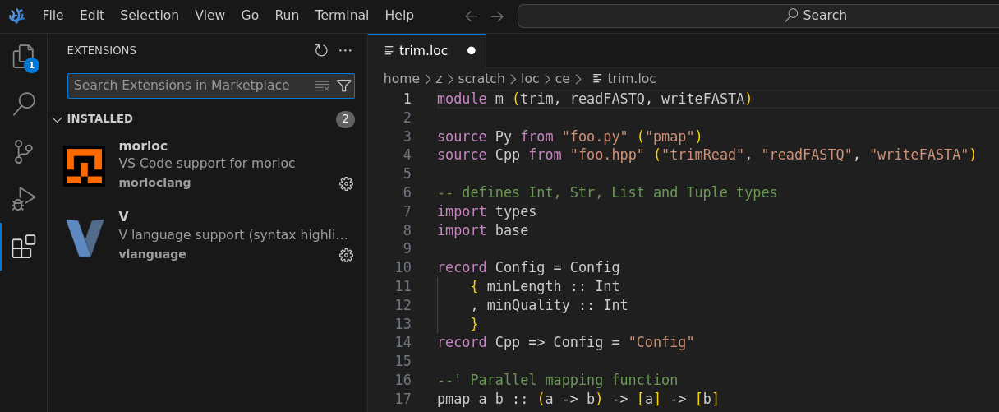
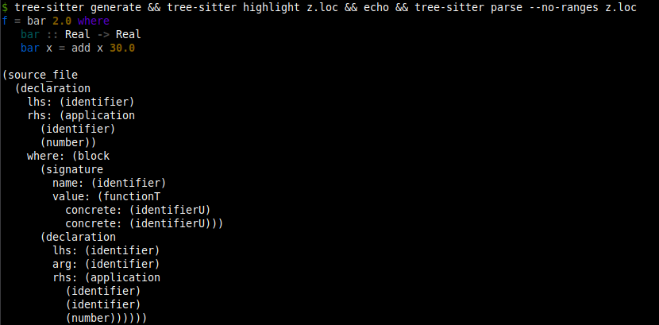
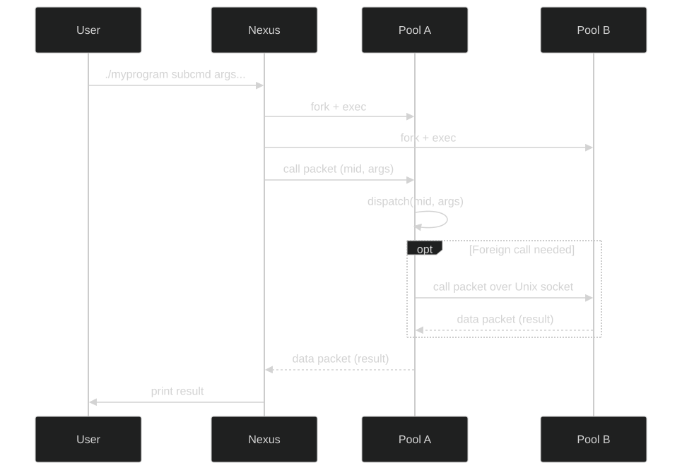
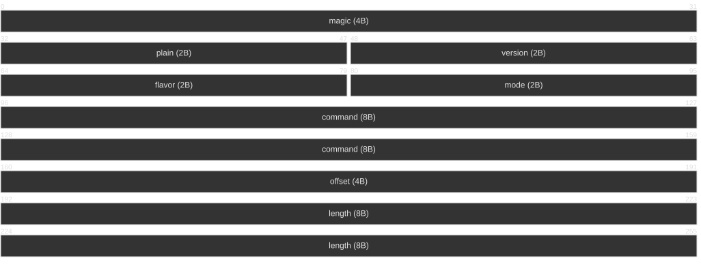

1. Intro
Morloc is a strongly-typed functional programming language where functions are imported from foreign languages and unified under a common type system. This language is designed to serve as the foundation for a universal library of functions. Each function in the library has one general type and zero or more implementations. An implementation may be either a function sourced from a foreign language or a composition of such functions. All interop code is generated by the Morloc compiler.
2. Why Morloc?
2.1. Compose functions across languages under a common type system
Morloc allows functions from polyglot libraries to be composed in a simple functional language. The focus isn’t on classic interoperability (e.g., calling Python from C) or serialization (e.g., sending data between applications via protobufs) — though morloc implementations may use these under the hood. Instead, you define types, import implementations, and build complex programs through function composition. The compiler invisibly generates any required interop code.
2.2. Write in your favorite language, share with everyone
Do you want to write in language X but have to write in language Y because everyone in your team does or because your expected users do? Love C for algorithms, R for statistics, but don’t want to write full apps in either? Morloc lets you mix and match, so you can use each language where it shines, with no bindings or boilerplate.
2.3. Run benchmarks and tests across languages
Tired of learning new benchmark and testing suites across all your languages? Is it hard to benchmark similar tools wrapped in applications with varying input formats, input validation costs, or startup overhead? In Morloc, functions with the same general type signature can be swapped in and out for benchmarking and testing. The same test suites and test cases will work across all supported languages because inputs/output of all functions of the same type share equivalent Morloc binary forms, making validation and comparison easy.
2.4. Design universal libraries
With Morloc, we can build abstract libraries using the general types as a logical framework. Then we can import implementations of these functions from one or more of the supported languages and easily test and benchmark them. These libraries are the foundation for an ecosystem where functions may be verified, organized/searched by type, and used to build rigorous programs.
2.5. Make composable and deployable tools
A Morloc module can be compiled directly into a CLI tool with rich subcommands and automatically generated usage statements. These CLI tools can be composed with just a few lines to make custom toolboxes. They can also be compiled as daemons serving over UNIX sockets, TCP or HTTP.
2.6. Make better scientific workflows
Within the scientific programming space, Morloc can serve as a replacement for the brittle application/file paradigm of workflow design. Replace heavy CLI applications with pure function libraries, ad hoc textual file formats with explicit data structures, and workflow specifications with function compositions. See the first Morloc paper for details (here).
3. Getting Started
3.1. Installing Morloc
The easiest way to run Morloc is through containers in a UNIX environment. Linux will work natively. MacOS and Windows are more complicated and I’ll deal with their special cases later on. For Windows, you will need to install through the Windows Subsystem for Linux.
3.1.1. Installing morloc-manager
The morloc-manager utility streamlines the management of Morloc
environments. The binaries can be downloaded directly from GitHub
(here) or you can follow
the script below can be followed to install the latest binary:
$ sys="linux-x86_64" # or "linux-arm64" / "macos"
$ mim_url=$(curl -s https://api.github.com/repos/morloc-project/morloc/releases/latest | grep browser_download_url | grep morloc-manager-${sys} | grep -o 'https[^"]*')
$ curl -Lo morloc-manager "$mim_url"
$ chmod +x morloc-manager
$ mv morloc-manager ~/.local/bin/On macOS you may need to clear the quarantine attribute:
$ xattr -d com.apple.quarantine morloc-managermorloc-manager relies on containers, so you will also need a container
engine. Two are supported: Podman and Docker. I recommend Podman for rootless
local work. If you have both engines installed, you will need to tell
morloc-manager which you are using with the command:
$ morloc-manager setup --engine podman
Engine set to: podmanPodman instructions
Unlike Docker, podman runs rootless by default, so no sudo is required. On
Linux, it also runs natively with no daemons.
On MacOS and Windows (even through WSL), a virtual machine is required. So you
will need to initialize podman as so:
$ podman machine init
$ podman machine startYou can confirm that podman is running by entering
$ podman --version
podman version 5.4.1 # version on my current setupThe morloc-manager utility usage information can be accessed with the -h option:
$ morloc-manager -h
morloc-manager - container lifecycle manager for Morloc
Usage: morloc-manager [OPTIONS] [COMMAND]
Development
setup Configure the default container engine
new Build a new morloc environment
run Run a command in the active environment
rm Remove a morloc environment
ls List morloc environments
info Show configuration and installed environments
select Select an environment
update Rebuild an environment
nuke Remove all morloc environments
Deployment
start Serve an environment over the network
stop Stop a running serve container
logs Stream logs from a running serve container
freeze Export installed state as a frozen artifact
unfreeze Build a portable serve image from frozen state
status List running serve containers
doctor Check environment health and diagnose issues
Options
-v, --verbose Print container commands to stderr before executing
--json Output machine-readable JSON instead of human-readable text
--version Print version and exit
-h, --help Print help (see more with '--help')To get started with Morloc, we will only need subcommands from the Development
section of the usage statement above.
3.1.2. Creating environments
An environment is a named, self-contained Morloc installation: a container image, a data directory for modules and binaries, and optionally a custom Dockerfile layer with extra dependencies.
We can create a new environment and name it base with the command below:
$ morloc-manager new --non-interactive base
Pulling ghcr.io/morloc-project/morloc/morloc-full:latest...
Created environment: base
Initializing morloc (this may take several minutes)...
Environment 'base' is ready.
Activate it with: morloc-manager select baseBy default, the new subcommand pulls the latest Morloc release. There are many
additional options, but this default environment will be sufficient for running
nearly everything in the Morloc docs.
We can check that the new environment is available with ls. You might see
something like this (your environments will differ from mine):
$ morloc-manager ls
Local environments:
base [0.85.0]
edge [0.79.0] (active)Next we should activate the new environment we just created:
$ morloc-manager select base
Selected environment: baseeverthing is set up correctly with info:
$ morloc-manager info
Active: edge
Local engine: podman
System engine: podman
SELinux: not detected
Directories:
Config (local) /home/z/.config/morloc (exists)
Data (local) /home/z/.local/share/morloc (exists)
Config (system) /etc/morloc (exists)
Data (system) /usr/local/share/morloc (not found)
Local environments:
base [0.85.0] (active)
edge [0.79.0]You can get details on a particular environment as well:
$ morloc-manager info base
Name: base
Scope: local
Active: yes
Base image: ghcr.io/morloc-project/morloc/morloc-full:0.85.0
Morloc version: 0.85.0
Engine: podman
SHM size: 512m
Dockerfile: none
Flags: /home/username/.config/morloc/environments/base/env.flags
Data dir: /home/username/.local/share/morloc/environments/base3.1.3. The Morloc shell and first runs
You can run commands inside the environment:
$ morloc-manager run -- morloc --version
0.85.0This confirms that that the morloc compiler is installed and shows its version.
Alternatively you can create an interactive session inside the Morloc container:
$ morloc-manager run --shellYou are now inside a shell in the container. You can check that the Morloc compiler installed in the container is indeed the latest version:
$ morloc --version
0.85.0 # you may have a later versionThe current working directory from your system is mounted. All changes you make in this directory will persist. The Morloc module directory for this environment from your home system is mounted as well, so any Morloc modules you install will persist. That beind the case, let’s install the Morloc standard library:
$ morloc install stdlibThe Morloc stdlib module is a re-exporter of all the Morloc individual
standard library modules. So installing it is a shortcut for explicit
installation.
You are now ready to run almost any code in the docs.
3.2. Setting up IDEs
We are currently working on expanding the editor support for Morloc.
Below are the editors that are supported or under development.
vim
If you are working in vim, you can install Morloc syntax highlighting as follows:
$ mkdir -p ~/.vim/syntax/
$ mkdir -p ~/.vim/ftdetect/
$ curl -o ~/.vim/syntax/loc.vim https://raw.githubusercontent.com/morloc-project/vimmorloc/main/loc.vim
$ echo 'au BufRead,BufNewFile *.loc set filetype=loc' > ~/.vim/ftdetect/loc.vim
VS Code / VSCodium / Cursor
We have a publicly available "morloc" extension with support for highlighting and snippet expansion.

Zed
This is currently under development, see repo here.
The extension is mostly written, and the required Tree-sitter grammar is written, but there are bugs to be resolved. I’m happy to accept pull requests!
I’ve also written several syntax highlighting and static analysis tools:
Pygmentize
A repo with the Pygmentize parser can be found here. This parser is used to highlight code here in the manual. It can be easily integrated into Python code, e.g., in the Weena discord bot.
Tree-sitter
Tree-sitter is a program for defining parsers and using them to query languages and add advanced grammatical understanding to editors. These grammars require a complete lexer and parser specification for the language. This grammar is available for Morloc, see repo here. Tree-sitter allows general purpose syntax highlighting (e.g., over the command line) and parses a full concrete syntax tree from the code:

3.3. First Morloc programs
The inevitable "Hello World" case is implemented in Morloc like so:
module hw (hello)
--' A Morlock's hello world
hello = "Hello up there"The module named hw exports the term hello which is assigned to a literal
string value. The --' syntax adds a docstring that describes the term.
Paste this code into a file (e.g. "hello.loc") and then it can be imported by other Morloc modules or directly compiled into an executable program.
$ morloc make hello.locThis command will produce an executable named after the module (in this case,
hw) and pool files for each language used (e.g., pool.py, pool-cpp.out,
pool.R) in the pools/ directory. The executable is the command line
interface (CLI) to the concrete commands exported from the module.
Calling the executable with the -h flag, will print a help message:
$ ./hw -h
Usage: ./hw ARG
A Morlock's hello world
Nexus options (long form only; short forms reserved for the program):
--help Print this help message
--print Pretty-print output for human consumption
--output-file Print to this file instead of STDOUT
--output-form Output format [json|mpk|voidstar]
--keep-null Print top-level () or None as 'null' (default: empty)
Daemon mode:
--daemon Run as a long-lived daemon
--http-port PORT Listen on HTTP port
--port PORT Listen on TCP port
--socket PATH Listen on UNIX socket
Return: StrWe can ignore the nexus and daemon options for now. This usage message is
automatically generated. For each exported term, it specifies the input (none,
in this case) and output types as inferred by the compiler. For this case, the
exported command is just the term hello, so no input types are listed and the
return type is a string.
Because hw exports exactly one function, the COMMAND name is optional: you
can either write it explicitly or omit it.
$ ./hw hello
"Hello up there"
$ ./hw # equivalent: the only exported command is the implicit one
"Hello up there"3.4. Unit conversion example
To introduce Morloc programming, let’s develop a simple unit conversion program.
Let’s define a few unit conversions in C++ and write it to the file units.hpp:
#pragma once
double cels2fahr(double cels){
return 1.8 * cels + 32.0;
}
double meters2feet(double meters){
return meters * 3.28084;
}Now let’s source the C++ code in the Morloc file units.loc:
module units (cels2fahr, meters2feet)
source Cpp from "units.hpp" ("cels2fahr", "meters2feet")
type Cpp => Real = "double"
--' Convert from Celsius to Fahrenheit
cels2fahr :: Real -> Real
--' Convert from meters to feet
meters2feet :: Real -> RealHere we define a new module and its exports. The source statement reads
foreign language code and specifies the terms that should be imported from the
source code. The type phrase maps the general Morloc type Real to the
concrete C++ type double. The remaining lines define the type signatures for
the two unit conversion functions. Both map a Real input to a Real output.
We can compile and run it as below:
$ morloc make units.loc
$ ./units cels2fahr 100
212The Morloc compiler will build a C++ program from the Morloc script. The compiler also generates help statements:
$ ./units -h
Usage: ./units [OPTION...] COMMAND [ARG...]
Nexus options (must precede COMMAND):
-h, --help Print this help message
-p, --print Pretty-print output for human consumption
-o, --output-file Print to this file instead of STDOUT
-f, --output-format Output format [json|mpk|voidstar]
--keep-null Print top-level () or None as 'null'
(default: produce empty output)
Daemon mode:
--daemon Run as a long-lived daemon
--http-port PORT Listen on HTTP port
--port PORT Listen on TCP port
--socket PATH Listen on Unix socket
Commands (call with -h/--help for more info):
cels2fahr Convert from Celsius to Fahrenheit
meters2feet Convert from meters to feetThe nexus and deamon mode options are present in all compiled Morloc programs and offer options for output format and run mode. These advanced options will be discussed later.
3.4.1. Defining language-agnostic functions
This C++ definition for unit conversions is fine, but it would be helpful to be able to do conversions natively in any language without needing to define new helpers or make foreign calls to the C++ functions. In Morloc we can write code that is language independent, like so:
module units (cels2fahr, meters2feet)
import root
--' Convert from Celsius to Fahrenheit
cels2fahr cels = 1.8 * cels + 32.0
--' Convert from meters to feet
meters2feet meters = meters * 3.28084If you get the error that the root is not installed, you can install all the
Morloc standard library modules with:
$ morloc install stdlibThe root module is a language independent Morloc module that defines the
typeclasses for arithmetic among other things. Since our new module is fully
language-agnostic, we cannot directly compile it, but we can typecheck it:
$ morloc typecheck units2.loc
cels2fahr :: Real -> Real
meters2feet :: Real -> RealNow to actually compile this program into something we can execute, we need to
import a module that contains sourced implementations. Let’s define a main.loc
module that imports the types module.
module main (cels2fahr, meters2feet)
import .units
import root-cppThe .units specifies the relative path to a local Morloc module. The module,
root-cpp, stores C++ implementations of root terms, here we just need the
arithmetic operator definitions.
If we instead wanted to build in Python, we could substitute the root-cpp
import for root-py. Alternatively, we could import both root-cpp and
root-py and let the compiler decide which implementations to use.
3.5. Polyglot programs
Morloc can freely mix languages. Suppose we have a function in Python for writing reports:
# format.py
def report(ctemp, c2f):
return f"The current temperature is {ctemp}°C ({c2f(ctemp)}°F)"This function takes a temperature in Celsius and a Celsius-to-Fahrenheit converting function as arguments. It returns a string describing the temperature.
Now let’s source this function and our old C++ function into a Morloc program.
module main (report)
import root-py
import root-cpp
source Py from "format.py" ("report" as report_wrapper)
report_wrapper :: Real -> (Real -> Real) -> Str
source Cpp from "units.hpp" ("cels2fahr")
cels2fahr :: Real -> Real
--' Write a cute string about the temperature
report t = report_wrapper t cels2fahrThe report function passes a C++ function to a Python function. All the
wiring for this is done under the hood by the Morloc compiler.
We could also import the language-agnostic morloc definitions from before and
import root-py. Then the language-agnostic definitions would collapse to
native python and the report function would be pure Python.
3.6. Parallelism example
Here is an example showing a parallel map function written in Python that calls cpp functions.
module m (sumOfSums)
import root-py
import root-cpp
source Py from "foo.py" ("pmap")
source Cpp from "foo.hpp" ("sum")
pmap :: (a -> b) -> [a] -> [b]
sum :: [Real] -> Real
sumOfSums = sum . pmap sumThis Morloc script exports a function that sums a list of lists of real numbers. Here we use the dot operator for function composition. The type signature for pmap uses lowercase type variables (a and b) to indicate that the function is generic — it works for any types a and b. The sum function is implemented in cpp:
// cpp header sourced by morloc script
#pragma once
#include <vector>
double sum(const std::vector<double>& vec) {
double sum = 0.0;
for (double value : vec) {
sum += value;
}
return sum;
}The parallel pmap function is written in Python:
# Python3 file sourced by morloc script
import multiprocessing as mp
def pmap(f, xs):
with mp.Pool() as pool:
results = pool.map(f, xs)
return resultsThe inner summation jobs will be run in parallel. The pmap function has the same signature as the non-parallel map function, so can serve as a drop-in replacement.
This can be compiled and run with the lists being provided in JSON format:
$ morloc make main.loc
$ ./m sumOfSums '[[1,2],[3,4,5]]'
154. Syntax and Features
4.1. Functions
Functions are defined with arguments separated by whitespace:
foo x y z = g x (f y z)Here foo is the Morloc function that takes the arguments x, y, and
z. Using whitespace to separate arguments may be unfamiliar if you have a
background in the Algol family of languages (such as C and Python).
The Morloc internal module, which is imported into a stdlib modules, defines
the composition (.) and application ($) operators.
The . operator composes two functions. Consider the two definitions below.
foo1 x = g (f x)
foo2 = g . fThe first shows an explict function call where the function g takes the output
of f x as input. The second represents the same operation as a composition of
the two functions g and f.
Composition chains can build multi-stage pipelines:
process = format . transform . validate . parseThe $ operator is the application operator. It has the lowest precedence, so
it can be used to avoid parentheses:
foo1 x = h (g (f x))
foo2 x = h $ g $ f xMorloc supports partial application of arguments. If you take a function that
requires N arguments, and provide it one argument, you will get a new function
of (N-1) arguments. Let’s take the slice function which takes three arguments:
a start index, an end index, and a list of values. It returns a sublist. Here
are a few examples of partial application:
# create a new "take" function
take = slice 0
# define a new "head" function that returns the first element of a list
head = slice 0 1
# extract the first 5 elements from ever list in a list of lists
firstFive xss = map (slice 0 5) xssPartial application works with binary operators as well, the example below
divides every element in a list of Real values by 2. Numeric literals are
not polymorphic across Int and Real, so write 2.0 to keep the operator
on Real, and give the binding a signature so map’s `Functor instance
can be resolved:
divideByTwo :: [Real] -> [Real]
divideByTwo = map (/ 2.0)Binary operators can be applied in the reverse order as well:
divideTwoBy :: [Real] -> [Real]
divideTwoBy = map (2.0 /)The / operator is defined only on Real and other Numeric types. For
integer division, use // instead:
halvedInts :: [Int] -> [Int]
halvedInts = map (// 2)4.1.1. Lambdas
Anonymous functions are written with a backslash, one or more parameters, and
→. They capture free variables from the enclosing scope, so a lambda can
refer to bindings defined outside it:
addBias :: Real -> [Real] -> [Real]
addBias bias = map (\x -> x + bias)Here bias is captured from the outer parameter list. Lambdas must take at
least one argument: the zero-argument form \ → 5 is a parse error. To wrap
a value as a "function with no arguments", use the effect system (see the
section on effects and delayed evaluation) rather than a lambda.
4.2. Foreign functions
In Morloc, you can import functions from many languages and compose them under a common type system. The syntax for importing functions from source files is as follows:
source Cpp from "foo.hpp" ("map", "sum", "snd")
source Py from "foo.py" ("morloc_map" as map, "morloc_sum" as sum, "snd")The C++ file, foo.hpp, may be implemented as a simple header file with generic
implementations of the three required functions.
#pragma once
#include <vector>
#include <tuple>
// map :: (a -> b) -> [a] -> [b]
template <typename F, typename A>
auto map(F f, const std::vector<A>& xs) {
std::vector<decltype(f(xs.front()))> result;
result.reserve(xs.size());
for (const auto& x : xs) {
result.push_back(f(x));
}
return result;
}
// snd :: (a, b) -> b
template <typename A, typename B>
B snd(const std::tuple<A, B>& p) {
return std::get<1>(p);
}
// sum :: [a] -> a
template <typename A>
A sum(const std::vector<A>& xs) {
A total = A{0};
for (const auto& x : xs) {
total += x;
}
return total;
}Note that these implementations are completely independent of Morloc — they have no special constraints, they operate on perfectly normal native data structures, and their usage is not limited to the Morloc ecosystem.
The Morloc compiler is responsible for mapping data between the languages. But to do this, Morloc needs a little information about the function types. This is provided by the general type signatures, like so:
map :: (a -> b) -> [a] -> [b]
snd :: (a, b) -> b
sum :: [Real] -> RealThe syntax for these type signatures is inspired by Haskell. Square brackets
represent homogenous lists and parenthesized, comma-separated values represent
tuples, and arrows represent functions. In the map type, (a → b) is a
function from generic value a to generic value b; [a] is the input list
of initial values; [b] is the output list of transformed values. In the snd
type, the second element from a tuple of two generic terms is extracted. In
sum, a list of reals is converted to a single real.
Removing the syntactic sugar for lists and tuples, the signatures may be written as:
map :: (a -> b) -> List a -> List b
snd :: Tuple2 a b -> b
sum :: List Real -> RealThese signatures provide the general types of the functions. But one general type may map to multiple native, language-specific types. So we need to provide an explicit mapping from general to native types.
type Cpp => List a = "std::vector<$1>" a
type Cpp => Tuple2 a b = "std::tuple<$1,$2>" a b
type Cpp => Real = "double"
type Py => List a = "list" a
type Py => Tuple2 a b = "tuple" a b
type Py => Real = "float"These type functions guide the synthesis of native types from general
types. Take the C++ mapping for List a as an example. The basic C++ list type
is vector from the standard template library. After the Morloc typechecker
has solved for the type of the generic parameter a, and recursively converted
it to C++, its type will be substituted for $1. So if a is inferred to be
a Real, it will map to the C++ double, and then be substituted into the list
type yielding std::vector<double>. This type will be used in the generated C++
code.
These type mappings will normally be imported from foundational modules, such as
root-py or root-cpp, so you will not often need to define them in practice.
4.2.1. Importing builtin functions
Importing builtin functions can be problematic. This is why we sourced the map
and sum functions from Python under the Python names morloc_map and
morloc_sum.
If we directly sourced the builtins, as below:
source Py from "foo.py" ("morloc_map" as map, "morloc_sum" as sum, "snd")The functions map and sum would be treated by the code Morloc generates as
functions that are exported from the foo module. The generated Python code
will access these functions under the foo namespace as foo.map and
foo.sum. But map and sum are Python builtins, not direct exports, so they
must be re-exported at the top of the source file:
# foo.py
from builtins import map, sum # make builtins module-level attributes
def snd(pair):
return pair[1]For third-party modules, any term that is passed to Morloc will need to be
locally defined (def bar(…)) or specifically imported (from somemodule import bar).
4.3. Booleans
Booleans in Morloc are represented as True or False under the Bool
type. Comparison and logical operators can be imported from the root modules.
4.3.2. Comparison operators
The Eq and Ord typeclasses in root provide the standard comparison
operators. They work over any type with the appropriate instance — integers, reals, strings, and tuples and lists of comparable values.
| Operator | Meaning |
|---|---|
|
equal |
|
not equal |
|
less than |
|
less than or equal |
|
greater than |
|
greater than or equal |
import root-py
isPositive :: Int -> Bool
isPositive x = x > 0
sameLength :: [a] -> [b] -> Bool
sameLength xs ys = length xs == length ys4.3.3. Logical operators
The root module defines logical conjunction (&&), disjunction (||),
negation (not), exclusive-or (xor), and not-and (nand):
| Operator | Meaning |
|---|---|
|
logical AND |
|
logical OR |
|
logical negation (prefix function) |
|
exclusive OR |
|
NOT AND |
&& and || are short-circuiting and right-associative. && binds tighter
than ||, matching the convention of most languages:
inRange :: Int -> Int -> Int -> Bool
inRange lo hi x = lo <= x && x <= hi
isWeekend :: Int -> Bool
isWeekend day = day == 0 || day == 6
isWeekday :: Int -> Bool
isWeekday day = not (isWeekend day)4.3.4. Boolean-valued list functions
The root module provides several functions in the Foldable family that
return Bool:
| Function | Signature |
|---|---|
|
|
|
|
|
|
any returns True if the predicate holds for at least one element. all
returns True only if the predicate holds for every element. elem checks
membership using ==.
hasNegative :: [Int] -> Bool
hasNegative = any (< 0)
allPositive :: [Int] -> Bool
allPositive = all (> 0)
containsZero :: [Int] -> Bool
containsZero = elem 04.3.5. Guards
Booleans drive Morloc’s guard syntax. A guard alternative starts with ? and
selects the first branch whose condition evaluates to True; the : line is
the fallthrough:
classify :: Int -> Str
classify x
? x < 0 = "negative"
? x == 0 = "zero"
: "positive"See the Guards section for a full description of guard syntax.
4.4. Integer types
Integers may be written in decimal, hexadecimal, octal, or binary:
-- standard decimal notation
42
-- hexadecimal notation (case insensitive)
0xf00d
0xDEADBEEF
-- octal notation (upper or lowercase 'o')
0o755
-- binary notation (upper or lowercase 'b')
0b0101A prefixed integer must contain only digits valid for its base, and must end on a non-identifier character. A trailing letter or digit that is not a valid digit for the base is a compile-time error rather than a silently truncated literal followed by an unrelated identifier:
$ morloc eval -e "0xF00D"
61453
$ morloc eval -e "0xF0OD"
<expr>:1:1: malformed hexadecimal literal: 0xF0OD
$ morloc eval -e "0b1001"
9Here I am using the Morloc eval command to evaluate a single Morloc
expression.
Morloc provides a default variable-width integer for general use and fixed-width types for performance-critical code.
4.4.1. Integer types at a glance
| Type | Width | Use case |
|---|---|---|
|
Variable (arbitrary precision) |
Default integer for most code. Works across all languages. |
|
8, 16, 32, 64 bits (signed) |
Performance-critical code with known bounds. |
|
8, 16, 32, 64 bits (unsigned) |
Bit manipulation, byte data, indices. |
4.4.2. The default Int type
The Int type is Morloc’s universal integer. The on-wire representation is
variable-width: values up to 64 bits fit in 16 bytes inline, and larger values
spill to a pointer to an array of 64-bit limbs. The in-language range of
Int, however, is determined by the host language’s native integer type:
| Language | Native binding for Int |
Representable range |
|---|---|---|
Python |
|
Arbitrary precision |
C++ |
|
32-bit signed ( |
R |
|
32-bit signed |
A morloc program that needs a value above 32 bits in C or R should declare
the field as `Int64` (or `UInt64`), which maps to `int64_t` in C and to R’s
numeric (with 53-bit integer precision via double).
Integer literals are Int by default:
x = 42 -- Int
y = 0xDEADBEEF -- Int (hex literal)
z = -9999 -- Int4.4.3. Big integers from Python
Python natively supports arbitrary-precision integers. Morloc’s Int type
takes full advantage of this. For example, computing large factorials:
module main (fact)
import root-py
fact :: Int -> Int
fact n
? n == 0 = 1
: n * fact (n - 1)$ morloc make -o calc main.loc
$ ./calc fact 100
93326215443944152681699238856266700490715968264381621468592963895217599993229915608941463976156518286253697920827223758251185210916864000000000000000000000000This produces a 525-bit integer — far beyond what any fixed-width type can hold. The value is stored as a multi-limb big integer and printed correctly.
4.4.4. Cross-language overflow errors
When a big integer is passed to a language whose concrete type cannot represent it, Morloc produces a clear error at the language boundary. The error states the value’s size, the target type’s bit width, and its representable range.
For example, passing a large factorial from Python to C++:
module main (factCpp)
import root-py
import root-cpp
fact :: Int -> Int
fact n
? n == 0 = 1
: n * fact (n - 1)
factPy :: Int -> Int
factPy n = idpy (fact n)
factCpp :: Int -> Int
factCpp x = idcpp (factPy x)Small values pass through without issue:
$ ./calc factCpp 5
120But large values produce a descriptive error:
$ ./calc factCpp 100
Error: run failed
Integer overflow: 9-limb integer (576 bits) does not fit in
32-bit type (range -2147483648 to 2147483647)The same applies to R, which is limited to 32-bit integers and 53-bit integer precision via doubles:
$ ./calc factR 100
Error: run failed
Integer overflow: 9-limb integer (576 bits) does not fit in
R's numeric type (max 2^53 for integer precision).
Use a fixed-width type (Int32, Int64) or keep computation in Python.Note the use of idpy in the example above. This forces the factorial
computation to run entirely in Python, where int is arbitrary
precision. Without this, the compiler will collapse the implementation of fact
to pure C++, which would be much faster, but would not show the cross-language
behavior.
4.4.5. Compile-time literal bounds
Integer literals are bounds-checked at compile time against the type they’re written into. A literal that overflows its target type is rejected with a sourced error pointing at the literal:
tooLarge :: UInt8
tooLarge = 1000$ morloc make main.loc
main.loc:2:12: error:
Integer literal 1000 overflows UInt8 (range 0 to 255)
|
2 | tooLarge = 1000
| ^The error caret points at the literal itself, not the binding name — so when the same literal is referenced from multiple sites, the diagnostic stays on the offending source.
4.4.6. Fixed-width integer types
For code where values are known to be bounded, use fixed-width types. These map directly to the target language’s native types:
| Morloc type | C++ | Python | R |
|---|---|---|---|
|
|
|
|
|
|
|
|
|
|
|
|
|
|
|
|
|
|
|
|
|
|
|
|
|
|
|
|
|
|
|
|
Fixed-width types use direct binary serialization with no overhead — the serialized format is identical to the in-memory representation. This is the right choice for numerical code and interop with C libraries that require specific widths.
You might wonder why the Python types are all int rather than a truly
fixed-size integer such as the numpy alternatives. There is a way to
specialize types in this way that we will learn later in the "Type Hierarchies"
section. Also see the later sections on Tensors and Tables where we discuss
higher performance types and shared memory.
|
4.4.7. Negation and unary minus
Morloc supports unary minus (-) on any numeric type. The same glyph plays
two roles — the binary subtraction operator and the unary negation operator — and the rule for distinguishing them is whitespace-sensitive.
-- prefix `-` on a value: produces the additive inverse
neg :: Int -> Int
neg x = -x
-- prefix `-` on an expression: parenthesize the expression
shifted :: Int -> Int
shifted x = -(x + 1)
-- works on any numeric primitive (Int, Int8..64, UInt8..64,
-- Real, Float32, Float64) via the `Negatable` typeclass
flipReal :: Real -> Real
flipReal x = -xNegative literals
A - directly preceding a digit — with no space between the dash and the
digit — is parsed as part of the numeric literal itself. This means -1 is
an atomic integer (not a function call), and works in contexts where function
calls are not allowed (such as pure-data files):
xs :: [Int]
xs = [-1, -2, -3, -100]
ys :: [Real]
ys = [-1.5, -2.0e-3, -0xff]
point :: (Int, Int)
point = (-3, -4)The same atomic-lexing rule extends to the non-finite Real literals -Inf
and -NaN; see the floats chapter for details.
When - is unary vs. binary
The lexer applies an asymmetric-whitespace rule. A - immediately followed
by a digit is treated as part of a negative literal whenever the dash is in
a position that cannot end an expression on its left:
-
at the start of input;
-
after an opening delimiter (
(,[,,,=, etc.); -
after another operator;
-
after whitespace (the dash is preceded by space, but the digit is not).
In every other position — where the dash directly follows an operand-finishing token with no intervening whitespace — the dash is the binary subtraction operator.
| Expression | Interpretation |
|---|---|
|
atomic literal |
|
|
|
binary subtraction |
|
binary subtraction |
|
list of two negative literals |
|
|
|
desugars to |
|
desugars to |
Position restrictions
Prefix - on a non-literal expression is permitted wherever an expression
begins, including the right-hand side of an infix operator. The only
restriction is that the operand of prefix - must start with an atom
(an identifier, a literal, an open paren, an open bracket, or a similar
atom-introducing token) — not with another prefix -. Stack two negations
by parenthesizing the inner one.
-- ok: -x at the start of an expression
neg1 :: Int -> Int
neg1 x = -x
-- ok: -x on the right of a binary operator
neg2 :: Int -> Int
neg2 x = 1 + -x
-- ok: subtracting a negated value
neg3 :: Int -> Int -> Int
neg3 x y = x - -y
-- ok: -x parenthesized; equivalent to neg2
neg4 :: Int -> Int
neg4 x = 1 + (-x)
-- syntax error: two adjacent prefix dashes are not allowed
-- bad :: Int -> Int
-- bad x = - -x
-- ok: parenthesize the inner negation to stack two
double :: Int -> Int
double x = -(-x)The Negatable typeclass
Negation is provided by a typeclass Negatable a defined in the internal
module:
class Negatable a where
negate :: a -> aEach numeric primitive has a Negatable instance in root-py, root-cpp,
and root-r that dispatches to the host language’s native unary minus. The
expression -x is desugared by the parser to negate x, so writing negate x
explicitly is equivalent. The compiler chooses the language for each negation
the same way it chooses the language for any polymorphic call: based on the
imported language modules and the surrounding cross-language boundaries.
4.5. Floating-point types
Morloc’s floating-point types are IEEE 754 binary formats. A Real value is
the default; Float32 and Float64 are explicit precision controls.
| Type | Width | Use case |
|---|---|---|
|
Language-dependent (typically 64-bit IEEE 754) |
Default floating point. |
|
32 bits (IEEE 754 binary32) |
Tensors, GPU code, memory-constrained numerics. |
|
64 bits (IEEE 754 binary64) |
Default-precision scientific computation. |
Each type maps to its host-language equivalent:
| Morloc type | C++ | Python | R |
|---|---|---|---|
|
|
|
|
|
|
|
|
|
|
|
|
4.5.1. Literal forms
Real literals are written with a decimal point or scientific notation:
pi :: Real
pi = 3.14159265358979
-- scientific notation (upper or lowercase 'e')
avogadro :: Float64
avogadro = 6.022e23 -- prints as 6.022e+23 (explicit + on the exponent)
-- negative exponent
boltzmann :: Real
boltzmann = 1.380649e-23
-- 32-bit float for reduced memory in tensors
weights :: Tensor1 1000 Float32A literal without a decimal point and without an exponent is parsed as an
Int, not a Real. Use 1.0 or 1e0 if you want a floating-point literal
of value 1.
4.5.2. IEEE 754 and non-finite values
Morloc’s Real type reflects IEEE 754 in full: the value space includes the
finite reals representable in the target precision plus three classes of
non-finite values that are reserved bit patterns in the standard:
-
+Infinity(positive infinity) -
-Infinity(negative infinity) -
NaN(Not-a-Number)
These are produced by ordinary IEEE 754 arithmetic — e.g. dividing by zero,
overflowing the finite range, or evaluating an indeterminate form like
Inf - Inf or 0 * Inf. They are not error states; they are values that
propagate through subsequent computation according to spec-mandated rules.
Source-level literals
The non-finite values have dedicated source-level literals, capitalized to
match Morloc’s existing keyword conventions (True, False, Null):
posInf :: Real
posInf = Inf
negInf :: Real
negInf = -Inf
notANumber :: Real
notANumber = NaN-Inf is lexed as a single atomic token (mirroring how -1.5 is one token
rather than negate(1.5)), so it works in pure-morloc contexts where
negate is not in scope. The same applies to -NaN, though the sign of
NaN is collapsed at the wire boundary — both NaN and -NaN round-trip
as the canonical nan.
All three target languages (Python, R, C++) follow IEEE 754 for arithmetic on non-finite values, so the results below are identical regardless of which language a computation runs in:
| Expression | Result | Why |
|---|---|---|
|
|
Same-sign infinity addition |
|
|
Invalid op: opposite-sign cancellation |
|
|
Invalid op: same-sign cancellation |
|
|
Invalid op: zero times infinity |
|
|
Magnitude preservation |
|
|
Sign rule on multiplication |
|
|
Like-sign product |
|
|
Mixed-sign product |
|
|
NaN absorption (additive) |
|
|
NaN beats zero |
|
|
NaN beats infinity |
|
|
Sign-bit flip |
|
|
Sign flip stays NaN |
The behavior is mandated by IEEE 754 and is uniform across pools.
4.5.3. Compile-time literal overflow
Real literals are bounds-checked at compile time against the type they’re written into. A literal whose magnitude exceeds the target precision’s representable range is rejected with a sourced error pointing at the literal.
For Real and Float64 (max ≈ 1.8e308):
tooBig :: Real
tooBig = 1e500$ morloc make main.loc
main.loc:2:10: error:
Float literal 1.0e500 overflows Float64 (|x| > 1.8e308)
|
2 | tooBig = 1e500
| ^The check is per-target-precision, so a literal that fits Float64 but
overflows Float32 (max ≈ 3.4e38) is rejected when typed as Float32:
tooBigF32 :: Float32
tooBigF32 = 1e100$ morloc make main.loc
main.loc:2:13: error:
Float literal 1.0e100 overflows Float32 (|x| > 3.4e38)
|
2 | tooBigF32 = 1e100
| ^Negative-magnitude literals are checked symmetrically:
main.loc:2:10: error:
Float literal -1.0e500 overflows Float64 (|x| > 1.8e308)
|
2 | tooNeg = -1e500
| ^The non-finite literal forms Inf, -Inf, and NaN bypass the bounds
check by construction — they are explicit non-finite values, not finite
literals that happened to overflow.
4.5.4. Wire format and JSON interop
The JSON wire format is RFC 8259-compliant: standard JSON has no syntax for non-finite numeric literals, and the spec’s recommended workaround is strings. Morloc emits non-finite Real values as quoted lowercase strings:
| Value | JSON form |
|---|---|
|
|
|
|
|
|
Finite |
The numeric form ( |
This means a Real-typed field can appear either as a JSON number or as a JSON string in output. Consumers should accept both shapes.
The JSON decoder is liberal: it accepts every common spelling
case-insensitively, with optional sign, plus the bareword null decoded as
NaN for backward compatibility with payloads written by older Morloc
runtimes:
| Accepted on input | Decoded as |
|---|---|
|
|
|
|
|
|
|
|
For example, calling a pure-morloc identity from the command line:
$ ./main realId 3.14
3.14
$ ./main realId '"inf"'
"inf"
$ ./main realId '"-Infinity"'
"-inf"
$ ./main realId '"NaN"'
"nan"Internal cross-language boundaries (Morloc-to-pool calls) use a binary format that preserves IEEE 754 bytes verbatim, so non-finite values round-trip without information loss. Only the JSON boundary — typically the program’s final output — uses the string form.
|
Cross-language gotcha: division by zero in Python
All three target languages implement IEEE 754 arithmetic identically for
the non-finite cases listed above. There is one notable divergence in
language design, however: Python deliberately raises a
If a Morloc program relies on |
4.5.5. Float32 precision considerations
Float32 halves memory usage relative to Float64 and is the right choice
for large numerical arrays (tensors, image buffers, GPU input) where the
extra precision is not needed. The tradeoffs to keep in mind:
-
Significand has ~7 decimal digits of precision (vs. ~15-17 for
Float64).- A literal like `0.1
-
Float32` rounds to the nearest representable
binary32value — it is not exact.
-
Maximum magnitude is ≈ 3.4e38 (vs. 1.8e308 for
Float64). Compile-time bounds-checking enforces this for literals. -
All arithmetic on
Float32runs at single precision, including the overflow-to-infinity threshold.
For most application code, Real (mapped to double / numeric /
host-language float) is the right default. Reach for Float32 deliberately
when memory or interop with single-precision hardware demands it.
4.5.6. Negation of Real values
Negation works on Real, Float32, and Float64 the same way it does on
integers, via the Negatable typeclass. See the integers chapter for the
full unary-minus rules. The IEEE 754-relevant differences for Real:
-
-Infand-NaNare atomic source literals — nonegatelookup is performed, so they work in pure-morloc contexts. -
negateof+Infis-Inf;negateofNaNisNaN(sign bit flipped, but the value is still NaN by IEEE 754 rules). -
negateof+0.0is-0.0. The two values compare equal under==but have different IEEE 754 bit patterns; the binary cross-language format preserves the distinction, the JSON output does not.
4.6. Strings
Morloc strings are double-quoted. They support Unicode unicode characters:
cn = "你知道得太多了🤫"String interpolation uses the #{…} syntax. The expression inside the
braces must have type Str — non-Str values are not auto-converted. To
embed an Int, Real, Bool, or other non-Str value, call show (or
another explicit stringifier) inside the braces:
helloYou you = "hello #{you}"
sayCount n = "count: #{show n}"Inside a string, the backslash introduces an escape sequence. The following escapes are recognized:
| Escape | Meaning |
|---|---|
|
newline |
|
tab |
|
carriage return |
|
NUL byte (U+0000) |
|
a single backslash |
|
a literal double quote |
Any other backslashed character (for example, \q) is a compile-time error. A
literal backslash must always be written as \\. Windows-style paths, for
example, must be written like so:
winPath = "C:\\Users\\weena\\file.txt"Writing "C:\Users" instead would fail to compile, since \U is not a
recognized escape.
Morloc also recognizes tripple quotes. For one-line strings, the tripple quotes can help avoid the need to escape internal quotations. For example:
dblStr = """That's weird, I also spelled it "ear quotes", like "bunny ears"."""
sinStr = '''"Why do the pigeons here have so few toes?"'''These will yield strings that are identical to single quoted strings with the quotes escaped. The most valuable use of triple quotes, though, is for multi-line strings.
The spacing of multi-line strings is trimmed by applying the following 3 rules in order: 1. Initial spaces up to and including the first newline are removed 2. Terminal spaces up to and including the final newline are removed 3. All leading spaces are trimmed by the number of leading spaces in the line with the fewest leading spaces
This allows you to write blocks of text with natural indentation. Below is a multi-line string:
longString =
"""
this is a long
string
"""It evaluates to:
this is a long string
This allows natural paragraphs to be written without breaking indentation patterns.
4.6.1. Null strings
A particularly thorny issue in multi-lingual string support involves NUL
character. In C strings, NUL characters (0 in ascii) terminate strings and thus
they are generally illegal. Common C functions like strlen and strdup would
fail if any NUL exists in a string. R, which is built on C, makes within-string
NUL characters strictly illegal. On the other hand, Python and C++ (through
the standard template string type) support NUL in strings. While these
languages support NUL’s, problems can still arise in the common case where these
string objects are converted to C-strings — e.g., through direct access in
C++ with the .c_str() method or through C ABI in Python.
NUL’s are not common in strings. The main use case is to store binary data. This
is not the recommended use of the Str type, though. It would generally be
better to use [Uint8] to store bytes (or even better, Vector n Uint8, as
will be introduced later). However, the Morloc philosophy is to support what is
idiomatic in a language. The Str type is meant to represent the default string
type in all languages (like the Int type). So the Morloc Int fully suports
NUL’s in strings. They may be present in string literals through the \0
character, the Morloc evaluator preserves NULs end-to-end, and JSON represents
them with the standard \u0000 escape.
All languages have an allow_string_null in their lang.yaml spec that
specifies whether NUL’s are allowed. When a Str vale with a NUL character is
sent to a NUL-intolerant language, the Morloc runtime rejects the call with a
clear error message:
Error: r does not support embedded NUL bytes in strings
(at args[0] (byte 3 of 7))
A Str literal that is destined to live in source of a NUL-intolerant
language (typically an R-sourced function whose argument is a literal NUL
string) is rejected at compile time, since the pool would otherwise fail to
parse the generated source. The error names the offending pool language.
Checking all strings for NUL characters, however, is expensive. You can opt out when safe in two ways:
-
morloc make --unsafe-skip-null-checkbakes a per-program skip flag into the manifest. -
The runtime env var
MORLOC_SKIP_NULL_CHECK=1skips the scan dynamically.
Both are unsafe: a NUL passing into R will still crash inside the R runtime, just with R’s own error rather than the morloc-level diagnostic. There is no way for user-written R code to do anything useful with a NUL string.
4.7. Tuples and Lists
Two of the most common container types are tuples and lists. Tuples have a fixed size and may contain elements with different types. Lists have variable size but contain elements all of the same type.
Tuples and lists both are translated into JSON as arrays. So from the JSON alone
it is impossible to tell if a value such as [1,2,3] is a list of integers or a
tuple of three integers.
4.7.1. Tuples
Tuples may be used to store a fixed number of terms of different type.
x :: (Int, Bool, Real)
x = (1, True, 6.45)Tuple types and tuple values are both represented as comma-delimited values
within parentheses. The parenthesized type representation is syntactic sugar for
a fixed-size tuple type such as Tuple3 or Tuple8; the parser generates the
appropriate TupleN form from the number of fields, so there is no fixed upper
bound on tuple arity. Generally, if you have more than a few members in a
tuple, it is better to define a record type with named values.
4.7.2. Lists
Lists are homogeneous, variable-length sequences of values. The base list type
is List a, which can be written as [a]:
x :: [Int]
x = [1, 2, 3]
ys :: List Real
ys = [1.0, 2.0, 3.0]The default List type maps to each language’s natural ordered container
(list in Python, std::vector in C++, list/vector in R).
While all list types share the same representation on the wire — zero or more elements in contiguous memory — there are several data structures that for accessing this data that have different performance tradeoffs. Deques can efficiently add elements to the beginning or end of the list. For an introduction in how to specialize types, see the section on type hierarchies.
A more rigorous and high-performance alternative to the List type is the
Vector type, the 1D tensor, that is described in the Tensors chapter.
Tuples may be used to store a fixed number of terms of different type.
x :: (Int, Bool, Real)
x = (1, True, 6.45)Tuple types and tuple values are both represented as comma-delimited values
within parentheses. The parenthesized type representation is syntactic sugar for
a fixed-size tuple type such as Tuple3 or Tuple8; the parser generates the
appropriate TupleN form from the number of fields, so there is no fixed upper
bound on tuple arity. Generally, if you have more than a few members in a
tuple, it is better to define a record type with named values.
4.8. Records
A record is a named, fixed set of fields. Each field has a name and a type.
Records may map to different structures in different languages (e.g., a Python
dict, an R list, or a C++ struct); internally they are laid out
positionally, but the surface language always binds field values by name.
A general record is defined as follows:
record Person = Person
{ name :: Str
, age :: Int
}Concrete forms must have the same field names and field types. Since these must be the same, they need not be repeated in the concrete definitions. We only need to specify the outer name of container:
record Py => Person = "dict"
record R => Person = "list"
record Cpp => Person = "person_t"In Python and R, records are typically dict and list types,
respectively. These types can contain any fields of any type. In C++, records
are represented as structs; these must be defined in the C++ code, as shown
below.
struct person_t {
std::string name;
int age;
};Functions may be defined that act on the records, as below:
import root-r
import root-py
import root-cpp
source R from "foo.R" ("incAge" as rinc)
source Py from "foo.py" ("incAge" as pinc)
source Cpp from "foo.hpp" ("incAge" as cinc)
-- Increment the person's age
rinc :: Person -> Person
pinc :: Person -> Person
cinc :: Person -> Person4.8.1. Record literals match by field name
Field values in a record literal are bound to declared fields by name, not by position. The order in which fields appear in the literal is irrelevant. The two literals below denote the same value:
record Person = Person { name :: Str, age :: Int }
alice :: Person
alice = { name = "Alice", age = 30 }
alice2 :: Person
alice2 = { age = 30, name = "Alice" } -- same value as `alice`A literal must mention every declared field exactly once. Missing a declared field, naming a field that does not exist on the record, or repeating a field name is a compile-time error.
bad1 :: Person
bad1 = { name = "Alice" } -- error: missing field 'age'
bad2 :: Person
bad2 = { name = "Alice", age = 30, weight = 65 } -- error: unknown field 'weight'
bad3 :: Person
bad3 = { name = "Alice", name = "Bob", age = 30 } -- error: duplicate field 'name'4.8.2. Language-specific representation of records
The "foo.R" file contains the function:
incAge <- function(person){
person$age <- person$age + 1
person
}No special code is needed for person, it is just a builtin R list. Similarly for Python:
def incAge(person):
person["age"] += 1
return personC++ requires a definition of a person_t struct:
struct person_t {
std::string name;
int age;
};
person_t incAge(person_t person){
person.age++;
return person;
}Records may be initialized and functions called on them:
foo name age
= (rinc . pinc . cinc)
{ name = name, age = age }foo, above, initializes a Person record and then increments its age 3 time
in different languages.
| Records may contain fields with arbitrarily complex types, but recursive types are not currently supported. |
4.9. Pattern functions for data access/update
Data structures may be accessed and modified using pattern functions. These are a dedicated accessor and update operators for accessing and rearranging data structures. Patterns may be getters that extract a value or a tuple of values from a data structure or they may be setters that update a data structure without changing its type.
A getter pattern describes an optionally branching path into a data structure. Each segment of the path may be a tuple index, a record key, or a group of indices/keys. The terminal positions in the pattern are returned as elements in a tuple. Here are a few examples:
-- return the 1st element in a tuple of any size
.0 (1,2) -- return 1
.0 ((1,3),2,5) -- return (1,3)
-- return the 2nd element in the first element of a tuple
.0.1 ((1,3),2,5) -- return 3
-- returns the 2nd and 1st elements in a tuple
.(.1,.0) (1,2,3) -- returns (2,1)
.(.1,.0) (1,2) -- returns (2,1)
-- indices and keys may be used together
.0.(.x, .y.1) ({x=1, y=(1,2), z=3}, 6) -- returns (1,2)These patterns are transformed into functions that may be used exactly like any other function.
map .1 [(1,2),(2,3)] -- returns [2,3]Setter patterns are similar but add an assignment statement to each pattern terminus.
.(.0 = 99) (1,2) -- return (99,2)
-- indices and keys may be used together
.0.(.x=99, .y.1=33) ({x=1, y=(1,2), z=3}, 6) -- returns ({x=99, y=(1,33), z=3}, 6)| Pattern | Python | Note |
|---|---|---|
.0 |
lambda x: x[0] |
patterns are functions |
.0 x |
x[0] |
|
.0.k x |
x[0]["k"] |
|
.(.1,.0) x |
(x[1], x[0]) |
|
foo .0 xs |
foo(lambda x: x[0], xs) |
higher order |
.(.k = 1) x |
x["k"] = 1 |
Note that setters are designed to not mutate data. The spine of the data
structure will be copied which retains links to the original data for unmodified
fields. So the expression .(.0 = 42) x when translated into Python will create
a new tuple with the first field being 42 and the remaining fields assigned to
elements of the original field. The same goes for records.
4.10. where and let clauses
Functions may use where clauses to define local bindings:
f x = y + b where
y = x + 1
b = 41Where clauses inherit the scope of their parent and may be nested:
f = x where
x = y where
y = a + b
a = 1
b = 41In a where clause, bindings can refer to the function’s arguments (from the
left-hand side) and can be used in the main expression (the right-hand
side). The bindings in a where block are order-independent and may refer to
each other freely (though must not be mutually recursive).
let is the more orderly cousin of where. There may be multiple let
assignments before the terminal in. These are guaranteed to be executed in
order and may only refer to terms bound above them.
f n =
let m = n + 1
y = m + 2
in (m + y)4.10.1. Scope rules: let shadows, where does not
The two forms differ in how they treat repeated names. let is non-recursive
sequential: each binding is in scope for everything that follows, and a later
binding can shadow an earlier one of the same name. where is
order-invariant: every binding sees every other, so a name can only be bound
once in a single clause and cannot collide with a function parameter.
This code is legal:
-- chain of single-binding lets
foo = let x = 1
let x = 2
in x -- evaluates to 2Whereas similar patterns in a where clause are rejected at compile time:
-- error: duplicate binding in where-clause: y
g n = y where
y = n + 1
y = n + 2
-- error: where-clause binding shadows function parameter: x
g x = y where
x = 100
y = x + 14.11. Conditionals
Guards provide conditional branching. Each guard clause begins with ? followed
by a condition and a result expression, with a : default that is always
required as the final case:
abs :: Int -> Int
abs x
? x >= 0 = x
: neg xGuards are evaluated lazily from top to bottom. The first condition that
evaluates to true determines the result; remaining guards are not evaluated. The
: default always terminates the guard chain, ensuring exhaustiveness.
Guards work naturally with multiple parameters:
clamp :: Int -> Int -> Int -> Int
clamp lo hi x
? x < lo = lo
? x > hi = hi
: xGuards can be combined with where clauses to define local bindings used in the
conditions and result expressions:
classify :: Int -> Str
classify x
? x > big = "big"
? x > small = "medium"
: "small"
where
big = 100
small = 10Guards may appear inside let bindings:
absLet :: Int -> Int
absLet x =
let result ? x >= 0 = x
: neg x
in resultGuards can also be used as inline expressions anywhere a value is expected. The parentheses are required only when the inline guard appears inside a larger expression (as a function argument, inside a list, on the right of an operator, etc.); at top-level assignment position they may be omitted:
classify :: Int -> Str
classify x
? x > 100 = "big"
? x > 10 = "medium"
: "small"
-- but inside a larger expression, the parentheses are needed
labelOf :: Int -> Str
labelOf x = "label: " <> (? x > 0 = "pos" : "non-pos")4.12. Recursion
4.12.1. Recursive functions
Morloc supports recursive function definitions. A function may refer to itself in its body, and the compiler will generate the appropriate code in the target language.
The classic factorial function can be written using guards and self-reference:
fact :: Int -> Int
fact n
? n == 0 = 1
: n * fact (n - 1)Functions may also be mutually recursive. The following pair of functions determines (rather inefficiently) whether a number is even or odd:
isEven :: Int -> Bool
isEven n
? n == 0 = True
: isOdd (n - 1)
isOdd :: Int -> Bool
isOdd n
? n == 0 = False
: isEven (n - 1)|
Recursion is not well supported across all target languages. Some languages impose recursion depth limits or lack tail-call optimization, which can cause crashes or stack overflows for deep recursion. |
4.12.2. Recursive types
A morloc type is recursive when its definition refers to itself. To
terminate, the recursion must be guarded — every cycle through the
definition must pass under an ?T (optional, with Null as the base case)
or [T] (list, with [] as the base case). Bare self-reference like
type X = X is rejected at compile time, as are cycles spanning multiple
type definitions.
The examples below assume one stdlib import for working with optional values:
import maybe-py (require, isNull)isNull tests whether an optional value is absent; require asserts it is
present and strips the ?.
Linked lists
The canonical example is a linked list: a payload paired with an optional
tail of the same type. Once a value reaches Null in the tail slot, the
chain terminates.
type LL a = (a, ?(LL a))A literal value of this type can be written directly, with Null in
the tail slot at the end of the chain:
llExample :: LL Int
llExample = (42, (7, (99, Null)))A builder generating a descending range:
llRange :: Int -> LL Int
llRange n ? n > 0 = (n, llRange (n - 1))
: (0, Null)The recursive call returns LL Int, but the second slot expects ?(LL Int);
the typechecker’s element-wise coercion (a → ?a) handles that
automatically. The base case writes Null directly into the optional slot.
A consumer that counts the chain length. The selectors .0 x and .1 x
retrieve the first and second tuple slots:
llLen :: LL Int -> Int
llLen x ? isNull (.1 x) = 1
: 1 + llLen (require (.1 x))A consumer that sums the payloads, with the same recursion shape:
llSum :: LL Int -> Int
llSum x ? isNull (.1 x) = .0 x
: (.0 x) + llSum (require (.1 x))Branching: binary trees
The ? guard can appear more than once in a body. A binary tree node
carries a payload and two independently optional children, so each node
may have zero, one, or two subtrees.
type BTree a = (a, ?(BTree a), ?(BTree a))A literal binary tree with a root and two leaves:
btreeExample :: BTree Int
btreeExample = (10, (5, Null, Null), (15, Null, Null))A balanced builder that shares its subtree value via let:
btreeBuild :: Int -> BTree Int
btreeBuild d ? d <= 0 = (1, Null, Null)
: let sub = btreeBuild (d - 1)
in (0, sub, sub)To sum every payload, factor out the optional-handling into a small helper so the recursive function reads as the structural recursion it is:
btreeSum :: BTree Int -> Int
btreeSum x = .0 x + maybeSum (.1 x) + maybeSum (.2 x)
maybeSum :: ?(BTree Int) -> Int
maybeSum m ? isNull m = 0
: btreeSum (require m)List-guarded recursion: rose trees
The other allowed guard is [T]. An empty list [] is the natural base
case, and arbitrary branching is encoded directly as a list of children
rather than a fixed number of optional slots.
type Rose a = (a, [Rose a])A literal rose tree with a root and two leaf children:
roseExample :: Rose Int
roseExample = (1, [(2, []), (3, [])])A builder that produces a complete binary rose tree of a given depth (each node has either two or zero children):
roseBuild :: Int -> Rose Int
roseBuild d ? d <= 0 = (1, [])
: let sub = roseBuild (d - 1)
in (0, [sub, sub])Summing the payloads of a rose tree uses the Foldable instance for List
(via fold from the stdlib) to combine the children’s sums:
roseSum :: Rose Int -> Int
roseSum x = .0 x + fold (\acc child -> acc + roseSum child) 0 (.1 x)Record form
The same recursion rules apply to record declarations. The only surface
difference is that fields are addressed by name rather than position; the
wire format and the typecheck rules are identical to the tuple-alias form.
record LL where
head :: Int
tail :: ?LLA literal of the record form uses {…} syntax with named fields:
llRecordExample :: LL
llRecordExample = {head = 42, tail = {head = 7, tail = Null}}The length consumer is the same shape as for the tuple-form LL, with
.tail x in place of .1 x:
llLen :: LL -> Int
llLen x ? isNull (.tail x) = 1
: 1 + llLen (require (.tail x))Parameterised recursion
Recursive types can carry type parameters. The parameter threads through every recursive position; the consumer below stays polymorphic in the payload.
record Container a where
val :: a
sub :: ?(Container a)A literal Container Int:
containerExample :: Container Int
containerExample = {val = 1, sub = {val = 2, sub = Null}}A polymorphic consumer:
containerLength :: Container a -> Int
containerLength x ? isNull (.sub x) = 1
: 1 + containerLength (require (.sub x))|
Mutually recursive type aliases — two or more type definitions that reference each other in a cycle — are not supported. The compiler detects these at the frontend and rejects them with a clear error, across both general and language-specific scopes. The same rule applies whether the cycle lives in one module or spans several. |
4.13. Effects and delayed evaluation
4.13.1. Why effects need a name
Morloc is a functional language. A function maps a value in one domain to a value in another, and the mapping is the function’s whole meaning. That works neatly for arithmetic, for string manipulation, for transforming records. It runs into trouble the moment we try to talk about anything that touches the world.
Consider readFile:
readFile :: Str -> StrThis looks like a function from a filename to a string. Indeed it is a function at any given instant on a given machine: the filename names a particular file, and the file has particular contents. But files change. If we read the same file twice in the same program, we may get two different answers. So it matters when we call the function and we may want to call it a several different points in time.
The same problem shows up for "values" that are not really values. What is the type of the current time? What is the type of a coin toss?
time :: ???
coinToss :: ???We could try to make them into honest functions by handing them an explicit
world or an explicit random seed — time :: TemporalState → Time, coinToss
:: RNG -> (Bool, RNG) — and thread the state through every call that needs
it. This can work, but it pulls extra plumbing into every signature.
Morloc takes a different route: it gives the effect a name at the type
level. <Rand> Bool is not a Bool; it is a suspended computation that, when
run, performs the Rand effect and yields a Bool. Where the original
problem was "this looks like a value but doesn’t act like one", the solution
is to give it a type that says so.
<E> T is a suspended computation that performs effects E and yields
a T. It is not a T. You obtain a T by running it.
|
4.13.2. The mental model
-
<E> Tis a suspension. Holding one in a variable does nothing. -
The bind arrow
<-runs a suspension once and gives you a result. -
A bare statement inside a
do-block runs a suspension and throws the result away. This is how you sequence side effects whose return values you do not need. -
letbinds without running. If the right-hand side is effectful, the suspension is what gets bound; it only fires when a later<-reaches for it. -
When you export an
<E> T, the compiled program runs it for you at the boundary. The caller receives aT.
Effect labels are names that the compiler propagates and checks for
coverage. What an effect means — what Error represents, what IO permits
at runtime, what Rand looks like operationally — is the business of the
library that defines the effect, not the compiler. The compiler’s job is to keep
the labels honest; libraries build behaviour on top.
4.13.3. Syntax
Declaring an effect
Every effect label a program uses must be declared:
effect IO
escapable effect ErrorThe default form is inescapable; the escapable form is discussed in
Escapable and inescapable effects. Declarations are global to the program; two modules cannot
declare the same label with conflicting escapability.
A <L> that has not been declared is a compile error — the compiler does
not know any effect names of its own.
Annotating signatures
An effect annotation goes immediately before the type it wraps:
readFile :: Path -> <IO> Str
rollDie :: Int -> <Rand> Int
riskyRead :: Path -> <IO, Error> StrMultiple labels are comma-separated inside a single pair of angle brackets.
Order does not matter; <IO, Error> and <Error, IO> are the same row.
The empty row <> is the identity: <> T is definitionally equal to T.
You do not write it; the point is that a pure value satisfies any effect
slot whose row contains it (see The rules).
do-blocks
A do-block strings statements together. It is the only construct in which
effects are actually run. Inside a block there are exactly three forms of
statement:
| Form | Meaning |
|---|---|
|
Run |
|
(bare) Run |
|
Bind |
The final statement of a do-block is its return value. The block’s overall
type is <U> T, where U is the union of all the statements' effects and
T is the type of the final statement.
A worked example covering every form:
sideEffect :: Int -> <IO> Int
add :: Int -> Int -> Int
example :: <IO> Int
example = do
let t = sideEffect 3 -- t :: <IO> Int, NOT run
sideEffect 1 -- runs, result discarded
x <- sideEffect 5 -- runs, x = 10
let y = add x 1 -- y = 11, no run
z <- t -- NOW t runs; z = 6
add y z -- returns 17Both layout-indented form (as above) and brace form
(do { x ← e; y ← f; … }) are accepted.
When do is needed and when it isn’t
A do-block is not always required. A single effectful expression stands on
its own:
forceOnce :: <IO> Int
forceOnce = sideEffect 5Use a do-block when you need to sequence multiple statements, bind
intermediate results, or run a suspension for its effects only. A do-block
is itself an expression, so it can appear as an argument:
handle (do
v <- foo x
v)4.13.4. The rules
The whole type-checking story for effects is four rules.
-
Empty rows vanish.
<> T == T. A pureTsatisfies any<E> Tslot; the empty row is the subset of every row. -
More effects are a supertype of fewer.
<E1> T <: <E2> Texactly when the concrete labels ofE1are a subset ofE2. A<IO> Intis usable where<IO, Error> Intis expected; the reverse is not. -
Effects don’t leak silently. A value of type
<E> Twith non-emptyEcannot be assigned to a slot of typeT, nor to a bare type variable with no effect annotation. If you intend the effect to escape, you say so in the type. -
A
do-block collects. Its row is the union of its statements' rows; its type is<that-union> T, whereTis the type of its final statement.
A few illustrations:
-- Rule 1: pure is a subtype of <IO>
pureFortyTwo :: <IO> Int
pureFortyTwo = 42 -- OK
-- Rule 2: widening is fine
ioFunc :: <IO> Int
testSubtype :: <IO, Error> Int
testSubtype = do
x <- ioFunc
x -- OK: <IO> <: <IO, Error>
-- Rule 2: narrowing is rejected
rint :: <IO, Error> Int
a :: <IO> Int
a = rint -- ERROR: Error not in <IO>
-- Rule 3: effects can't be dropped into a pure slot
rint :: <IO> Int
b :: Int
b = rint -- ERROR: <IO> Int is not Int
-- Rule 4: the union of statements' effects
readValue :: <IO> Int
riskyDouble :: Int -> <Error> Int
combined :: <IO, Error> Int
combined = do
x <- readValue -- contributes <IO>
y <- riskyDouble x -- contributes <Error>
yThere is one more guarantee the user sees but does not write down: an
exported <E> T is forced automatically at the boundary. The compiled
program’s user receives a T. Effects do not escape the binary.
4.13.5. Effect row variables
Combinators that thread effects need to be able to talk about sets of unknown effects. For that, an effect row may include a single lowercase variable that represents a set of zero or more unknown effects:
The function mapE, below, carries the all the effects of the mapping function
to the final value:
mapE :: (a -> <e> b) -> [a] -> <e> [b]Effect variables and constants may be mixed, but there may be no more than one effect variable associated with a given term.
In the following code, the signature states the requirement that function f
produce a random effect, but allows other effects to be produced as well.
foo :: (Int -> <Rand,e> Int) -> <Rand,e> Int
foo f x = do
y <- f x
y * 2If the programmer had instead specified the effect <Rand>, then only the
Rand effect would be allowed and any additional effects would raise an error
in the typechecker.
4.13.6. Escapable and inescapable effects
The default form effect E is inescapable. An inescapable effect that
appears in a function’s arguments must also appear in its result.
The compiler enforces this on every signature, sourced or defined.
effect Cap -- inescapable
passt :: <Cap> Int -> <Cap> Int -- OK: Cap propagates
bad :: <Cap, e> a -> <e> a -- ERROR: Cap dropped from resultEffects may alternatively be explicitly defined as escapable and then functions may be sourced to handle the effect.
escapable effect Error
source Py from "ops.py" ("foo", "handle_error" as handleError)
foo :: Int -> <Error> Int
-- a handler that discharges Error and lets every other effect through
handleError :: <Error, e> a -> <e> a
-- four equivalent ways to write the same call
gDirect, gDoWrap, gDoForce, gDoBind :: Int -> Int
gDirect x = handleError (foo x)
gDoWrap x = do { handleError (foo x) }
gDoForce x = handleError (do { v <- foo x ; v })
gDoBind x = handleError (do { foo x })4.14. Optional types
All programming languages must have a way to deal with missing values. If you
query a database for a record that doesn’t exist, what is returned? If a
parameter is not set, what value does it have? In Python, the None type stores
missing values. In R, NULL serves a similar purpose. In both languages, types
that may lack values are represented as a union of the original type and the
null type. JSON, similarly, stores missing values as null. Other languages
solve this problem in libraries. C++ has the standard template library
type std::optional<T> for representing values of generic type T
that may be missing.
One of the core principles of Morloc is that sourced functions should be idiomatic. So Morloc needs a built-in mechanism that can vary freely in language-specific implementation while preserving between language consistency. To this end, Morloc offers a dedicated "optional" type with supported implicit coercion.
4.14.1. Syntax
The ? prefix marks a type as optional and the Null constructor indicates an
absent value. ?Int is an integer that might be Null, ?Str is a string that
might be Null, and so on. The ? prefix can be applied to any type, including
lists (?[Int]) and records (?Person).
--' Get the first element from a list or empty on failure
safeHead :: [Int] -> ?Int
require :: a -> ?a -> aThe Null constructor represents an absent value:
testNull :: ?Int
testNull = Null
Morloc uses Null (capitalized) in source code, following the convention
that constructors begin with an uppercase letter (consistent with the booleans
True and False). In JSON output, absent optionals are serialized as
lowercase null per the JSON standard.
|
4.14.2. Working with optional values
Functions that produce or consume optional values are sourced from foreign languages like any other function. Here is a complete example in Python:
module main (testSafeHead, testSafeHeadEmpty, testFromNull)
import root-py
safeHead :: [Int] -> ?Int
safeHead xs
? length xs == 0 = Null
: at 0 xs
source Py from "main.py" ("require")
require :: a -> ?a -> a
testSafeHead :: ?Int
testSafeHead = safeHead [10, 20, 30]
testSafeHeadEmpty :: ?Int
testSafeHeadEmpty = safeHead []
testFromNull :: Int
testFromNull = require 0 NullThe Python implementations handle None in the usual way:
def require(default_val, x):
if x is None:
return default_val
return xRunning this program gives:
$ ./main testSafeHead 10 $ ./main testSafeHeadEmpty $ ./main --keep-null testSafeHeadEmpty null $ ./main testFromNull 0
When the top-level result of an exported function is Null (or ()), the
nexus prints an empty line rather than the literal string null. The reason is
that printing null or () would be noisy in a CLI tool and could cause
problems if it mixes the tailing null with STDOUT (a downstream consumer
that ingested a stray null line could choke or, worse, treat it as a valid
record). Pass --keep-null to the nexus if you want the literal null emitted
instead, as shown above.
|
The same pattern works in C++ (using std::optional) and R (using NULL).
In C++:
#include <optional>
template <class T>
T require(T default_val, const std::optional<T>& x) {
if(x.has_value()){
return x.value();
} else {
return default_val;
}
}In R:
require <- function(default_val, x){
if(is.null(x)){
return(default_val)
} else {
return(x)
}
}4.14.3. Optional record fields
Record fields can be optional as well. This is useful for data with missing or
unknown values. The where form below is an alternative syntax for record
declarations (equivalent to the brace syntax used in the Records section):
record Person where
name :: Str
age :: ?Int
record Py => Person = "dict"
makePerson :: Str -> ?Int -> Person
source Py from "foo.py" ("makePerson")
alice :: Person
alice = makePerson "Alice" 30
bob :: Person
bob = makePerson "Bob" NullWhen serialized to JSON, alice becomes {"name":"Alice","age":30} and the
age field of bob becomes null.
4.14.4. Optional values across languages
Optional types work seamlessly across language boundaries. A function in one language can produce an optional value that is consumed by a function in another:
-- C++ produces an optional value
cSafeDiv :: Int -> Int -> ?Int
source Cpp from "foo.hpp" ("cSafeDiv")
-- Python consumes it
pFromNull :: Int -> ?Int -> Int
source Py from "foo.py" ("pFromNull")
-- Chain them together: C++ to Python
testCppToPy :: Int
testCppToPy = pFromNull (-1) (cSafeDiv 10 3)
testCppToPyNull :: Int
testCppToPyNull = pFromNull (-1) (cSafeDiv 10 0)The Morloc compiler generates the necessary serialization code at each language
boundary. A null value in C++ (std::nullopt) is serialized as JSON null,
which Python reads as None. The programmer does not need to handle the interop
manually.
4.14.5. Implicit coercion
Morloc automatically coerces a non-optional value to an optional when the
context requires it. If a function expects ?Int, you can pass a plain Int
without wrapping it:
addOpt :: ?Int -> ?Int -> ?Int
source Py from "foo.py" ("addOpt")
-- Both arguments are plain Int, coerced to ?Int automatically
testCoerceAddOpt :: ?Int
testCoerceAddOpt = addOpt 3 4
require :: a -> ?a -> a
source Py from "foo.py" ("require")
-- The second argument (42) is Int, coerced to ?Int
testCoerceArg :: Int
testCoerceArg = require 0 42Coercion to ?a fires whenever the context requires an optional value; the
plain value flows through without a wrapper at the call site.
Coercion also works across language boundaries. If a C++ function returns
Int and a Python function expects ?Int, the compiler inserts the appropriate
serialization so that the value is received correctly:
-- C++ returns a plain Int
cAddOne :: Int -> Int
source Cpp from "cfoo.hpp" ("cAddOne")
-- Python expects ?Int in the second argument
pUnwrapOr :: a -> ?a -> a
source Py from "pfoo.py" ("pUnwrapOr")
-- The Int result from C++ is coerced to ?Int for Python
testCppIntToPyOpt :: Int
testCppIntToPyOpt = pUnwrapOr 0 (cAddOne 41) -- returns 424.14.6. Nested optionals are idempotent
?(?T) is accepted by the parser and the typechecker, but at runtime it
collapses to a single ?T. There is one Null, with no way to distinguish
"outer Null" from "inner Null". This is by design.
The reason is rooted in why ? is a dedicated language primitive rather than
a library construct like C++'s Optional. ? must lower to the native
"missing value" of every target language: None in Python, NULL in R,
std::optional<T> in C++, and so on. In Python and R — and in most
dynamic languages — the null value is structureless. There is no language
mechanism for distinguishing an "outer None`" from an "inner `None`": both
are the same singleton atom. If Morloc allowed two distinguishable null
levels, the semantics would diverge across backends (C++ could fake it
with nested `std::optional, but Python and R fundamentally cannot), which
would break the portability guarantee that ? is meant to provide.
So ? is intentionally idempotent across the language: ?T, ?(?T), and
?(?(?T)) all serialize to the same wire format and the same runtime
representation in every backend.
If you genuinely need layered nullability — for example, distinguishing "the database lookup failed" from "the lookup succeeded but the field was unset" — define a custom type that encodes the distinction explicitly.
-- ? collapses, so both of these are the same value at runtime
collapsed1 :: ?(?Int)
collapsed1 = Null
collapsed2 :: ?(?Int)
collapsed2 = 7 -- treated identically to (7 :: ?Int)
-- For layered failure modes, build a custom type instead.
record LookupResult = LookupResult
{ tableMissing :: Bool -- step 1 failure
, fieldMissing :: Bool -- step 2 failure
, value :: ?Int -- present when both succeeded
}
Sum types (tagged unions like data Result = Found Int | Missing)
are planned but not yet supported in Morloc. Their cross-language design is
the open problem — not every backend has a first-class sum representation.
|
4.15. Intrinsics
Intrinsics are compiler-generated special functions. They are prefixed with @
and provide access to the Morloc runtime.
4.15.1. Reference table
| Intrinsic | Signature | Description |
|---|---|---|
|
|
Save a value to file in flat binary format (fast, minimal overhead) |
|
|
Save a value to file in MessagePack format (portable, compact) |
|
|
Save a value to file as plain JSON text (human-readable) |
|
|
Load a value from file, auto-detecting the format. Returns |
|
|
Hash a value via MessagePack serialization (xxhash), returns a 16-character hex string |
|
|
The compiler version string (resolved at compile time) |
|
|
The compilation timestamp (resolved at compile time) |
|
|
The canonical language identifier of the pool where the expression is evaluated — the |
|
|
Resolve a relative path to the installed data file location (resolved at compile time) |
|
|
The serialization schema string for the given type |
|
|
The morloc abstract type name for the given type, e.g. |
Several intrinsics are polymorphic in their data argument: @save, @savem,
@savej, @hash, @schema, and @typeof accept a value of any type. @load
returns a value of any type, inferred from context. The @save/@savem/@savej
functions return <IO> () because they perform I/O as a side effect. The
remaining intrinsics (@version, @compiled, @lang, @datafile) operate on
or return plain strings and are resolved at compile time.
4.15.2. Hashing
@hash computes a fast, non-cryptographic hash (xxhash) of any value. The
value is first serialized to MessagePack internally, then hashed. The result is
a 16-character hexadecimal string.
module main (hashInt, hashStr)
import root-py (id)
hashInt :: Int -> Str
hashInt x = @hash (id x)
hashStr :: Str -> Str
hashStr x = @hash (id x)Hashing is deterministic: the same value always produces the same hash. Two
values of different types may hash differently even if they look similar (e.g.,
the integer 1 and the string "1"), because their MessagePack serializations
differ.
4.15.3. Compile-time constants
The @version, @compiled, and @lang intrinsics are resolved at compile
time. They can be used anywhere a Str value is expected.
module main (info)
import root-py (id)
info :: [Str]
info = id [@version, @compiled, @lang]Running ./info info might produce:
["0.85.0", "<compile-timestamp>", "morloc"]
The @lang value depends on where the expression is evaluated. When the list
literal above is assembled at the nexus level (not inside a sourced function),
@lang resolves to "morloc". To observe the language-pool identifier, pass
@lang into a sourced function and let it be evaluated inside that pool: the
value will be that pool’s canonical language identifier — the name field
from its lang.yaml ("py", "cpp", "r", …).
@lang deliberately returns this short canonical identifier, not a
human-facing display name like "Python3" or "C++". Intrinsics are low-level
primitives where stability outweighs presentation: the lang.yaml name is
the guaranteed-unique, stable identifier for a language backend, so it is the
correct value for conditional logic and tooling. Map it to a prettier label
yourself if you need one.
4.15.4. Saving and loading data
The @save, @savem, and @savej intrinsics write a value to a file path.
@load reads it back. Together they provide a type-safe file persistence
mechanism.
@save uses the flat binary format, which is the fastest option — the value’s
in-memory representation is written to disk with minimal
serialization overhead (no text encoding or schema parsing, only pointer
translation). @savem uses MessagePack, which is compact and portable
across different machines and architectures. @savej writes plain JSON, which
is human-readable and can be edited by hand or consumed by other tools.
@load auto-detects the file format. Files written by @save or @savem
carry a small header that @load uses to distinguish the binary and MessagePack
formats. If no header is present, @load tries to parse the file as JSON. This
means @load can read files written by any of the three save intrinsics, and it
can also read plain JSON files that were created outside of Morloc.
Since @load returns <IO> ?a, it is an effectful computation that yields an
optional value. If the file does not exist, the result is null rather than an
error. This makes it natural to use @load for optional configuration or cached
data.
Here is a basic round-trip example:
module main (roundTrip)
import root-py (id)
roundTrip :: Int -> Str -> <IO> ?Int
roundTrip x path = do
@save (id x) path
@load pathThe @save call writes the integer to the given path. Then @load reads it
back. Because @load is the final expression in the do block, its result
is the return value of roundTrip.
You can also use @savej when you want the output to be readable:
module main (saveReadable)
import root-py (id)
saveReadable :: [Str] -> <IO> ()
saveReadable xs = @savej (id xs) "output.json"The resulting output.json file is plain JSON that can be inspected in any text
editor.
4.15.5. Caching with save and load
A common pattern is to check whether a cached result exists before recomputing
it. Since @load returns null when the file is missing, you can branch on
the result:
module main (cachedResult)
import root-py (id)
import maybe-py (default)
source Py from "compute.py" ("expensiveComputation")
expensiveComputation :: Int -> Int
cachedResult :: Int -> Str -> <IO> Int
cachedResult x cachePath = do
cached <- @load cachePath
let result = default (expensiveComputation x) cached
@save (id result) cachePath
resultOn the first call, @load returns null because the cache file does not exist.
default falls through to calling expensiveComputation. The result is saved
for future calls. On subsequent calls, @load returns the cached value and
default uses it directly, skipping the computation.
You can also use @hash to build content-addressed caches where the cache path
depends on the input:
module main (hashedCache)
import root-py
import maybe-py (default)
source Py from "compute.py" ("expensiveComputation")
expensiveComputation :: Int -> Int
hashedCache :: Int -> <IO> Int
hashedCache x = do
let key = @hash (id x)
let cachePath = "/tmp/cache_" <> key <> ".bin"
cached <- @load cachePath
let result = default (expensiveComputation x) cached
@save (id result) cachePath
resultEach distinct input gets its own cache file, keyed by the xxhash of its serialized form.
4.15.6. Accessing installed data files
The @datafile intrinsic resolves a relative file path to its location in
the installed program directory. When you compile with morloc make --install,
source files and data files listed in package.yaml are copied into the
install directory. At runtime, these files are no longer at their original
paths. @datafile bridges this gap by resolving the path at compile time.
module main (readConfig)
import root-py
source Py from "config.py" ("loadConfig")
loadConfig :: Str -> Str
readConfig :: Str
readConfig = loadConfig (@datafile "defaults.json")Here @datafile "defaults.json" evaluates to the absolute path where
defaults.json is installed (e.g., ~/.local/share/morloc/exe/main/defaults.json).
The Python function receives this path as a plain string and can open the file
normally.
When running without --install (plain morloc make), @datafile returns the
relative path unchanged, so the program works from the project directory as
expected.
| Source functions that need data files should accept the path as a parameter rather than hardcoding relative paths. This keeps data dependencies explicit in the type signature and ensures files are found correctly whether the program is run from the project directory or installed. |
4.15.7. Type introspection
The @schema and @typeof intrinsics return information about how the compiler
represents a type. The value argument is not evaluated at runtime — only its
type matters.
module main (showSchema, showType)
import root-py (id)
showSchema :: Int -> Str
showSchema x = @schema (id x)
showType :: Int -> Str
showType x = @typeof (id x)@typeof returns the morloc abstract type name (the same way the type would
be written in a signature): "Int", "Str", "Real", "Bool", "[Int]",
"?Int", "(Int, Str)", and so on. It does not return the language-native
type name in the current pool.
@schema returns the internal serialization schema string used by the compiler
for MessagePack and binary serialization. The encoding is short, byte-oriented,
and stable for a given compiler version. The alphabet:
| Schema fragment | Type |
|---|---|
|
|
|
|
|
|
|
|
|
|
|
|
|
|
|
|
|
|
|
Tuple of |
|
Named record of |
|
Arrow table primitive; bare |
|
Unknown (unresolved) type |
|
Optional concrete-type hint prefix (e.g., |
So [Int] serializes as aj, ?Int as ?j, and (Int, Str) as t2 j s.
@schema is primarily useful for debugging and for cross-language tools that
inspect morloc wire formats.
5. Advanced Types
5.1. One term may have many definitions
Morloc supports term polymorphism. Each term may have many definitions. This is most useful for helper functions that have reasonable implementations in multiple languages. By providing definitions in several languages, the compiler can select implementations that avoid unnecessary cross-language calls. This allows the program to collapse around specialized, single-language functions. Without term polymorphism, changing the language of any component would require manually rewriting and rewiring large sections of the program.
The function mean, below, is given three definitions:
import root-cpp
source Cpp from "mean.hpp" ("mean")
mean :: [Int] -> Int
mean xs = sum xs // length xs
mean xs = fold (+) 0 xs // length xsThe mean function is 1) sourced directly from C++, 2) defined in terms of
the sum function, and 3) defined more generally with sum written as a fold
operation. The Morloc compiler is responsible for deciding which implementation
to use.
The equals operator in Morloc indicates functional substitutability. When you
say a term is "equal" to something, you are giving the compiler an option for
what may be substituted for the term. The function mean, for example, has three
functionally equivalent definitions.
Now this ability to simply state that two things are the same can be abused. The following statement is syntactically allowed in Morloc:
x = 1
x = 2What is x after this code is run? It is 1 or 2. The latter definition does
not mask the former, it appends the former. Now in this case, the two values
are certainly not substitutable. Morloc has a simple value checker that will
catch this type of primitive contradiction (literal equality and container size
conflicts). The value checker is in early development and cannot yet catch more
nuanced errors, such as:
x = 2 / (1 + 1)
x = 2 / 1In this case, the type checker cannot check within the implementation of (+),
so it cannot know that there is a contradiction. For this reason, some care is
needed in making these definitions.
5.1.1. Term polymorphism example: Polyglot test suites
With term polymorphism we can design arbitrarily complex programs that will collapse into very different implementations depending on what implementations for the terms are subsequently imported. A powerful example of this is the approach to testing used in the Morloc standard library.
Each "section" in the standard library is comprised of a language-agnostic parent module and many language-specific child modules. The parent module defines all terms that will be exported and the implements a comprehensive test suite.
Here is a stripped down example of the language-agnostic test suite for a toy clock module:
module clock (incSec, incMin, incHour)
import root
incSec :: (Int,Int,Int) -> (Int,Int,Int)
incMin :: (Int,Int,Int) -> (Int,Int,Int)
incHour :: (Int,Int,Int) -> (Int,Int,Int)This module defines type signatures for the exported clock functions and it
imports the language-independent root module (just for Int definitions).
module clock.test (test)
import clock (incMin, incHour, incSec)
source Py from "test.py" ("testEqual", "printMsg", "printResult")
testEqual
:: Str -- description of the test
-> a
-> a
-> (Int, Int) -- total number of tests and total fails
-> (Int, Int)
printMsg :: Str -> a -> a
printResult :: (Int, Int) -> (Int, Int)
testGroup
:: Str
-> ((Int, Int) -> (Int, Int))
-> (Int, Int)
-> (Int, Int)
testGroup msg tests = tests . printMsg msg
passed :: (Int, Int) -> Bool
passed t = 0 == (.0 t)
test = runTests (0,0)The actual standard library modules define specialized Morloc functions for managing test groups, counting failures, pretty-printing results, etc.
5.2. Overload terms with typeclasses
Typeclasses allow the same function name to have different implementations for different types. Unlike term polymorphism (where the compiler freely chooses between alternative definitions of a term), a typeclass instance is selected based on the type the function is applied to. This idea is similar to typeclasses in Haskell, traits in Rust, interfaces in Java, and concepts in C++.
In the example below, Addable and Foldable classes are defined and used to
create a polymorphic sum function.
class Addable a where
zero :: a
(+) :: a -> a -> a
instance Addable Int where
source Py from "arithmetic.py" ("add" as (+))
source Cpp from "arithmetic.hpp" ("add" as (+))
zero = 0
instance Addable Real where
source Py from "arithmetic.py" ("add" as (+))
source Cpp from "arithmetic.hpp" ("add" as (+))
zero = 0.0
class Foldable f where
foldr :: (a -> b -> b) -> b -> f a -> b
instance Foldable List where
source Py from "foldable.py" ("foldr" as foldr)
source Cpp from "foldable.hpp" ("foldr" as foldr)
sum = foldr (+) zero
This example defines its own Addable class with zero and (+).
These conflict with the Integral class from the standard library, so this
example should not be combined with import root-py, import root-cpp, or
similar root imports.
|
The instances may import implementations for many languages.
The native functions may themselves be polymorphic, so the imported
implementations may be repeated across many instances. For example, the Python
source function add (sourced as (+)) may be written as:
def add(x, y):
return x + yAnd the C++ source function add as:
template <class A>
A add(A x, A y){
return x + y;
}Typeclasses may be imported from other modules. For example, a module that
defines the Ord typeclass and derived operators can be imported and
instantiated in another module:
import numops (Ord, (<), (>), (>=), min)
instance Ord Int where
source Py from "foo.py" ("le" as (<=))5.3. Infix operators
Morloc supports user-defined infix operators with explicit associativity and
precedence. Operators are declared with infixl (left-associative), infixr
(right-associative), or infix (non-associative) followed by a precedence
level in the range 0 through 9 inclusive (higher binds tighter, matching the
Haskell convention). Values outside this range are rejected at parse time.
infixl 6 +
infixl 7 *
infixr 8 **5.3.1. Reserved operator names
Operator names cannot begin with --. The sequence -- always starts a
line comment, regardless of what follows it:
-- this is a comment
--' this is a docstring (special comment variant)
--* this is a doc-group annotation (special comment variant)Because -- is unconditionally a comment opener, any operator declaration
like infixl 6 --+ or infixl 6 --- is treated as a comment from --
onward. The comment runs to end-of-line, so the infixl declaration is left
incomplete and the parser fails on the next line of the file with an
unrelated-looking error. Choose an operator name that does not begin with
--. The -- prefix is reserved by the compiler so that comment variations
(--', --*) can be added in the future without colliding with user
operators.
Operators are given type signatures by wrapping them in parentheses:
(+) :: a -> a -> a
(*) :: a -> a -> a
(**) :: Int -> Int -> IntOperators may be sourced from foreign languages like any other function:
source Py from "ops.py" ("add" as (+), "mul" as (*))Infix operators work naturally with typeclasses:
class Num a where
zero :: a
negate :: a -> a
(+) :: a -> a -> a
(*) :: a -> a -> a
infixl 6 +
infixl 7 *
instance Num Int where
source Py from "foo.py" ("add" as (+), "mul" as (*), "neg" as negate)
zero = 0
-- now we can write natural expressions
test_expr :: Int
test_expr = 4 * 7 + 3 -- evaluates to 31 (precedence: 4*7 first, then +3)Operators may also be imported from other modules:
import ops ((&), (|))5.4. Defining non-primitive types
Types that are composed entirely of Morloc primitives, lists, tuples, records
and tables may be directly and unambiguously translated to Morloc binary forms
and thus shared between languages. But what about types that do not break down
cleanly into these forms? For example, consider the parameterized Map k v type
that represents a collection with keys of generic type k and values of generic
type v. This type may have many representations, including a list of pairs, a
pair of columns, a binary tree, and a hashmap. In order for Morloc to know how
to convert all Map types in all languages to one form, it must know how to
express Map type in terms of more primitive types. The user can provide this
information by defining instances of the Packable typeclass for Map. This
typeclass defines two functions, pack and unpack, that construct and
deconstruct a complex type.
class Packable a b where
pack :: a -> b
unpack :: b -> aThe Map type for Python and C++ may be defined as follows:
type Py => Map key val = "dict" key val
type Cpp => Map key val = "std::map<$1,$2>" key val
instance Packable ([a],[b]) (Map a b) where
source Cpp from "map-packing.hpp" ("pack", "unpack")
source Py from "map-packing.py" ("pack", "unpack")The Morloc user never needs to directly apply the pack and unpack
functions. Rather, these are used by the compiler within the generated code. The
compiler constructs a serialization tree from the general type and from this
trees generates the native code needed to (un)pack types recursively until only
primitive types remain. These may then be directly translated to Morloc binary
using the language-specific binding libraries.
In some cases, the native type may not be as generic as the general type. Or you
may want to add specialized (un)packers. In such cases, you can define more
specialized instances of Packable. For example, if the R Map type is
defined as an R list, then keys can only be strings. Any other type should
raise an error. So we can write:
type R => Map key val = "list" key val
instance Packable ([Str],[b]) (Map Str b) where
source R from "map-packing.R" ("pack", "unpack")Now whenever the key generic type of Map is inferred to be anything other than
a string, all R implementations will be pruned.
5.5. Mapping general types to native types
When a function is sourced from a foreign language, Morloc needs to know how Morloc general types map to the function’s native types. This information is encoded in language-specific type functions. For examples:
type R => Bool = "logical"
type Py => Bool = "bool"
type Cpp => Bool = "bool"
type R => Int32 = "integer"
type Py => Int32 = "int"
type Cpp => Int32 = "int32_t"Language-specific types are always quoted since they may contain syntax that is illegal in the Morloc language.
A function such as an integer addition function addInt:
addInt :: Int32 -> Int32 -> Int32This can be automatically mapped to a C++ function with the prototype
int32_t addInt(int32_t x, int32_t y). Morloc also provides an Int type
that maps to whatever the default integer type is in a given language (e.g.,
int in C++, int in Python). When a specific width is needed, use the
explicit types such as Int32 or Int64.
Containers can be similarly mapped to native types:
type Py => List a = "list" a
type Cpp => List a = "std::vector<$1>" aThe $1 symbol is used to represent the interpolation of the first parameter
into the native type. So the Morloc type List Int32 would translate to
std::vector<int32_t> in C++.
5.5.1. Type alias resolution
When you define a general type alias, the compiler automatically resolves language-specific types by following the alias chain. You do not need to redundantly define language-specific mappings for every alias.
For example, given:
type Py => Str = "str"
type LastName = StrThe compiler resolves LastName to Str and then to "str" in Python — there
is no need to write type Py ⇒ LastName = "str". The same applies to any depth
of aliasing: each step is resolved until a language-specific mapping is found.
You can provide an explicit language-specific mapping to override this default
resolution. For example, if you wanted LastName to be stored as a bytes object
in Python rather than a string:
type Py => LastName = "bytes"This override only applies to LastName; the base Str type remains mapped to
"str" as before.
5.6. Type hierarchies
Morloc types form hierarchies through type aliases. A type alias like type
Bytes = Str declares that Bytes belongs to the same representation family
as Str — they serialize to the same binary form and can cross language
boundaries identically. But Bytes is not merely a synonym. It is a distinct
type that can have its own language-specific representation, its own typeclass
instances, and its own semantic meaning.
This section walks through type hierarchies using strings as a running example.
5.6.1. Transparent aliases
The simplest kind of alias creates a semantic label with no behavioral difference:
type Filename = StrFilename is a transparent alias. It adds meaning for the reader — "this
string is a file path" — but has no effect on compilation. Since there is no
language-specific override, Filename resolves to the same native type as Str
in every language: str in Python, std::string in C++, character in R.
A Filename value can be used anywhere a Str is expected. Typeclass instances
defined for Str are inherited automatically:
import root-py
type Filename = Str
-- This works: Filename inherits Eq from Str
sameFile :: Filename -> Filename -> Bool
sameFile a b = a == bIf no Eq Filename instance is defined, the compiler walks the alias chain
Filename → Str and finds Eq Str. The lookup always moves toward the root of
the hierarchy, never sideways to siblings.
5.6.2. Concrete type overrides
Some aliases need different native representations in certain languages. Python
distinguishes between text strings (str) and byte strings (bytes), but C++
might use std::string for both:
type Bytes = Str
type Py => Bytes = "bytes"
-- No C++ override: Bytes resolves to std::string (same as Str)The general declaration type Bytes = Str places Bytes in the Str
representation family. The concrete override type Py ⇒ Bytes = "bytes" tells
the Python code generator to use the native bytes type instead of str.
This override has consequences. A Python function that operates on bytes
cannot accept a str argument, even though at the general level Bytes = Str.
The compiler respects this: when the concrete types diverge, values of one type
cannot be silently substituted for the other in that language.
5.6.3. Sourcing language-specific functions
With Str and Bytes established, we can source Python functions that work
with each:
-- Convert between representations
toBytes :: Str -> Bytes
source Py from "strlib.py" ("to_bytes" as toBytes)
fromBytes :: Bytes -> Str
source Py from "strlib.py" ("from_bytes" as fromBytes)The Python implementations:
def to_bytes(s):
return s.encode("utf-8")
def from_bytes(b):
return b.decode("utf-8")In C++, where both Str and Bytes map to std::string, these conversions are
identity functions. You could source a C++ no-op, or the compiler can optimize
them away when the concrete types are identical.
5.6.4. Typeclasses with aliases
Typeclasses and type hierarchies interact in two ways: an alias can inherit instances from its parent, or it can specialize with its own implementation.
Specialization: Filelike
The Filelike typeclass defines operations specific to filesystem paths. Only
Filename (and types that descend from it) should be instances:
class Filelike a where
extension :: a -> Str
instance Filelike Filename where
source Py from "strlib.py" ("get_extension" as extension)import os
def get_extension(path):
return os.path.splitext(path)[1]Since Filename is an alias for Str, you might wonder whether Str inherits
Filelike. It does not — inheritance flows up the hierarchy (from child to
parent), not down (from parent to child). Filename inherits Str’s
instances, but `Str does not gain `Filename’s.
Attempting to call extension on a bare Str produces a compile error:
-- Type error: no instance Filelike Str
bad = extension ("not a filename" :: Str)Shared behavior: Stringlike
Some operations make sense for both Str and Bytes. A typeclass can capture
this:
class Stringlike a where
split :: Str -> a -> [a]
trim :: a -> a
instance Stringlike Str where
source Py from "strlib.py" ("split_str" as split, "trim_str" as trim)
instance Stringlike Bytes where
source Py from "strlib.py" ("split_bytes" as split, "trim_bytes" as trim)def split_str(sep, s):
return s.split(sep)
def trim_str(s):
return s.strip()
def split_bytes(sep, b):
return b.split(sep.encode("utf-8"))
def trim_bytes(b):
return b.strip()Both Str and Bytes have their own Stringlike instances with distinct
implementations. The split function for Bytes encodes the separator because
Python’s bytes.split requires a bytes argument.
Since Filename is an alias for Str with no Stringlike override, it
inherits Stringlike Str:
-- Works: Filename inherits Stringlike from Str
splitPath :: Filename -> [Filename]
splitPath p = split "/" p5.6.5. The alias family tree
The examples above form a small hierarchy:
Str -- root type
+-- Bytes -- concrete override in Python ("bytes")
+-- Filename -- transparent alias (no override)
The rules:
-
Inheritance flows upward.
Filenameinherits all ofStr’s typeclass instances. `Bytesalso inherits fromStr, but only when the concrete types are compatible. -
Specialization takes precedence. If
instance Stringlike Bytesis defined, it is used instead of the inheritedStringlike Str. -
Siblings are independent.
BytesandFilenamedo not inherit from each other. An instance defined forBytesis not available toFilename, and vice versa. -
Concrete overrides constrain inheritance. When
Byteshastype Py ⇒ Bytes = "bytes", Python functions sourced forStr(which operates on"str") cannot be used forBytesin Python, even though the general types are alias-equivalent.
5.6.6. Larger hierarchies
The same principles scale to deeper trees. The standard library’s sequence types
form a hierarchy rooted at List:
type List a
type Deque a = List a
type Cpp => Deque a = "std::deque<$1>" a
type Array a = List aEach child can have its own typeclass instances:
instance Functor List
instance Foldable List
instance Indexed List
instance Stack List
instance Queue List
-- Deque: double-ended access, no random indexing
instance Functor Deque
instance Foldable Deque
instance Stack Deque
instance Queue Deque
-- Array: random indexing, no stack/queue ops
instance Functor Array
instance Foldable Array
instance Indexed ArrayIf a typeclass instance is not defined for Array (say, Stack), the compiler
walks up to List and finds Stack List. Whether this inherited instance is
usable depends on whether the concrete types are identical — if Array maps
to a different native type than List in the target language, the inherited
implementation will not apply.
5.7. Kind system
In morloc, every type variable belongs to one of a few categories called
"kinds". A kind is what tells the compiler what kind of thing a
variable stands for: an ordinary type (like Int), a number (like a
dimension), a string (like a column name), a record schema, or a list
of strings. Most morloc code never has to think about kinds because the
default kind — ordinary type — is what nearly every type variable is.
Kinds become visible when you want the compiler to track values that
would otherwise be "merely runtime data" alongside the types they appear
in.
|
Kinds are phantom descriptions of types, not types themselves. A kind
classifies what sort of expression fits in a particular slot of a type
constructor; it has no runtime presence and cannot be inhabited by a
value. The Nat kind tells the compiler "this slot holds a natural
number"; the Rec kind tells it "this slot holds a record schema". The
expressions that fill these slots ( |
Kinds are written between a variable name and an enclosing parenthesis:
(n :: Nat), (r :: Rec). A bare lowercase variable like a defaults
to the ordinary-type kind.
The available kinds:
-
Type — the default. Any concrete type goes here:
Int,Real,Str,[Int],(Int, Str), user-defined types, etc. Variables written without an annotation (a,b,t) are Type-kinded. -
Nat — a natural number. Used for dimensions and counts.
-
Str — a string literal lifted to the type level. Used for column names and other "named-thing" labels.
-
Rec — a record schema (a mapping from field names to types). Used for table column maps.
-
List — an ordered list at the type level. The current parser defaults the element kind to
Str, soListmeans "list of column names" in practice. -
Set — an unordered, duplicate-free collection. Same defaulting as
List:Setmeans "set of column names".
5.7.1. Nat: dimensions in the type
The standard library’s Vector and tensor types carry their dimension
as a Nat:
type Vector (n :: Nat) a -- 1D, length n
type Matrix (m :: Nat) (n :: Nat) a -- m rows by n columnsThe Nat exists only at compile time. At runtime a Vector 5 Int is
just a list of integers; the 5 is erased. But while the compiler is
checking your code it can verify that you are not, say, multiplying a
2x3 matrix by a 2x3 matrix:
matmul :: Matrix m k a -> Matrix k n a -> Matrix m n aHere m, k, n are Nat-kinded variables. The signature reads
"multiplying an m-by-k matrix by a k-by-n matrix gives an
m-by-n matrix" — and the compiler will reject a call that does not
satisfy the inner-dimension match.
When the dimensions are concrete numbers, the compiler evaluates them.
A Table 5 r and a Table 7 r rbound together is a Table 12 r; a
caller expecting Table 13 r gets a compile-time error.
5.7.2. Str: column names in the type
A Str-kinded variable stands for a string literal that exists in both
the runtime and the type system at once. The label syntax f:Str
introduces a function argument that is a string at runtime AND a
type-level Str variable bound by the same name:
asCol :: f:Str -> Vector n a -> Table n (Singleton f a)When you call asCol "x" xs, the runtime sees f = "x" and the
compiler sees the result type as Table n (Singleton "x" a), i.e. a
table whose one column is named x. This is what lets the compiler
keep track of column names through long pipelines: every call site that
touches a column by name can reflect that name into the result type.
Other examples:
setCol :: f:Str -> Vector n a -> Table n r
-> Table n ((r - f) + Singleton f a)
renameCol :: f:Str -> g:Str -> Table n r
-> Table n ((r - f) + Singleton g (ProjectField r f))setCol introduces the name f and uses it both as the runtime
column name passed to the kernel and as the type-level key in the
result schema. renameCol introduces two Str-kinded variables, f
(the old name) and g (the new name), and rewires the schema
accordingly.
5.7.3. Rec: record schemas at the kind level
A Rec-kinded variable stands for a column schema — a mapping from
column names (Str) to column element types (Type). The literal
{x = Int, y = Str} is an expression at kind Rec. So is the result of
any of the record-arithmetic expressions:
-
r + s— merge two schemas (overlapping keys are an error) -
r - f— drop a single field by name -
r - l— drop the fields whose names appear in the Listl -
Singleton f t— a one-field record{f = t} -
Restrict r l— the projection ofrto the fields inl
All of these are kind-Rec expressions. They live in slots whose declared
kind is Rec — today, the only such slot is the second parameter of
Table n r. A definition like type R = Singleton "x" Int is a category
error: R is being given a kind-Rec expression as its body, but the
typedef machinery expects a Type-kinded body. The compiler refuses
because the slots don’t match; user-level records (the kind that values
can have) still come from a named record declaration.
(Constructing inhabitable types by applying kind-Rec expressions is a separate feature that morloc doesn’t have today. If added, it would be its own design layer on top of kinds, not a relaxation of the phantom-description rule.)
The Rec algebra appears directly in the table-stdlib signatures:
type Table (n :: Nat) (r :: Rec)
asCol :: f:Str -> Vector n a -> Table n (Singleton f a)
setCol :: f:Str -> Vector n a -> Table n r
-> Table n ((r - f) + Singleton f a)
dropCols :: l:[Str] -> Table n r -> Table n (r - l)
selectCols :: l:[Str] -> Table n r -> Table n (Restrict r l)
rbind :: Table n1 r -> Table n2 r -> Table (n1 + n2) r
cbind :: Table n r1 -> Table n r2 -> Table n (r1 + r2)Read aloud, setCol says "given a column name f, a vector, and a
table whose row schema is r, return a table whose row schema is r
with f removed and then f re-added at the type of the vector’s
elements." That sentence is enforced literally by the type system.
Calling setCol "y" ys someTable adjusts the type of the result so
the new column is reflected exactly.
There is also a type-level lookup operator, ProjectField r f, which
returns the type of field f in row r:
getCol :: f:Str -> Table n r -> Vector n (ProjectField r f)If you call getCol "x" t on a table whose schema contains x = Int,
the result type reduces to Vector n Int. If x is not present, you
get a compile-time error.
5.7.4. List and Set: collections of column names
A List-kinded variable holds a literal list of column names at both
the runtime and the type level. The l:[Str] label syntax introduces
one of these:
selectCols :: l:[Str] -> Table n r -> Table n (Restrict r l)
dropCols :: l:[Str] -> Table n r -> Table n (r - l)When you write selectCols ["x", "y"] t, the runtime sees the list
["x", "y"], and the compiler sees the result type as
Table n (Restrict r ["x", "y"]), which it then reduces to a record
containing only the x and y fields of r (with their original
types preserved). A request for a column that does not exist in r
fails at compile time.
Set-kinded variables are the same idea for unordered collections.
They appear less in user-facing signatures but are used internally for
constraints like "the keys of r1 and r2 are disjoint" (used by
cbind to reject duplicated column names at compile time).
5.7.5. Reference: type-level functions
The compiler recognises a small set of named operators on kinded types.
They look like ordinary type applications (Singleton f a,
Restrict r l) and reduce to concrete values whenever their arguments
are ground.
| Function | Kind signature | Reads as | Example reduction |
|---|---|---|---|
|
|
one-field record |
|
|
|
project to fields in |
|
|
|
look up the type of one field |
|
|
|
set of column names |
|
|
|
drop ordering and duplicates |
|
|
dispatched: |
number of elements |
|
The standard library’s table API uses every one of these except Size,
which surfaces in dimension calculations elsewhere (for example, a
column of generated indices whose length matches the schema width).
"Reduction" here means the compiler walks the kind-level expression
tree and simplifies it where possible. Singleton "x" Int simplifies to
{x = Int} — still a kind-Rec expression, just in canonical form. The
result is never a Type-kinded type. The reductions exist so that
constraints like Subset (ListToSet l) (Keys r) can be discharged when
l and r happen to be ground, not so users can build types from
kind-level fragments.
|
The same set of operators is also expressed in symbolic form. The
parser sees +, -, *, / in type position and the kind solver
picks the right meaning from the kinds of the arguments:
| Operator | Kinds | Meaning |
|---|---|---|
|
|
natural-number addition |
|
|
subtraction (clamped at zero) |
|
|
multiplication |
|
|
integer division |
|
|
merge two schemas |
|
|
drop one field by name |
|
|
drop fields named in |
The Nat operators evaluate eagerly when both sides are literals: a
signature mentioning Table (5 + 7) r is exactly Table 12 r after
parsing. The Rec operators compose the same way — after substitution,
the compiler walks the expression tree and reduces it to a record
literal whenever the structure permits.
5.7.6. Reference: constraints
A constraint restricts the values a polymorphic variable can take. It
is written to the left of ⇒ in a signature:
foo :: (Constraint1 args, Constraint2 args) => a -> bThere are two kinds of constraints. The first is the familiar
typeclass constraint (Eq a, Ord a, Functor f) — these are
user-defined and discharged by selecting an instance.
The second is a small set of built-in primitive constraints over the kinded operators above:
| Constraint | Argument kinds | Holds when |
|---|---|---|
|
|
|
|
both |
every element of |
|
both |
|
These are mostly used to constrain column-name sets. Two examples from the table stdlib show them in action:
selectCols :: (Subset (ListToSet l) (Keys r)) =>
l:[Str] -> Table n r -> Table n (Restrict r l)The constraint says: every name in the list l must appear among the
keys of the row schema r. A call like selectCols ["x", "z"] t
where t :: Table n {x=Int, y=Str} fails at compile time because
"z" is not a key of r.
setCol :: (Disjoint (Singleton f a) (r - f)) =>
f:Str -> Vector n a -> Table n r
-> Table n ((r - f) + Singleton f a)The constraint says: the new field f and the residual schema
(r - f) must not share keys. This is trivially true (the residual
just had f removed) so the constraint always discharges — but it is
what justifies the + on the right-hand side, which is otherwise
forbidden when keys overlap.
You almost never have to write these constraints by hand. The compiler emits them automatically from the canonical operator forms it sees in a signature:
-
Whenever a record-extension
r + Singleton k a(equivalentlyRecExtend k a r) appears withra Rec variable, aDisjoint (Singleton k _) (Keys r)constraint is emitted — "the new key must not already be in the schema." -
Whenever
Restrict r lappears, aSubset (ListToSet l) (Keys r)constraint is emitted — "every requested name must exist."
Both of selectCols and setCol get their constraints this way. You
only need the explicit ⇒ form if you want a constraint that the
compiler could not derive from your signature shape — for example, an
extra Disjoint between two row variables that never directly meet in
a + expression, but whose disjointness is part of your function’s
contract.
The deliberately small constraint set keeps the type system decidable. Member, Subset, and Disjoint over finite sets of strings are easy to check; richer constraint languages quickly become undecidable, so the compiler trades expressiveness for predictable typechecking.
5.7.7. When to think about kinds
The honest answer is: only when you want the compiler to track something it would otherwise have to leave to runtime. Most morloc functions over ordinary types never need a kind annotation. You reach for them when:
-
dimensions or counts matter (use
Nat), -
column or field names matter (use
StrandRec), -
the list of names matters as a whole (use
List).
The table API in the standard library is the densest practical example
in morloc — every signature uses Nat for the row count, Rec for the
schema, Str for column names, and List for column-name lists. Reading
through table/main.loc is the recommended way to internalise the
notation.
5.8. Tensors
Morloc has built-in tensor types with dimensions tracked in the type system. When all dimensions are known at compile time, the compiler can catch shape mismatches — like passing a 3x4 matrix where a 4x3 was expected — even when the functions live in different languages. When dimensions are runtime values (e.g., batch sizes or feature counts from data), the check is deferred.
The standard library defines tensors from 1D to 5D:
type Vector (n :: Nat) a -- 1D
type Matrix (m :: Nat) (n :: Nat) a -- 2D
type Tensor3 (d1 :: Nat) (d2 :: Nat) (d3 :: Nat) a -- 3D
-- ... up to Tensor5The Nat parameters are type-level natural numbers — they exist only in the
type system and are erased at runtime. The a is the element type (Real,
Int, etc.). Under the hood, these map to numpy.ndarray in Python,
mlc::Tensor templates in C++, and array/matrix in R.
Vector is the flat 1D form and aliases directly to List a — a Vector n a
and a [a] are the same on the wire, with the type-level n adding a
compile-time length constraint. Matrix and Tensor3 through Tensor5 are
abstract types that go through the Packable machinery (see below) to reach
their wire form.
Tensor signatures use lowercase variables for dimensions. These are implicitly generic — the function works for any size:
-- Works for any m-by-n matrix
transpose :: Matrix m n Real -> Matrix n m Real
-- Both inputs must have the same shape
add :: Matrix m n Real -> Matrix m n Real -> Matrix m n Real
-- Dot product requires equal-length vectors
dot :: Vector n Real -> Vector n Real -> RealThe compiler checks that dimensions line up when you compose these functions. If you try to add a 3x4 matrix to a 5x6 matrix, you get a type error.
Signatures can express arithmetic relationships between dimensions:
-- Flattening a matrix multiplies its dimensions
flatten :: Matrix m n Real -> Vector (m * n) Real
-- Stacking vertically adds rows
vstack :: Matrix m n Real -> Matrix p n Real -> Matrix (m + p) n Real
-- Kronecker product multiplies both dimensions
kron :: Matrix m n Real -> Matrix p q Real -> Matrix (m * p) (n * q) RealWhen concrete sizes are known, the compiler evaluates the arithmetic and checks
it. For example, flattening a Matrix 3 4 Real produces a Vector 12 Real — and trying to use it where a Vector 13 Real is expected will fail.
When dimensions are still generic (variables, not numbers), the compiler defers the check until sizes become known.
Sometimes a function’s output dimensions depend on its runtime arguments. The
n:Int syntax lets you express this:
-- The integer argument determines the vector length
makeVec :: n:Int -> Vector n Real
-- Two integer arguments determine the matrix shape
makeMat :: m:Int -> n:Int -> Matrix m n RealWhen you call makeVec 5, the compiler knows the result is a Vector 5 Real
and can propagate that through the rest of your program. This works with integer
literals, let-bound variables, and tuple accessors:
makeVec 5 -- Vector 5 Real
let n = 3 in makeVec n -- Vector 3 Real
let dims = (3, 4) in makeMat (.0 dims) (.1 dims) -- Matrix 3 4 RealHigher-rank tensors do not have a single canonical cross-language
representation — a C++ mlc::Tensor3 and a Python numpy.ndarray look
nothing alike at the byte level. Morloc bridges them through the Packable
typeclass: each rank declares a wire form built from primitives, tuples, and
Vector, plus the language-specific pack / unpack functions that convert
between the wire form and the native runtime type.
The standard library declares one Packable instance per rank, all following
the same shape: a tuple of runtime dimensions paired with a flat Vector
holding the row-major contiguous data.
-- A Matrix d1 d2 a serializes as ((d1-runtime, d2-runtime), flat data).
-- The Vector's type-level length is the product of the type-level dims;
-- this lets the compiler check that the flat buffer matches the shape.
instance Packable ((Int, Int), Vector (d1 * d2) a)
(Matrix d1 d2 a)
instance Packable ((Int, Int, Int), Vector (d1 * d2 * d3) a)
(Tensor3 d1 d2 d3 a)
-- Tensor4 and Tensor5 follow the same pattern.Vector itself has no Packable instance: it is already the flat wire form.
Routing tensor data through Vector rather than the generic [a] lets the
language extensions take a fast path — numpy buffers travel zero-copy through
Python, std::vector round-trips into C++ without an intermediate Python
list, and R numeric vectors land directly in the native form.
The wire-format split is a clean separation:
-
The runtime dimensions (the
(Int, Int, …)tuple) carry the actual shape across the wire and let receivers allocate the right buffer size. -
The type-level dimensions (the
(d1 * d2 * …)Nat expression on the Vector) let the compiler verify that the flat buffer length matches the shape — statically when the dims are known, deferred when they are not. -
The device residency (whether a tensor lives on CPU or GPU) is deliberately omitted. Device location is local to a compute node and never meaningful across the wire; this matches the convention adopted by NumPy
.npy, Apache Arrow IPC, ONNX, HDF5, and Protobuf TensorProto. The language-specificpackandunpackfunctions handle host-device transfers transparently when needed.
You almost never invoke pack or unpack by hand — the compiler routes
serialization through the Packable instances automatically at every
language boundary. The user-facing surface is just the abstract type
(Matrix m n Real) and the runtime constructors (zeros2, identity,
matmul, …). Direct construction of a tensor literal in pure Morloc, when
needed, goes through pack on the wire form:
m :: Matrix 2 3 Real
m = pack ((2, 3), [1.0, 2.0, 3.0, 4.0, 5.0, 6.0])Here is a small convolutional neural network for character recognition, written as a Morloc pipeline over C++ tensor functions. The architecture is: conv2d → relu → flatten → dense → argmax.
module main (predictDigit)
import root
import root-cpp
source Cpp from "cnn.hpp"
( "makeImage", "makeKernels", "makeBias"
, "makeWeights", "makeDenseBias"
, "conv2d", "reluMap", "flatten3d", "dense", "argmax"
)
-- Construct inputs with labeled dimensions
makeImage :: h:Int -> w:Int -> Matrix h w Real
makeKernels :: k:Int -> fh:Int -> fw:Int -> Tensor3 k fh fw Real
makeBias :: k:Int -> Vector k Real
makeWeights :: nout:Int -> nin:Int -> Matrix nout nin Real
makeDenseBias :: n:Int -> Vector n Real
-- Convolution: output spatial dims shrink by (kernel - 1)
conv2d :: Matrix h w Real
-> Tensor3 k fh fw Real
-> Vector k Real
-> Tensor3 k (h - fh + 1) (w - fw + 1) Real
-- ReLU preserves shape
reluMap :: Tensor3 a b c Real -> Tensor3 a b c Real
-- Flatten multiplies all dimensions together
flatten3d :: Tensor3 a b c Real -> Vector (a * b * c) Real
-- Dense layer: matrix-vector multiply plus bias
dense :: Matrix m n Real -> Vector n Real -> Vector m Real -> Vector m Real
-- Find the class with highest score
argmax :: Vector n Real -> IntNow the pipeline itself reads like a straightforward description of the architecture:
predictDigit :: Int
predictDigit =
let image = makeImage 5 5
kernels = makeKernels 2 3 3
bias = makeBias 2
convOut = conv2d image kernels bias
activated = reluMap convOut
flat = flatten3d activated
weights = makeWeights 3 18
denseBias = makeDenseBias 3
logits = dense weights flat denseBias
in argmax logitsThe compiler infers every intermediate shape from the labeled dimensions. For
example, makeImage 5 5 is Matrix 5 5 Real. Convolving with 2 kernels of
size 3x3 yields Tensor3 2 3 3 Real (since 5 - 3 + 1 = 3). Flattening gives
Vector 18 Real (2 * 3 * 3 = 18). The dense layer takes Matrix 3 18 Real
weights and a Vector 18 Real input, and the 18 must match — if you changed
the kernel count or image size, the compiler would catch the mismatch.
Not every operation has a predictable output shape. When the output size depends on runtime values, the dimensions are left as fresh unknowns:
-- Output size depends on how many elements pass the predicate
filter :: (a -> Bool) -> Vector m a -> Vector i a
-- Output size depends on the integer arguments
slice :: Int -> Int -> Matrix m n Real -> Matrix i j RealThe compiler accepts these but cannot check downstream dimension constraints against them. Correctness here depends on getting the runtime logic right.
Morloc checks that dimensions are consistent across your compositions — but it
trusts the type signatures you write for foreign functions. A C++ function
declared as Matrix m n Real → Matrix n m Real but actually implementing the
identity will not be caught. This is the same tradeoff as linking against a C
header file: the types are a contract, and the implementation is expected to
honor it.
Arithmetic constraints (like m * n = 18) are checked when all variables are
known. When some variables remain free, the check is deferred. If it can never
be resolved, it is effectively unchecked.
5.9. Tables
Morloc has a built-in Table type for columnar data, parameterised by a
row count and a column schema:
type Table (n :: Nat) (r :: Rec)The two parameters carry compile-time information that is erased at runtime:
-
n :: Nat— the row count, a type-level natural number -
r :: Rec— the column schema, a type-level mapping from field names to types (e.g.{x=Int, y=Str})
Tables travel between pools through the Apache Arrow C Data Interface in
shared memory. Cross-language calls hand off column buffers by reference — no marshalling, no copying. In Python a Table is a pyarrow.RecordBatch,
in C++ it is mlc::ArrowTable (a move-only wrapper around
ArrowSchema/ArrowArray), and in R it is an arrow::RecordBatch.
The table module provides one constructor (asCol) and a small set of
introspection functions. Multi-column tables are built by composition:
import table-py -- one of table-py / table-cpp / table-r
-- Single-column constructor: lift a Vector into a one-column table
-- whose column name is `f`. The label `f:Str` introduces `f` as both
-- the runtime column name and a type-level Str variable.
asCol :: f:Str -> Vector n a -> Table n (Singleton f a)
-- Runtime introspection.
nrow :: Table n r -> Int
ncol :: Table n r -> Int
names :: Table n r -> [Str]A typical multi-column build chains asCol with setCol (described
below):
let xs = [0, 1, 2] :: Vector 3 Int
ys = ["a", "b", "c"] :: Vector 3 Str
zs = [0.5, 1.0, 1.5] :: Vector 3 Real
t = setCol "z" zs (setCol "y" ys (asCol "x" xs))
:: Table 3 {x = Int, y = Str, z = Real}
in nrow t -- 3Row-only operations preserve the column schema but may change the row
count. The "open" output row count m is left polymorphic; the caller
fixes it by annotation or by use site.
-- Take rows in the half-open range [start, end). Bounds are clamped
-- non-negative; if start >= end the result is empty; if end > nrow
-- the end is silently clamped to nrow. Identical semantics to the
-- `slice` method of root's Indexed typeclass:
-- sliceRows 0 0 t -- empty
-- sliceRows 0 (nrow t) t -- the whole table
-- sliceRows 1 (nrow t) t -- drop the first row
-- sliceRows 0 5 t -- "head 5"
-- sliceRows (nrow t - 5) (nrow t) t -- "tail 5"
sliceRows :: start:Int -> end:Int -> Table n r -> Table m r
-- Boolean-mask selection. The mask must have the same length as the
-- table; rows where the mask is True are kept.
filterRows :: Vector n Bool -> Table n r -> Table m r
-- Gather rows by integer indices. Indices may repeat or be out of
-- their original order; out-of-range indices error at runtime.
-- This is the primitive that subsumes the historical `reverseRows`:
-- pickRows (reverse (range 0 (nrow t - 1))) t -- reverse rows
pickRows :: Vector m Int -> Table n r -> Table m r
-- Drop duplicate rows (whole-row equality).
distinctRows :: Table n r -> Table m r
-- Stable multi-key sort. Each entry of the spec list is a (column
-- name, ascending?) pair, where True means ascending and False
-- descending; later columns are tie-breakers for earlier ones.
sortRows :: [(Str, Bool)] -> Table n r -> Table n rColumn operations touch the schema. The label syntaxes f:Str and
l:[Str] introduce a runtime column name (or list of names) as a
type-level variable, so the compiler can compute the result schema
exactly. The row-arithmetic notation (r - f) + Singleton f a reads
"drop the field f from r, then extend with a fresh field f at type a."
The Singleton constructor builds a one-field record {f = a}.
-- Extract a named column as a Vector. The result element type is
-- determined by the type-level lookup `ProjectField r f`, which
-- reduces to the column's type when r is ground. Compile-time error
-- if `f` is absent in `r`.
getCol :: f:Str -> Table n r -> Vector n (ProjectField r f)
-- Set or replace a column. If `f` is already in the schema, the
-- column is replaced in place; otherwise it is appended. Either way
-- the result schema is `(r - f) + Singleton f a`.
setCol :: f:Str -> Vector n a -> Table n r
-> Table n ((r - f) + Singleton f a)
-- Drop columns by literal-list label. Drop-of-absent is benign per
-- element, matching the type-level (r - l) semantics.
dropCols :: l:[Str] -> Table n r -> Table n (r - l)
-- Project to columns by literal-list label, in the order given. The
-- implicit Subset constraint emitted from `Restrict r l` ensures
-- every requested column actually exists in r; a missing column is
-- a typecheck error.
selectCols :: l:[Str] -> Table n r -> Table n (Restrict r l)
-- Runtime [Str] projection (escape hatch). The result column schema
-- cannot be tracked at the type level; the output's row type is a
-- free Rec variable that the caller binds. Use `selectCols` instead
-- when the column names are known statically.
selectColsDyn :: [Str] -> Table n r1 -> Table n r2
-- Rename a single column. The result schema drops `f` and adds `g`
-- at the same type; compile-time error if `f` is absent in `r`.
renameCol :: f:Str -> g:Str -> Table n r
-> Table n ((r - f) + Singleton g (ProjectField r f))Two tables can be stacked row-wise (when their schemas match) or column-wise (when their row counts match):
-- Row-wise: row counts add, schemas must match.
rbind :: Table n1 r -> Table n2 r -> Table (n1 + n2) r
-- Column-wise: row counts must match, schemas merge.
cbind :: Table n r1 -> Table n r2 -> Table n (r1 + r2)When concrete row counts are known, the compiler evaluates them and
checks the result. Stacking a Table 5 r on a Table 7 r produces a
Table 12 r, and trying to use that result somewhere expecting a
Table 13 r is a type error. When the row counts are still generic
variables the check is deferred until sizes become known.
mkLeft :: Table 5 {x=Int}
mkRight :: Table 7 {x=Int}
bound :: Table 12 {x=Int}
bound = rbind mkLeft mkRight -- 5 + 7 == 12, checkedTables compose column-wise through ` on the row type. The compiler
enforces that overlapping column names are an error: extending
`{x=Int}` with `{x=Real}` does not silently coerce. To replace a
column, drop it first (`r - "f"`) then extend (` Singleton "f" t),
which is exactly what setCol does internally.
mkA :: Table 5 {x=Int}
mkB :: Table 5 {y=Str}
both :: Table 5 ({x=Int} + {y=Str})
both = cbind mkA mkBTables interact cleanly with row polymorphism. A function that takes a table of any shape and just inspects it needs no concrete schema:
shape :: Table n r -> (Int, Int)
shape t = (nrow t, ncol t)The r here is a Rec variable — it stands for any column schema. The
function compiles once and runs against tables with any columns the
user hands it.
The Arrow C Data Interface backs every cross-pool table handoff. A
C++ pool returning a Table 1000000 r to a Python pool sends only
an SHM offset and a schema descriptor across the socket; the Python
receiver imports the same column buffers without copying. The same
applies between R and Python, R and C++, etc.
A small worked example — one Python source, one C++ slicer:
module main (top10)
import table-py
import table-cpp
source Py from "data.py" ("loadCensus")
-- Python loads the data; C++ trims to the first ten rows. The
-- table travels through SHM with no copy.
loadCensus :: Int -> Table n {state=Str, pop=Int}
top10 :: Int -> Table m {state=Str, pop=Int}
top10 year = sliceRows 0 10 (loadCensus year)The compiler picks sliceRows from table-cpp automatically — the
result of loadCensus already lives in SHM, so the C++ side just
adjusts a slice descriptor. No data leaves shared memory.
When a Table argument is supplied to a compiled program, the runtime
detects the on-disk format and lands the data directly in SHM:
# Literal JSON, row-oriented
./prog summarize '[{"state":"WA","pop":7705281},{"state":"OR","pop":4237256}]'
# JSON file (column-oriented works too)
./prog summarize census.json
# Arrow IPC file -- detected by the ARROW1 magic.
./prog summarize census.arrow
# Parquet file -- detected by the PAR1 magic at head and tail.
./prog summarize census.parquet
# CSV / TSV -- chosen by file extension.
./prog summarize census.csv
./prog summarize census.tsv
# Standard input
cat census.json | ./prog summarize -JSON accepts both row form ([{col: v, …}, …]) and column form
({col: [v, …], …}). The two are equivalent on the wire. Arrow
IPC and Parquet are content-detected by file magic; CSV and TSV are
detected by extension and parsed against the declared column schema
(header row required, comma for .csv and tab for .tsv).
The schema declared in the morloc signature drives validation: a
column missing from the file or carrying the wrong type is rejected
with a clear error before the data reaches the pool. Nullable Arrow /
Parquet columns are accepted into a non-Optional column when the
runtime null count is zero, mirroring how pyarrow and arrow-cpp treat
default-nullable schemas.
Functions whose return type is a Table can write the result in any
of the same formats. The output format is selected by --output-form:
./prog top10 2024 --output-form json # default; row-oriented JSON
./prog top10 2024 --output-form arrow # Arrow IPC, ARROW1 framed
./prog top10 2024 --output-form parquet # Parquet
./prog top10 2024 --output-form csv # CSV with header rowRound-tripping is byte-stable for the columnar contents:
./prog top10 2024 --output-form arrow > census.arrow
./prog top10 2024 --output-form parquet > census.parquet
diff <(./prog identity census.arrow) <(./prog identity census.parquet)The runtime ships the Arrow, Parquet, and CSV libraries inside the compiled nexus binary, so there is no per-language dependency on PyArrow, arrow-cpp, or arrow-r at the user’s pool layer for IO. Pools see only the Arrow C Data Interface.
The current implementation supports primitive column types — Bool,
Int, Real, sized signed and unsigned integers, sized floats, and
Str. Nullable columns parse correctly when null counts are zero.
Nested column types (list-of, struct-of, dictionary-encoded) are not
yet supported. Date, Timestamp, and Duration round-trip as the
underlying integer or string but do not yet have first-class morloc
primitives.
Tables are immutable in place — every column-modifying operation produces a new table. The Arrow SHM layer is reference-counted across pools so the cost of building "new" tables is normally just a descriptor update, but a true in-place mutation API does not exist.
sortRows does not yet check at compile time that every column name
in its spec list appears in the row schema; a missing column raises at
runtime. Joins, group-by, aggregate, and column-type casting belong to
follow-on modules and are not part of table itself.
6. Human and Machine Interfaces
6.1. Docstrings
A Morloc module describes a set of functions, their types, and their descriptions. We’ve already covered terms and types, now we will cover the descriptions we add to modules, functions, arguments and fields. The extra data is stored in specialized comments (docstrings) that describe the terms and add modifications like defaults. The most obvious use case of these annotations is in specializing CLI interfaces, discussed in the next section, but they also inform the generation of rich APIs as well (see the HTTP/TCP/socket section).
Docstrings can be attached to type definitions, not just function signatures. This is useful for avoiding repetition. Without type-level docstrings, you would need to annotate every use of a type:
decode ::
--' The secret key to use for decoding
--' literal: true
--' metavar: KEY
Key ->
--' The ciphertext to decode
--' literal: true
--' metavar: CIPHERTEXT
CipherText ->
--' The decoded plaintext
PlainText
encode ::
--' The secret key to use for encoding
--' literal: true
--' metavar: KEY
Key ->
--' The plaintext to encode
--' literal: true
--' metavar: PLAINTEXT
PlainText ->
--' The encoded ciphertext
CipherTextThe descriptions, literal tags, and metavar names are repeated for every
occurrence of Key, CipherText, and PlainText. Instead, you can attach
docstrings directly to the type definitions:
--' A secret key
--' literal: true
--' metavar: KEY
type Key = Str
--' An encrypted message
--' literal: true
--' metavar: CIPHERTEXT
type CipherText = Str
--' A decrypted message
--' literal: true
--' metavar: PLAINTEXT
type PlainText = Str
--' Decode a ciphertext with a key
decode :: Key -> CipherText -> PlainText
--' Encode a plaintext with a key
encode :: Key -> PlainText -> CipherTextThe CLI and API generators will pull the descriptions, tags, and metavar names from the type definitions automatically. This keeps function signatures clean and ensures consistent documentation across every function that uses these types.
6.2. The Command Line Interface
Building a Morloc module will generate a CLI tool where exported functions are presented as typed subcommands.
Here is a minimal example of propagated function descriptions:
import root-py
source Py from "main.py" ("foo", "bar")
--' Take two reals and do thing
foo :: Real -> Real -> Real
--' Convert a list of reals into a thing
bar :: [Real] -> RealThe special comment --' introduces a docstring that is attached to the
following type signature and will be propagated through to the code generated by
the backend.
$ morloc make -o nexus main.loc
$ ./nexus -h
Usage: ./nexus [OPTION...] COMMAND [ARG...]
Nexus options (must precede COMMAND):
-h, --help Print this help message
-p, --print Pretty-print output for human consumption
-o, --output-file Print to this file instead of STDOUT
-f, --output-format Output format [json|mpk|voidstar]
--keep-null Print top-level () or None as 'null'
(default: produce empty output)
Daemon mode:
--daemon Run as a long-lived daemon
--http-port PORT Listen on HTTP port (0 = ephemeral; specify only once)
--port PORT Listen on TCP port (0 = ephemeral; specify only once)
--socket PATH Listen on Unix socket
--port-file PATH Write bound ports to PATH as JSON
--eval-timeout SECS CPU budget for /eval and /typecheck (default: 30)
Commands (call with -h/--help for more info):
foo Take two reals and do thing
bar Convert a list of reals into a thingMore detailed information about each exported subcommand may be accessed as well:
$ ./nexus foo -h
Usage: ./nexus foo ARG1 ARG2
Take two reals and do thing
Positional arguments:
ARG1 No description given
type: Real
ARG2 No description given
type: Real
Return: Real
The type: lines in --help output show the wire type — the
concrete general type the argument resolves to after alias expansion — not
the source-level alias. So an argument declared as UserID (where
type UserID = UInt32) will appear as type: UInt32 in usage. This is a
deliberate choice: telling the caller exactly what shape of data to provide
is more useful at the command line than echoing the domain name. The alias
name is best surfaced through a docstring description, a metavar tag, or
the short/long arg flag.
|
Docstrings may also contain tags that specify how the arguments of the exported functions map to CLI positional or optional arguments. Here is a list of the currently supported tags:
-
name- give the CLI subcommand a dedicated name rather than defaulting to the Morloc function name -
literal- treat an argument as the actual data, not a file that contains the data. Currently this is used for strings whereliteral: trueindicates that the extra JSON quotes are not required. For example, withoutliteral: true, a string must be passed as'"hello"'(with JSON quoting); withliteral: true, it can be passed simply ashello. -
unroll- iftrue, then the record argument is "unrolled" into a group of optional arguments -
default- the default value for an argument, in JSON format.default:is only meaningful for optional arguments (those declared witharg:so they can be omitted on the command line). -
metavar- the variable name used for the argument in the usage text -
arg- short and long labels for this argument (e.g., "-v/--verbose") -
true- the flag labels that toggle a boolean argument on -
false- the flag labels that toggle a boolean argument off -
return- a description of the returned data (this tag is the same as adding a description docstring to final type in a signature)
Here is a longer example that show-cases these tags:
module foobar (foo, bar)
import root-py
source Py from "foobar.py"
("foo", "bar")
--' config record
--' unroll: true
--' arg: --config
record Config where
--' temporary directory
--' arg: --tmp
--' literal: true
--' default: "/tmp"
tmpdir :: Str
--' cache the results
--' true: --cache
cache :: Bool
--' number of threads to use
--' arg: -t/--num-threads
--' default: 1
nthreads :: Int
--' do foo stuff
foo ::
Config ->
--' list of integers
--' metavar: INT_LIST
[Int] ->
--' sum of INT_LIST
Int
--' do bar stuff
--' return: summed values
bar ::
--' unroll: false
Config -> [Int] -> IntThe top-level usage statement is as follows
$ ./foobar -h
Usage: ./foobar [OPTION...] COMMAND [ARG...]
Nexus options (must precede COMMAND):
-h, --help Print this help message
-p, --print Pretty-print output for human consumption
-o, --output-file Print to this file instead of STDOUT
-f, --output-format Output format [json|mpk|voidstar]
--keep-null Print top-level () or None as 'null'
(default: produce empty output)
Daemon mode:
--daemon Run as a long-lived daemon
--http-port PORT Listen on HTTP port (0 = ephemeral; specify only once)
--port PORT Listen on TCP port (0 = ephemeral; specify only once)
--socket PATH Listen on Unix socket
--port-file PATH Write bound ports to PATH as JSON
--eval-timeout SECS CPU budget for /eval and /typecheck (default: 30)
Commands (call with -h/--help for more info):
foo do foo stuff
bar do bar stuffThe dedicated usage information for foo can be accessed as well. Here we see
that the record Config has been unrolled into a group of optional arguments:
$ ./foobar foo -h
Usage: ./foobar foo [OPTION...] INT_LIST
do foo stuff
Positional arguments:
INT_LIST list of integers
type: [Int]
Group arguments:
Config: config record
--config Config
Default values for this argument group
tmpdir :: Str
cache :: Bool
nthreads :: Int
--tmp Str
temporary directory
type: Str
default: "/tmp"
--cache
cache the results
default: false
-t Int, --num-threads Int
number of threads to use
type: Int
default: 1
Return: Int
sum of INT_LISTSince each subcommand is a function, the return type is always the same. Unlike in a conventional CLI program, the arguments cannot alter the return type.
The bar subcommand explicitly does not unroll the Config record:
$ ./foobar bar -h
Usage: ./foobar bar ARG1 ARG2
do bar stuff
Positional arguments:
ARG1 config record
type: NamRecord Config<>
{
tmpdir :: Str
cache :: Bool
nthreads :: Int
}
ARG2 No description given
type: [Int]
Return: Int
summed values6.3. Quick evaluation with morloc eval
Morloc has three subcommands that turn source into a result, and they serve distinct roles:
-
morloc make— compile a module into an executable (the nexus and its language pools). This is the full language: a module maysourceforeign code, declare types, typeclasses, and instances, import local modules, and export zero, one, or many terms. -
morloc typecheck— type-check a module without compiling or running it. Same full language asmake; it only reports the inferred types of the exported terms. -
morloc eval— compile and run a single expression. An expression composes functions that are already installed on the system; it cannot introduce new ones. An eval expression may import installed modules and uselet/where/do, but it may notsourceforeign code or declare types, typeclasses, instances, or module structure.
The dividing line is module vs expression. make and typecheck
consume a module, which can define and source new functionality and
export any number of terms. eval consumes one expression assembled
purely from already-installed pieces, producing exactly one result. Use
eval for quick experiments, shell pipelines, and for exposing a fixed
set of installed functions to callers who may only compose them — never to introduce new code.
Pass the expression inline with -e, or name a file containing it as
the positional argument. The two are interchangeable: writing an -e
string to a file and running morloc eval file gives the same result — the file is treated as expression text, not as a module.
$ morloc eval -e "import root-py; 1 + 2"
3
$ morloc eval -e 'import root-py; "foo" <> "bar"'
"foobar"
$ printf 'import root-py\n1 + 2\n' > add.loc
$ morloc eval add.loc
3Because an eval expression can only compose installed functions, eval
is also the safe surface to expose over an API or daemon: it resolves
only installed modules, never local-filesystem modules, so an
untrusted caller cannot source arbitrary foreign code or reach a
module they uploaded. A local import — a bare name that resolves on
the filesystem, or a dot-prefixed name (.utils) — is rejected in
eval mode; build programs that depend on local modules with
morloc make instead. The --allow-local-modules flag re-enables
local resolution for local development only and is insecure for server
use.
6.3.1. Imports in eval strings
Morloc has no implicit prelude: every name an expression refers to must
come from a module the eval string explicitly imports. Operators like +
and <> are typeclass methods sourced from the standard library, so a
typical eval string begins with one or more imports:
$ morloc eval -e "import root-py; import root-cpp; 1 + 2"
3As described above, only installed modules may be imported (named
bare, like root-py); local imports are rejected in eval mode. See
Importing modules for the full import rules.
If no import brings the required operator or function into scope, the compiler reports an undefined-term error with a hint pointing at the fix:
$ morloc eval -e "1 + 2"
<expr>:1:2: error:
Undefined term: +
hint: an eval expression has no implicit prelude; prefix the expression with 'import root-py;' (or the module that defines +) to bring it into scope6.3.2. Single-line layout: braces and semicolons
A Morloc source file relies on indentation to delimit blocks. An eval
string is a single shell argument, so block structure must use the
explicit-brace forms that the grammar provides as alternatives to the
indentation-based forms. Two rules apply:
-
Top-level items (imports and the trailing expression) are separated by a literal
;. The eval preprocessor rewrites every top-level;to a newline before handing the string to the parser, which is the same effect as starting a new top-level line in a file. -
Block bindings inside
where,let, anddoare written with literal braces and semicolons:where { a = 1; b = 2 },let { a = 1; b = 2 } in expr,do { stmt1; stmt2; expr }. Semicolons inside{…}are preserved by the preprocessor and consumed by the parser as item separators.
A where clause that would normally span multiple indented lines in a
source file:
result = a + b where
a = 10
b = 20becomes, on the command line:
$ morloc eval -e 'import root-py; a + b where { a = 10; b = 20 }'
30Likewise for let:
$ morloc eval -e 'import root-py; let { a = 10; b = 20 } in a + b'
30A do-block (see Effects and delayed evaluation) uses the same
brace-and-semicolon form:
do { stmt1; stmt2; final_expr }These explicit-brace forms are not specific to eval — they are part of
the Morloc grammar and may be used in source files too. They are simply
the only practical way to write multi-binding blocks inside a single
shell-quoted string.
6.4. Composing CLI Tools
Since modules can both be compiled into executable command line tools and imported by other modules, we can naturally compose command line tools.
Here is a little Morloc script that imports a Python program that prints a calendar to STDERR.
module cally (cal)
import root-py
source Py from "cal.py" ("cal")
--' Print a 3-month calendar and some timezones
cal :: () -> ()Here is another Morloc tool that prints d20 rolls
module dnd (d20)
import root-py
source R from "dnd.R" ("d20")
--' Roll n d20 dice
d20 :: Int -> [Int]Now we can import both of these into a third module which will expose the functions from both the calendar and dnd modules.
module toolbox (cal, d20)
import .cally
import .dndThis final module can be compiled and will have a usage statement like so:
Usage: ./toolbox [OPTION...] COMMAND [ARG...]
Nexus options (must precede COMMAND):
-h, --help Print this help message
-p, --print Pretty-print output for human consumption
-o, --output-file Print to this file instead of STDOUT
-f, --output-format Output format [json|mpk|voidstar]
--keep-null Print top-level () or None as 'null'
(default: produce empty output)
Daemon mode:
--daemon Run as a long-lived daemon
--http-port PORT Listen on HTTP port (0 = ephemeral; specify only once)
--port PORT Listen on TCP port (0 = ephemeral; specify only once)
--socket PATH Listen on Unix socket
--port-file PATH Write bound ports to PATH as JSON
--eval-timeout SECS CPU budget for /eval and /typecheck (default: 30)
Commands (call with -h/--help for more info):
cal Print a 3-month calendar and some timezones
d20 Roll n d20 dice
6.5. Single-command vs multi-command programs
A Morloc program can export one function or many. The two cases produce slightly different command-line interfaces.
Multi-command programs (two or more exports) require a COMMAND name on every invocation:
$ ./toolbox cal
$ ./toolbox -p d20 5 # nexus options before COMMANDThe COMMAND name partitions argv: anything before it is a nexus option,
anything after it belongs to the subcommand. This separation lets the
subcommand freely use any short flag (including -p, -o, -f)
without colliding with the nexus.
Single-command programs (exactly one export) make the COMMAND name optional. Both forms are equivalent:
$ ./hw hello
$ ./hw # implicit: the only exported command runsBecause the COMMAND is optional, nexus options and subcommand arguments
share the same argv. To keep short flags available for the program,
nexus options in single-command mode must use their long form only
(--print, --output-file, --output-form, --keep-null,
--help). Short forms like -p, -o, and -f are passed through to
the subcommand. This is why the help text for a single-command program
omits the short forms from its nexus-options list.
6.6. User arguments and outputs
The examples in this section assume the program was compiled with an explicit output name, e.g., morloc make -o nexus main.loc.
|
User data is passed to Morloc executables as positional arguments to the
specified function subcommand. The argument may be a literal JSON string or a
filename. For files, the format may be JSON, MessagePack, or Morloc binary (VoidStar)
format. The Morloc nexus first checks for a ".json" extension, if found, the
nexus attempts to parse the file as JSON. Next the nexus checks for a ".mpk" or
".msgpack" extension, and if found it attempts to parse the file as a
MessagePack file. If neither extension is found, it attempts to parse the file
first as Morloc binary, then as MessagePack, and finally as JSON. See the
parse_cli_data_argument function in morloc.h for details.
Passing literal JSON on the command line can be a little unintuitive since extra quoting may be required. Here are a few examples:
# The Bash shell removes the outer quotes, so double quoting is required
$ ./nexus foo '"this is a literal string"'
# Single quotes are lists is fine, still need to quote inner strings
$ ./nexus bar '["asdf", "df"]'
# By default, output is written to JSON format
$ ./nexus baz 1 2 3 > baz.json
# The output can be directly read by a downstream morloc program
$ ./nexus bif baz.jsonData may be written to MessagePack or VoidStar via the -f argument:
$ ./nexus -f voidstar first '[["some","random"],["data"]]' > data.vs
$ ./nexus -f json first data.vs > data.json
$ ./nexus -f mpk reverse data.json > data.mpk
$ ./nexus reverse data.mpk
"some"The VoidStar format is the richest and is the only form that contains the schema describing the data.
A bare -- ends option parsing — everything after it is treated as a
positional argument even if it looks like a flag. This is rarely needed
in practice: the parser already recognizes -X as a short option only
when X is alphabetic, so negative numbers like -4.0 and -7 are
treated as positionals without help. The case where -- matters is
passing a literal string that looks like a short option (e.g., the
string -f) as a positional:
$ ./nexus echoStr -- -f # without --, '-f' would be parsed as a flag6.6.1. Top-level null and Unit
When a JSON-format command returns () (Unit) or Null at the top
level, the nexus produces empty stdout by default. This matches the
UNIX convention that a tool with no result to report says nothing,
which is what you usually want when piping a Morloc program into
something like grep, xargs, or a status check. A () carries no
information either way, and a None at the top level is normally
indistinguishable from "the command ran and did its work".
When the distinction does matter — for example, when piping JSON to a
downstream consumer that needs null to mean "got a null result"
versus an empty file meaning "the process died before writing anything" — pass --keep-null to disable the suppression:
$ ./nexus lookup missing-key # default: empty
$ ./nexus --keep-null lookup missing-key
nullSuppression only affects the JSON output format. Binary formats
(-f mpk, -f voidstar) always emit a well-formed nil value
(MessagePack 0xc0, voidstar’s nil packet) so downstream readers see
the bytes they expect.
Nested null values inside tuples, records, or arrays are not
suppressed — structural shape carries information that the consumer
needs:
$ ./nexus pair # returns (5, ())
[5,null]6.7. System-scope environments
morloc-manager keeps environments in two parallel scopes: a per-user local
scope (no privileges required) and a machine-wide system scope (root
required). The --system flag selects the system scope on the subcommands
that mutate it:
-
morloc-manager setup --system— write the default container engine to the system config (run withsudo). -
morloc-manager new <name> --system— build a new environment in the system scope so it is shared across users. -
morloc-manager rm <name> --system— remove an environment from the system scope. -
morloc-manager nuke --system— remove all system-scope environments (and, with--images, their backing container images). -
morloc-manager select <name> --system— write the active-environment pointer to the system config rather than the user’s local config.
Read-only subcommands also accept --system for discovery rather than
mutation:
-
morloc-manager ls --system— list only system-scope environments (--localis the symmetric filter). -
morloc-manager info [<name>] --system— describe a system-scope environment, useful when a local environment of the same name shadows it.
A regular (non-root) user can therefore find out whether a system-scope
environment exists — and what it is configured with — without elevated
privileges, by running morloc-manager ls --system or
morloc-manager info <name> --system. Mutating subcommands will refuse to
run without root and print a hint to re-invoke under sudo.
6.8. Search and install
The docstrings are used for discoverability as well. In this section I’ll cover how modules are installed as executables or standard modules and how they can be searched.
I’ll demonstrate this with a simple two module Morloc program describing a set of DnD operations. The first module defines general random operations:
module fate (roll, coinToss, choose)
import root-py
source Py from "fate.py"
( "roll" as roll
, "coin_toss" as coinToss
, "choose" as choose
)
--' Roll n d-sided dice
roll ::
--' Number of dice
Int ->
--' Number of pips per die
Int ->
--' Roll values
<Rand> [Int]
--' Randomly return True or False
coinToss :: <Rand> Bool
--' Randomly choose one element from a non-empty list
choose :: [a] -> <Rand> aThe sourced fate.py script contains the following code:
import random
def choose(xs):
return random.choice(xs)
def roll(n, d):
return [random.randint(1, d) for _ in range(n)]
def coin_toss():
return bool(random.randint(0,1))We can install fate with morloc install --build ./fate. This installs the
module so it can be imported by other Morloc programs, and the --build flag
additionally builds an executable we can test.
morloc install (with or without --build) installs modules for import — from remote sources by name (e.g., morloc install root) or from local
directories with ./. In contrast, morloc make --install compiles a local
program and installs the resulting executable.
|
We can test this, for example by rolling 3d8:
$ fate roll 3 8
[8,2,5]Next let’s build on this foundation. First let’s make a simple tavern script that helps generate new characters.
module tavern (randomClass, randomRace)
import root-py
import fate (choose)
--' Select a random class
randomClass :: <Rand> Str
randomClass = choose ["Fighter", "Wizard", "Rogue", "Cleric", "Ranger", "Bard"]
--' Select a random race
randomRace :: <Rand> Str
randomRace = choose ["Human", "Elf", "Dwarf", "Halfling"]Next let’s add a module for combat:
module combat (rollAdv, fighterDamage, intro)
import root-py
import root-r
import fate (roll, coinToss)
--' Roll a pair of d20 dice and keep the larger result
rollAdv :: <Rand> Int
rollAdv = do fold max 0 !(roll 2 20)
--' Damage done on hit, modifier + sum of dice rolls
damage ::
--' Enemy Armor Class
Int ->
--' Attack modifier
Int ->
--' Attack dice
<Rand> [Int] ->
--' Damage modifier
Int ->
--' Damage dice
<Rand> [Int] ->
--' Total damage
<Rand> Int
damage ac atkMod atkDice dmgMod dmgDice = do
let atkRoll = fold max 0 !atkDice
let atk = atkMod + atkRoll
let dmg = dmgMod + sum !dmgDice
? atkRoll == 20 = 2 * dmg -- critical
? atk >= ac = dmg -- hit
: 0 -- miss
--' Damage calculation for a fighter
fighterDamage ::
--' Enemy Armor Class
Int ->
--' Fighter's damage
<Rand> Int
fighterDamage ac = damage ac 4 (roll 1 20) 2 (roll 2 8)
source R from "combat.R" ("intro")
--' Introduce a new battle!
intro ::
--' Monster name
--' literal: true
Str ->
--' DM's monster intro
StrWe can build and install the program with:
$ morloc make --install combat.locThis command does several things.
First it installs the combat executable to a standard path. The pool/ artifacts
and all files in the current working directory need to be moved to a standard
location. There are two ways you can specify the required build files.
You can specify required files with --include arguments
$ morloc make --install combat.loc --include fate.loc --include combat.ROr you can create a package.yaml file and add an include field. The default
file can be generaed for you with morloc new. You can then modify the
include field list with the required files:
name: combat
version: 0.1.0
homepage: null
synopsis: null
description: null
category: null
license: MIT
author: null
maintainer: null
github: null
bug-reports: null
dependencies: []
# Files to include when installing with `morloc make --install`
include: ["combat.R"]Then run morloc make --install combat.loc.
In both install paths, the combat source code is copied to the
~/.local/share/morloc/exe/<modname> folder and the executable script itself is
written to ~/.local/share/morloc/bin/.
We can view the installed executable:
$ morloc list -v combat
Programs:
combat 3 commands
rollAdv :: Int
fighterDamage :: Int -> Int
intro :: Str -> StrIf we add the Morloc bin folder above to PATH, then we can now use this program naturally:
$ combat -h
Usage: combat [OPTION...] COMMAND [ARG...]
Nexus options (must precede COMMAND):
-h, --help Print this help message
-p, --print Pretty-print output for human consumption
-o, --output-file Print to this file instead of STDOUT
-f, --output-format Output format [json|mpk|voidstar]
--keep-null Print top-level () or None as 'null'
(default: produce empty output)
Daemon mode:
--daemon Run as a long-lived daemon
--http-port PORT Listen on HTTP port
--port PORT Listen on TCP port
--socket PATH Listen on Unix socket
Commands (call with -h/--help for more info):
rollAdv Roll a pair of d20 dice and keep the larger result
fighterDamage Damage calculation for a fighter
intro Introduce a new battle!
$ combat fighterDamage 15
12
$ combat fighterDamage 15
8We can also uninstall with morloc uninstall combat. This will cleanly remove the
installed source and the installed executable script.
6.9. Building API interfaces
In addition to being CLI tools, compiled Morloc programs can run as long-lived daemons, accepting function calls over HTTP, TCP, or Unix sockets. A router aggregates multiple programs behind a single API.
No extra steps are needed to setup these extra APIs. They are already built into the executable we created in the last section. We only need to activate them.
6.9.1. HTTP protocol
We can start combat as a daemon on HTTP port 8080:
$ combat --daemon --http-port 8080 &
morloc-daemon: listening on http://0.0.0.0:8080
$ DAEMON_PID=$!The trailing & creates the process in the background and $! captures
its PID for later shutdown (see the Shutdown section below). This command launches
all language pool processes (Python and R in this case) as child processes in
separate process groups. A thread pool handles concurrent requests. If a pool
crashes, the daemon detects it restarts it automatically.
We can check the daemon’s health:
$ curl -s localhost:8080/health
{"status":"ok","result":[true]}The /health endpoint returns the liveness status of each pool.
The running daemons are discoverable:
$ curl -s localhost:8080/discover | jq .
{
"status": "ok",
"result": {
"name": "combat",
"version": 1,
"commands": [
{
"name": "rollAdv",
"type": "remote",
"return_type": "Int",
"return_schema": "<int>i4",
"args": [],
"desc": "Roll a pair of d20 dice and keep the larger result"
},
{
"name": "fighterDamage",
"type": "remote",
"return_type": "Int",
"return_schema": "<int>i4",
"args": [
{
"kind": "pos",
"type": "Int",
"schema": "<int>i4"
}
],
"desc": "Damage calculation for a fighter"
},
{
"name": "intro",
"type": "remote",
"return_type": "Str",
"return_schema": "<str>s",
"args": [
{
"kind": "pos",
"type": "Str",
"schema": "<str>s"
}
],
"desc": "Introduce a new battle!"
}
]
}
}Functions can be called over the port:
$ curl -s -X POST localhost:8080/call/rollAdv -d '[]'
{"status":"ok","result":18}
$ curl -s -X POST localhost:8080/call/fighterDamage -d '[15]'
{"status":"ok","result":12}Bad commands will return sensible errors:
$ curl -s -X POST localhost:8080/call/fireball -d '[]'
{"status":"error","error":"Unknown command: fireball"}Beyond the pre-compiled commands, POST /eval and POST /typecheck
take a JSON body {"expr": "…"} and evaluate (or type-check) a
single Morloc expression on the fly:
$ curl -s -X POST localhost:8080/eval -d '{"expr":"import root-py; 1 + 2"}'
{"status":"ok","result":3}POST /eval runs the expression in the eval sandbox: it may compose
installed modules and use let/where/do, but may not declare
types, typeclasses, instances, source foreign code, or import
local-filesystem modules. This is the intended interface for exposing a
fixed set of server-side modules to untrusted callers — they can only
compose what is already installed; arbitrary code upload is not
possible. Use morloc make server-side to build programs that need
local modules. POST /typecheck only reports the inferred type and
never executes anything, so it is not sandboxed the same way; treat its
input as you would any type-check request.
Every response also carries an HTTP status code that reflects the class of
outcome, so HTTP clients with built-in retry / branching logic (curl
--fail, axios, fetch) work as expected without parsing the JSON envelope.
The JSON body is still always present for clients that prefer it.
| Code | Meaning | When |
|---|---|---|
|
OK |
Success. The body’s |
|
No Content |
The response to a CORS preflight |
|
Bad Request |
The request was malformed: missing required field, unparseable args JSON, wrong number of arguments, a value that didn’t match its declared schema, or a string containing an embedded NUL byte the target language can’t represent. |
|
Not Found |
The path or named resource doesn’t exist: an unknown HTTP endpoint
( |
|
Request Timeout |
A |
|
Internal Server Error |
A genuinely server-side failure: a pool socket error, a fork/pipe failure, the eval engine returning an unexpected error, or any other state that wasn’t the client’s fault. |
|
Service Unavailable |
The service is temporarily unable to handle the request but the
caller should retry. The daemon emits 503 during the brief window
where it is tearing down and respawning a crashed pool; the router
emits 503 when forwarding a request to a daemon in that state, or
when its cluster |
The same status-code mapping applies whether you call a single daemon
directly or hit the router; the router forwards classification through
unchanged. Client errors (4xx) describe something the caller can fix;
server errors (5xx) describe something the caller should retry or
report. Unix-socket and TCP clients see the same classification via
the JSON envelope’s status and error fields, though they don’t
get the HTTP-level Retry-After hint on 503.
6.9.2. TCP protocol
HTTP adds overhead per request: headers, text parsing, and the full HTTP framing
around each message. When your client is a program rather than a browser or
curl, you can skip all of that. The TCP protocol uses a compact binary framing — just a 4-byte big-endian length prefix followed by the JSON payload. This
makes it well suited for service-to-service communication, high-throughput
automated pipelines, or any context where you control both ends of the
connection and want minimal overhead.
Start a daemon on TCP port 9001:
$ combat --daemon --port 9001 &
morloc-daemon: listening on tcp://127.0.0.1:9001Unlike the HTTP protocol, you can’t use curl to talk to a TCP daemon. You need
a client that speaks the length-prefixed binary framing. Here is a minimal
Python client:
import socket, struct, json
def recvall(s, n):
data = b''
while len(data) < n:
chunk = s.recv(n - len(data))
if not chunk:
raise RuntimeError("Connection closed")
data += chunk
return data
def call(host, port, method, command=None, args=None):
msg = {"method": method}
if command: msg["command"] = command
if args is not None: msg["args"] = args
payload = json.dumps(msg).encode()
s = socket.socket(socket.AF_INET, socket.SOCK_STREAM)
s.connect((host, port))
# send 4-byte big-endian length, then the JSON payload
s.sendall(struct.pack('>I', len(payload)) + payload)
# read the 4-byte response length, then the response
resp_len = struct.unpack('>I', recvall(s, 4))[0]
resp = recvall(s, resp_len)
s.close()
return json.loads(resp)
print(call("localhost", 9001, "call", "rollAdv"))
# {"status": "ok", "result": 18}
print(call("localhost", 9001, "call", "fighterDamage", [15]))
# {"status": "ok", "result": 12}
print(call("localhost", 9001, "health"))
# {"status": "ok", "result": [true]}
print(call("localhost", 9001, "discover"))
# {"status": "ok", "result": {"name": "combat", "commands": [...]}}The request is a JSON object with a method field ("call", "discover", or
"health"), an optional command field naming the function, and an optional
args array.
6.9.3. Unix socket protocol
For processes running on the same machine, Unix domain sockets are the fastest option. They bypass the entire network stack — no TCP handshake, no port allocation, no loopback routing. This is how Morloc pools communicate with the nexus internally.
To start a daemon on a Unix socket:
$ combat --daemon --socket /tmp/combat.sock &
morloc-daemon: listening on unix:///tmp/combat.sockThe wire protocol is identical to TCP: a 4-byte big-endian length prefix followed by the JSON payload. The only difference is the socket type.
import socket, struct, json
def recvall(s, n):
data = b''
while len(data) < n:
chunk = s.recv(n - len(data))
if not chunk:
raise RuntimeError("Connection closed")
data += chunk
return data
def call(sock_path, method, command=None, args=None):
msg = {"method": method}
if command: msg["command"] = command
if args is not None: msg["args"] = args
payload = json.dumps(msg).encode()
s = socket.socket(socket.AF_UNIX, socket.SOCK_STREAM)
s.connect(sock_path)
s.sendall(struct.pack('>I', len(payload)) + payload)
resp_len = struct.unpack('>I', recvall(s, 4))[0]
resp = recvall(s, resp_len)
s.close()
return json.loads(resp)
print(call("/tmp/combat.sock", "call", "rollAdv"))
# {"status": "ok", "result": 18}
print(call("/tmp/combat.sock", "call", "fighterDamage", [15]))
# {"status": "ok", "result": 12}
print(call("/tmp/combat.sock", "discover"))
# {"status": "ok", "result": {"name": "combat", "commands": [...]}}6.9.4. Running all protocols at once
You don’t have to choose. One daemon can listen through all three protocols at the same time:
$ combat --daemon \
--http-port 8080 \
--port 9001 \
--socket /tmp/combat.sock
morloc-daemon: listening on unix:///tmp/combat.sock
morloc-daemon: listening on tcp://127.0.0.1:9001
morloc-daemon: listening on http://0.0.0.0:8080All three protocols hit the same daemon process and share the same pool processes. A request arriving over HTTP, TCP, or the Unix socket is dispatched identically — only the framing differs.
Ephemeral ports
If you don’t care which port the daemon binds to — which is the common case for
tests, CI jobs, or any orchestrator running many daemons in parallel — pass
0 and the OS picks a free one for you. The actual port appears in the stderr
ready line, and can also be written to a file in a fixed JSON shape:
$ combat --daemon --http-port 0 --port 0 --port-file ports.json &
morloc-daemon: listening on tcp://127.0.0.1:46217
morloc-daemon: listening on http://0.0.0.0:39381
$ cat ports.json
{"http":39381,"tcp":46217,"unix":null}The file is written atomically (via rename) only after every listener is
bound, so a stat-waiting client never sees a half-written file. Missing
listeners are null, never absent — the schema is fixed.
6.9.5. From single daemons to a router
Everything above shows a single program running as a daemon. This is enough when
you have one service, but Morloc programs are designed to be composed. You might
have a tavern program that picks character classes and races, and a
combat program that resolves attacks and damage. Each is its own compiled
Morloc program with its own pools.
You could start each one as an independent daemon on its own port and have your client keep track of which port maps to which program. But that gets tedious. The router solves this: it presents a single HTTP endpoint that discovers and manages all your installed Morloc programs.
The following diagram illustrates how a client request flows through the router to a program daemon and its language pools:
Client
|
| HTTP: POST /call/tavern/randomClass -d '[]'
v
+--------------+
| Router | morloc-nexus --router --http-port 9090
| (HTTP:9090) | Reads manifests from fdb/ at startup
+--------------+
/ \
Unix socket Unix socket
/ \
+-----------+ +-----------+
| tavern | | combat |
| daemon | | daemon |
+-----------+ +-----------+
| / \
v v v
Python Python R
pool pool pool
Each daemon is a child process of the router, started lazily on first request. The router and its daemons communicate over Unix sockets using the same length-prefixed JSON protocol described above.
6.9.6. Router mode
Setup
To make a program available to the router, install it with --install. This
copies the program binary and writes a manifest file to the fdb/ directory
where the router discovers programs at startup.
$ morloc make --install -o tavern tavern.loc
Installed 'tavern' to ~/.local/share/morloc/bin/tavern
$ morloc make --install -o combat combat.loc
Installed 'combat' to ~/.local/share/morloc/bin/combat
$ ls ~/.local/share/morloc/fdb/
combat.manifest tavern.manifestStarting the router
$ morloc-nexus --router --http-port 9090
morloc-router: listening on http://0.0.0.0:9090
morloc-router: 2 programs registered
morloc-router: - combat (3 commands)
morloc-router: - tavern (2 commands)Listing programs
$ curl -s localhost:9090/programs | python3 -m json.tool
{
"programs": [
{
"name": "combat",
"running": false,
"commands": [
{"name": "rollAdv", "type": "remote", "return_type": "Int"},
{"name": "fighterDamage", "type": "remote", "return_type": "Int"},
{"name": "intro", "type": "remote", "return_type": "Str"}
]
},
{
"name": "tavern",
"running": false,
"commands": [
{"name": "randomClass", "type": "remote", "return_type": "Str"},
{"name": "randomRace", "type": "remote", "return_type": "Str"}
]
}
]
}Programs start lazily — running: false until the first call.
Per-program discovery
You can discover commands for a specific program without starting its daemon:
$ curl -s localhost:9090/discover/tavern | python3 -m json.tool
{
"name": "tavern",
"commands": [...]
}Calling functions
Calls are routed by program name in the URL: /call/<program>/<command>.
$ curl -s -X POST localhost:9090/call/tavern/randomClass -d '[]'
{"status":"ok","result":"Rogue"}
$ curl -s -X POST localhost:9090/call/tavern/randomRace -d '[]'
{"status":"ok","result":"Elf"}
$ curl -s -X POST localhost:9090/call/combat/rollAdv -d '[]'
{"status":"ok","result":17}
$ curl -s -X POST localhost:9090/call/combat/fighterDamage -d '[15]'
{"status":"ok","result":12}
$ curl -s -X POST localhost:9090/call/combat/intro -d '["Goblin"]'
{"status":"ok","result":"A wild Goblin appears!"}The first call to a program starts its daemon automatically. Subsequent calls reuse the running daemon with no startup cost. If a daemon crashes between calls, the router detects the failure and restarts it transparently.
Error handling
$ curl -s -X POST localhost:9090/call/dungeon/explore -d '[]'
{"status":"error","error":"Unknown program: dungeon"}Independent daemons vs router-managed daemons
A daemon started manually (e.g., combat --daemon --http-port 8080) is completely
independent of the router. The router only knows about programs whose manifests
are in the fdb/ directory, and it starts its own daemon instances as child
processes. If you start a daemon on your own and also have the same program
registered with the router, you will have two separate daemon processes — each
with its own pool processes and its own state.
6.9.7. Shutdown
Send SIGTERM (or SIGINT) to stop a daemon or router gracefully. The daemon
sends SIGTERM to each pool process group, waits briefly for clean exit, then
sends SIGKILL to any stragglers. Unix socket files are removed.
$ kill $DAEMON_PID
morloc-daemon: shutting down
$ kill $ROUTER_PID
morloc-router: shutting downWhen a router shuts down, it terminates all the daemons it started. There is currently no way to stop an individual program’s daemon through the router API — the router manages their lifecycles internally. If you need to restart a specific program, restart the router.
6.9.8. Summary
| Mode | Flag | Description |
|---|---|---|
Daemon |
|
Run one program as a persistent service |
Router |
|
Aggregate all installed programs ( |
HTTP |
|
RESTful JSON API (curl-friendly); |
TCP |
|
Length-prefixed JSON over TCP; |
Socket |
|
Length-prefixed JSON over Unix socket |
Discovery |
|
Write bound ports to PATH as JSON (atomic) |
fdb |
|
Override manifest directory (default: |
7. Modules and Libraries
7.1. Importing modules
Every Morloc file is a module. A module declaration names the module and optionally lists the terms it exports:
module mylib (foo, bar)This declares a module named mylib that exports foo and bar. Only
exported terms are visible to other modules that import this one.
If a module exports everything it defines, you can use the wildcard form:
module mylib (*)If a module’s export list is empty, it exports no named terms. This is useful for modules whose only purpose is to provide typeclass instances — instances travel with the module rather than the export list, so once a module is imported all of its instances become available. An instance-only module can therefore write:
module myinstances ()
import .base
type Py => Int = "int"
instance Addable Int where
source Py from "ops.py" ("add_int" as add)To use the instances, write import .myinstances in the consuming module.
Like in Haskell, typeclass methods are not picked individually — importing
the module makes the entire instance available.
For submodules that exist only to be imported by a parent, you can omit the name entirely:
module (*)An anonymous module’s name is inferred from its file path relative to the
importing module. For example, if main.loc imports .utils, the compiler
will resolve the module in utils/main.loc (or utils.loc) and assign it the
name utils.
A single file may contain more than one module declaration. Each module
keyword starts a new module; everything indented under it (or appearing
before the next module keyword) belongs to that module. A module body
may also be empty:
module utils (helper)
import root-py
helper :: Int -> Int
helper x = x + 1
module main (run)
import utils (helper)
run :: Int -> Int
run x = helper xMorloc distinguishes between two kinds of imports: system modules and local modules.
System modules are installed packages that live in
~/.local/share/morloc/lib/. They are imported by name, without any prefix:
import root-py
import root-cppSystem modules are installed with morloc install:
$ morloc install root
$ morloc install root-pyLocal modules are files or directories within your own project. They are
imported with a dot (.) prefix to distinguish them from system modules:
import .utils (helper)
import .lib.math (square)The dot prefix tells the compiler to look for the module relative to the directory of the importing file, not in the system library.
Both system and local imports support selective imports. Without a selector, all exported terms are brought into scope:
import root-py -- import everything from root-py
import .mylib -- import everything from local mylib
import .mylib (foo, bar) -- import only foo and bar from local mylibWhen you write import .foo, the compiler looks for the module relative to the
directory containing the current file. It checks two locations, in order:
-
A directory module:
foo/main.loc -
A file module:
foo.loc
Dot-separated paths map to nested directories. For example, import .lib.math
resolves to either lib/math/main.loc or lib/math.loc.
Here is an example project layout:
project/
main.loc -- module main, imports .utils and .lib.math
utils.loc -- module (*), a flat file module
utils.py
lib/
math/
main.loc -- module (*), a directory module
main.py
The top-level main.loc imports both:
module main (negate_square, square_negate)
type Py => Real = "float"
import .utils (negate)
import .lib.math (square)
negate_square :: Real -> Real
negate_square x = negate (square x)
square_negate :: Real -> Real
square_negate x = square (negate x)The flat file utils.loc exports negate:
module (*)
source Py from "utils.py" ("negate")
type Py => Real = "float"
negate :: Real -> RealAnd the directory module lib/math/main.loc exports square:
module (*)
source Py from "main.py" ("square")
type Py => Real = "float"
square :: Real -> RealLocal modules can also import other local modules. The path is always relative
to the importing file. For example, if bar/baz/main.loc needs to import a
sibling at bif/biz/, it writes:
import .bif.biz (mul)This resolves relative to bar/baz/, looking for bar/baz/bif/biz/main.loc.
Since root is also the name of a system module, a local directory named
root/ must be imported with the dot prefix to avoid ambiguity:
import root -- imports the system "root" module
import .root -- imports the local "root/" directoryThe dot prefix always forces local resolution, so there is never a collision between local and system module names.
7.2. Installing modules
The default Morloc modules are hosted on GitHub under the
morloclib organization. Modules can be installed
with the morloc install command:
$ morloc install internal
$ morloc install root
$ morloc install root-cpp
$ morloc install root-py
$ morloc install root-rInstalled modules are stored in ~/.local/share/morloc/lib/ and can be
imported in any Morloc script.
To view the modules that are currently installed, you can run morloc
list. This will list all installed modules, their version, and their short
descriptions. Adding the -v option additionally prints the types of all
exported terms.
To view just the exports of one desired module, you can include pattern that matches the module of interest:
$ morloc list -v il
Modules:
internal
pack :: a -> b
unpack :: b -> a
(.) :: (b -> c) -> (a -> b) -> a -> c
($) :: (a -> b) -> a -> bHere il matches any module with a name including the ordered characters i
and l — only internal in this case.
7.3. The universal library
A module may export types, typeclasses, and function signatures but no
implementations. Such a module would be completely language agnostic. A powerful
approach to building libraries in the Morloc ecosystem is to write one module
that defines all types, then $n$ modules for language-specific implementations
that import the type module, and then one module to import and merge all
implementations. This is the approach taken by the base module and by other
core libraries.
In the future, when hundreds of languages are supported, and when possibly some functions may even have many implementations per language, it will be desirable to have finer control over what functions are used. One solution would be to add filters to the import statement. Thus the import expressions would be a sort of query. Alternatively, constraints could be added at the function level, and thus the entire Morloc script would be a query over the universal library. This would be especially powerful when imported types are expressed as unknowns to be inferred by usage.
8. Installation, Versions, and Deployment
morloc-manager is distributed as a static binary alongside Morloc releases
for x86 Linux, Linux ARM, and macOS. Binaries are available on the
GitHub releases page.
8.1. Initial setup
Before first use, configure the default container engine:
$ morloc-manager setup --engine podman # or: --engine docker
$ morloc-manager setup # show current settingsIf only one engine is installed, morloc-manager new will auto-detect it.
If both Podman and Docker are installed, running setup once is required
to choose a default.
8.2. Creating an environment
An environment is a self-contained Morloc installation: a base container image, an optional Dockerfile layer, engine flags, and its own module and binary directories. Everything in Morloc happens inside an environment.
$ morloc-manager new # interactive wizard
$ morloc-manager new myenv # use latest morloc release
$ morloc-manager new myenv --version 0.73.0 # pin a specific version
$ morloc-manager new myenv --image ubuntu:22.04 # use any container imageAfter creating an environment, activate it with select:
$ morloc-manager select myenvSubsequent run, freeze, and start commands operate on the active
environment.
8.3. Running commands
The run subcommand executes a command inside the active environment:
$ morloc-manager run -- morloc make -o hello hello.loc
$ morloc-manager run -- ./hello 21
$ morloc-manager run --shell # interactive shellThe current directory is bind-mounted into the container so source files and
build artifacts are shared with the host. On SELinux systems (Fedora, RHEL),
the :z relabel suffix is applied automatically. You must work in a
subdirectory of your home directory (not ~ itself, /tmp, or other system
directories).
8.4. Managing environments
You can keep multiple environments and switch between them at any time:
$ morloc-manager ls # list all environments
$ morloc-manager select myenv # switch to myenv
$ morloc-manager info myenv # detailed info for myenv
$ morloc-manager info # overview of all environments
$ morloc-manager rm myenv # remove an environmentEnvironments can be created at local scope (per-user, the default) or
system-wide (--system, requires root). Local environments shadow system
environments of the same name. A regular user can select a system environment
read-only without being able to modify it.
$ sudo morloc-manager new shared --version 0.73.0 --system
$ morloc-manager select shared
$ morloc-manager run -- morloc --version8.5. Customizing environments with a Dockerfile layer
For extra system dependencies — Python packages, R libraries, apt packages — you can layer a custom Dockerfile on top of the base image. The simplest way is to generate a stub:
$ morloc-manager new scipy --version 0.73.0 --dockerfile-stubThis creates a template at
~/.config/morloc/environments/scipy/Dockerfile. Edit it to add your
dependencies:
# CONTAINER_BASE is replaced at build time with the environment's base image
ARG CONTAINER_BASE=scratch
FROM ${CONTAINER_BASE}
RUN pip install scikit-learn pandas matplotlibThen rebuild:
$ morloc-manager update scipyYou can also pass an existing Dockerfile directly, or include extra build context files:
$ morloc-manager new ml --version 0.73.0 --dockerfile ./Dockerfile
$ morloc-manager new ml --version 0.73.0 --dockerfile ./Dockerfile -i ./data.csvOnce built, morloc-manager run uses the customized image transparently.
The manager tracks a SHA-256 hash of the Dockerfile and skips rebuilding
when nothing has changed.
8.6. Extra container flags
For runtime changes beyond the image — GPU passthrough, extra volumes,
network modes — use --flagfile or repeat -x:
$ morloc-manager new gpu --version 0.73.0 \
-x --gpus all \
-x "-v /data/models:/models"Each environment stores its flags in ~/.config/morloc/environments/<name>/env.flags.
One flag per line; lines starting with # are comments. You can edit the
file directly and the changes apply on the next run.
8.7. Deployment: serve and freeze
The manager provides two complementary deployment paths:
-
startserves an environment locally by bind-mounting its state into a read-only container. Fast, requires no build step. -
freeze/unfreezeexports an environment as a portable image for external deployment (registries, Kubernetes).
8.7.1. Local serving with start
$ morloc-manager start # serve active environment on :8080
$ morloc-manager start myenv -p 9090:8080
$ morloc-manager status # list running servers
$ morloc-manager logs myenv # view logs
$ morloc-manager logs myenv -f # stream logs
$ morloc-manager stop myenv # stop the containerThe serve container runs morloc-nexus --router as its entrypoint, exposing:
GET /health
|
Health check |
GET /programs
|
List available programs |
GET /discover/<prog>
|
Show exported commands and their type signatures |
POST /call/<prog>/<cmd>
|
Invoke a specific command |
POST /eval
|
Compose and evaluate expressions from installed modules |
8.7.2. Portable images with freeze/unfreeze
For deploying to a different machine, export the environment’s state and build a standalone image:
$ morloc-manager freeze -o ./my-freeze
$ morloc-manager unfreeze --from ./my-freeze/state.tar.gz --tag myservice:v1
$ docker run -d -p 8080:8080 myservice:v1freeze produces two artifacts:
-
state.tar.gz— the contents oflib/,fdb/,bin/,exe/, andopt/ -
freeze-manifest.json— an auditable record listing the Morloc version, timestamp, installed modules with SHA-256 checksums, compiled programs with their exported commands, and the base image and environment layer used
unfreeze builds a minimal serve image that contains the morloc-nexus
router, the Morloc compiler (needed for the /eval endpoint), language
runtimes, and the frozen state — no GHC, Stack, or build tools. The
resulting image can be pushed to a registry and deployed externally; it
does not need morloc-manager to run.
freeze requires at least one program compiled with morloc make --install.
8.8. Beyond fixed APIs: composable function services
A conventional API exposes a fixed set of endpoints. A Morloc serve container
goes further: in addition to calling pre-compiled commands, the /eval endpoint
lets callers compose new expressions from the functions available in installed
modules. Because Morloc’s type system spans all installed languages, these
compositions are type-checked before execution, and the runtime handles all
cross-language marshalling automatically.
This means a single deployed container does not just serve a finite set of
functions — it serves the entire composition space of every function in every
installed module. An agent or client can discover available functions via
/discover, read their type signatures, and synthesize novel pipelines that
were never anticipated at build time, all within the safety guarantees of the
type system.
The safety model for this relies on several layers:
-
The serve-mode parser accepts only a restricted subset of the Morloc language: callers can compose primitives and functions defined in frozen modules, but cannot source new foreign code or import modules that are not already installed
-
Module resolution is checked at compile time — only functions from installed modules are reachable
-
The type system prevents invalid compositions across language boundaries
-
The container runs with a read-only filesystem and resource limits
8.9. System-wide environments with Podman
Podman stores images per-user. After creating a system environment with
sudo, configure rootless Podman to read the rootful image store by adding
this line to the [storage.options] section of /etc/containers/storage.conf:
additionalimagestores = ["/var/lib/containers/storage"]No Podman restart is needed; the setting is re-read on every invocation.
9. Build Architecture
9.1. Architecture Overview
A compiled Morloc program has two kinds of components: one nexus and one or more pools.
The nexus is a pre-compiled Rust binary that serves as the CLI entry point. It reads a JSON manifest describing the program’s structure, parses command-line arguments, and orchestrates execution. The nexus starts pool daemons, sends them call packets over Unix domain sockets, and prints the result. When done, it tears everything down.
Pools are language-specific daemons — one per language used in the program. A pool contains all functions from its language, compiled into a single unit. Pools listen on Unix sockets for call packets, dispatch to the appropriate function, and return results. All pools support concurrency, starting with one worker and growing dynamically as needed. C++ pools use OS threads for true parallelism; Python and R pools use worker processes to handle concurrent requests.
Data moves between pools via Unix domain sockets. For small values (up to 64 KB), the serialized data is embedded directly in the packet — no shared memory is needed. For large values, data is placed in a shared memory region and only an 8-byte pointer travels over the socket. Pools can also call each other directly for cross-language ("foreign") calls, without routing through the nexus.

Here are the runtime rules you should be able to count on. Any violations should be considered bugs.
-
STDOUT and STDERR pass through. Any output written to stdout or stderr by user functions is never intercepted or buffered by the Morloc runtime. It passes directly to the terminal.
-
Errors become tracebacks. All exceptions raised by user functions are caught by the pool and returned as error packets. As the error propagates back through foreign calls to the nexus, each layer appends context, building a full cross-language traceback that the user can read.
-
Intra-pool calls are near-native. Calls between functions within the same pool go through a simple dispatch table — there is no serialization, no socket overhead, and no IPC. Performance should be nearly native.
-
Inter-pool calls cost socket time plus marshalling. A call between pools (or between the nexus and a pool) pays only the few microseconds of Unix socket round-trip plus the cost of data marshalling. In the best case, the data in shared memory can be directly used between programs and marshalling cost is zero. In practice, copies are often needed — for example, Python demands ownership of its strings even when the data could in principle be shared directly.
9.2. Cross-language function calls
When a Morloc program composes functions from different languages, the compiler must bridge the language boundary. A key design principle is that Morloc never serializes functions. Functions cannot be meaningfully transmitted between language runtimes — there is no way to pickle a C++ template instantiation into something Python can call directly. Instead, Morloc generates wrapper functions that make IPC calls to the foreign language pool.
9.2.1. How it works
Each function in a compiled Morloc program is assigned a unique integer identifier called a manifold ID (mid). Every pool maintains a dispatch table mapping manifold IDs to concrete function implementations. When a function needs to call a function in another language, it does not call it directly — it sends a call packet containing the target manifold ID and serialized arguments over a Unix domain socket to the foreign pool, which dispatches the call and returns the result.
The compiler generates all of this automatically. Consider a program where
Python’s pmap calls a C++ sum function:
module foo (sumOfSums)
import root-cpp
import root-py
source Py from "foo.py" ("pmap")
source Cpp from "foo.hpp" ("sum")
pmap :: (a -> b) -> [a] -> [b]
sum :: [Real] -> Real
sumOfSums = sum . pmap sumWhen pmap is compiled in the Python pool, it receives sum not as a C++
function pointer, but as a Python wrapper function generated by the
compiler. This wrapper:
-
Serializes its arguments into the binary wire format
-
Sends a call packet (with the C++
summanifold ID) over the Unix socket to the C++ pool -
Reads the result packet back
-
Deserializes the result into a Python value
From Python’s perspective, this wrapper is an ordinary Python callable. It can
be passed to multiprocessing.Pool.map, stored in a list, or used anywhere a
function is expected — because it is a regular Python function. The
cross-language call is hidden inside it.
9.2.2. What the generated code looks like
The Python pool contains a wrapper like this (simplified):
def m1384(x):
packed = morloc.put_value(x, "<list>a<float>f8")
result = morloc.foreign_call(cpp_socket_path, 1384, [packed])
return morloc.get_value(result, "<float>f8")Here 1384 is the manifold ID assigned to sum, and cpp_socket_path is the
path to the C++ pool’s Unix domain socket. The morloc.foreign_call function
handles the IPC: it sends a call packet, waits for the response, and returns the
raw result packet. The put_value and get_value functions handle
serialization and deserialization using a compact binary schema string.
On the C++ side, the pool’s dispatch table routes the manifold ID to the
actual sum implementation:
// compiler-generated dispatch
uint8_t* local_dispatch(uint32_t mid, const uint8_t** args) {
switch(mid) {
case 1384: return m1384(args[0]); // calls sum
// ...
}
}9.2.3. Performance implications
Intra-pool calls (functions in the same language) are direct native function
calls — no serialization, no sockets, no dispatch table lookup. The only
overhead is that functions may be wrapped in thin wrapper functions, but even
this can be eliminated with the %inline pragma, which inlines the function
body at the call site.
Inter-pool calls (cross-language) pay the cost of:
-
Serializing the arguments (proportional to data size)
-
A Unix socket round-trip (microseconds for small payloads)
-
Deserializing the result
In special cases, serialization can be avoided entirely. When data has the same binary representation in both languages, only a pointer to shared memory needs to cross the socket — no copying or conversion. Currently this zero-copy path is supported for Arrow tables; support for fixed-size numeric vectors and tensors is planned.
For higher-order functions like pmap, each invocation of the wrapped function
is a separate IPC round-trip. If pmap sum is called on a list of 1000
elements, that is 1000 cross-language calls. This is the expected cost of
language interop — the alternative would be to batch the data and send it all
at once, but that would require changing the function’s interface.
When performance matters, the best strategy is to keep hot loops within a single language. The compiler’s implementation selection algorithm already optimizes for this: given multiple implementations of a function, it prefers the one that avoids cross-language calls.
9.3. Protocols
| This section is primarily of interest to users extending the Morloc ecosystem (e.g., adding a new language backend) or debugging at the binary level. |
This section describes the binary formats used for communication between the nexus and pools: the manifest, the packet protocol, the shared memory layout, and the voidstar data format.
9.3.1. The manifest
The manifest is a JSON object embedded in the wrapper script (after a
MANIFEST marker). It describes the program’s structure. Key fields:
| Field | Description |
|---|---|
|
Manifest format version (currently |
|
Program name |
|
Absolute path to the build directory |
|
Array of pool descriptors (see below) |
|
Array of exported commands (see below) |
Each pool entry:
-
lang— Language name (e.g.,"python3","cpp") -
exec— Command-line tokens to launch the pool (e.g.,["python3", "pools/pool.py"]) -
socket— Unix domain socket basename (e.g.,"pipe-python3")
Each command entry:
-
name— CLI subcommand name -
type—"remote"(dispatched to a pool) or"pure"(evaluated in the nexus) -
mid— Manifold index identifying the function in the pool -
pool— Index into thepoolsarray -
needed_pools— Indices of all pools that must be running -
arg_schemas/return_schema— Schema strings describing argument and return types (see Schema strings) -
args— CLI argument descriptors
9.3.2. Packet protocol
All communication uses a binary packet protocol over Unix domain sockets. Every packet starts with a 32-byte packed header:

| Field | Type | Width | Description |
|---|---|---|---|
|
uint32_t |
4 |
Constant |
|
uint16_t |
2 |
Plain membership (reserved, always 0) |
|
uint16_t |
2 |
Format version (currently 0) |
|
uint16_t |
2 |
Metadata convention (reserved) |
|
uint16_t |
2 |
Evaluation mode (reserved) |
|
union |
8 |
Type-specific command data (see below) |
|
uint32_t |
4 |
Bytes of metadata between header and payload |
|
uint64_t |
8 |
Payload length in bytes |
Total packet size is always 32 + offset + length.
Packet types
The command field’s first byte is a type tag:
Data packet (0x00) — Carries data or error messages:
| Field | Type | Width | Description |
|---|---|---|---|
|
uint8_t |
1 |
|
|
uint8_t |
1 |
|
|
uint8_t |
1 |
|
|
uint8_t |
1 |
Reserved, always 0 |
|
uint8_t |
1 |
Reserved, always 0 |
|
uint8_t |
1 |
|
|
uint8_t |
2 |
Zero |
For small data (up to 64 KB serialized), the most common combination is
source=MESG, format=VOIDSTAR — the voidstar binary is embedded directly in
the packet payload, avoiding shared memory entirely. For large data, the
combination is source=RPTR, format=VOIDSTAR — only an 8-byte relative
pointer travels over the socket, and the data lives in shared memory.
When status=FAIL, the packet carries a UTF-8 error message (source=MESG,
format=TEXT).
Call packet (0x01) — Instructs a pool to execute a function:
| Field | Type | Width | Description |
|---|---|---|---|
|
uint8_t |
1 |
|
|
uint8_t |
1 |
|
|
uint8_t |
2 |
Zero |
|
uint32_t |
4 |
Manifold index (which function to call) |
The payload is a contiguous sequence of data packets, one per argument.
Ping packet (0x02) — Header-only, no payload. The nexus pings pools to
check readiness; the pool echoes it back as a pong.
9.3.3. Shared memory
Pools share data through POSIX shared memory segments rather than copying over sockets. Only relative pointers (8 bytes) travel over the wire.
Volumes
Shared memory is organized as multiple volumes (/dev/shm/morloc-<hash>_0,
morloc-<hash>_1, etc.). The nexus creates the first volume (64 KB). New
volumes are created automatically when space runs out (up to 32 volumes). If
/dev/shm is too small (common in Docker), volumes fall back to files in the
temporary directory.
Pointer types
| Type | Description |
|---|---|
|
Virtual address in the current process. Different per process. |
|
Offset within a single volume (0 = first byte after the header). |
|
Global offset across all volumes. This is the pointer type shared between processes — it appears in data packets and in voidstar data structures. |
volume 0 (size=20) volume 1
---xxxxxx........----xxxxxx............---->
relptr 0 7 8 19
Volume header (shm_t)
| Field | Type | Description |
|---|---|---|
|
unsigned int |
Constant |
|
char[256] |
Volume identifier |
|
int |
Index in the pool (0, 1, 2, …) |
|
size_t |
Usable data capacity (excludes header) |
|
size_t |
Sum of all prior volumes' sizes |
|
pthread_rwlock_t |
Process-shared read-write lock |
|
volptr_t |
Current free block (allocator hint) |
Block header (block_header_t, packed)
| Field | Type | Description |
|---|---|---|
|
unsigned int |
Constant |
|
atomic unsigned int |
Active references (0 = free) |
|
size_t |
Payload size in bytes (excludes header) |
Blocks use reference counting. shmalloc allocates with first-fit and lazy
coalescing. shfree decrements the reference count; blocks are merged during
the next allocation scan.
9.3.4. Schema strings
Schema strings are a compact encoding of a data type’s binary layout. They appear in the manifest and in packet metadata.
Primitives:
| Schema | Type |
|---|---|
|
nil (1 byte) |
|
bool (1 byte) |
|
signed int (1/2/4/8 bytes) |
|
unsigned int (1/2/4/8 bytes) |
|
float (4/8 bytes) |
|
variable-length UTF-8 string |
Compounds:
| Pattern | Description |
|---|---|
|
Array. |
|
Tuple. |
|
Record with length-prefixed keys. |
9.3.5. Voidstar binary format
Every Morloc general type maps unambiguously to a binary form that consists of several fixed-width literal types, a list container, and a tuple container. The literal types include a unit type, a boolean, signed integers (8, 16, 32, and 64 bit), unsigned integers (8, 16, 32, and 64 bit), and IEEE floats (32 and 64 bit). The list container is represented by a 64-bit size integer and a pointer to an unboxed vector. The tuple is represented as a set of values in contiguous memory. These basic types are listed below:
| Type | Domain | Schema | Width (bytes) |
|---|---|---|---|
Unit |
|
z |
1 |
Bool |
|
b |
1 |
UInt8 |
\([0,2^{8})\) |
u1 |
1 |
UInt16 |
\([0,2^{16})\) |
u2 |
2 |
UInt32 |
\([0,2^{32})\) |
u4 |
4 |
UInt64 |
\([0,2^{64})\) |
u8 |
8 |
Int8 |
\([-2^{7},2^{7})\) |
i1 |
1 |
Int16 |
\([-2^{15},2^{15})\) |
i2 |
2 |
Int32 |
\([-2^{31},2^{31})\) |
i4 |
4 |
Int64 |
\([-2^{63},2^{63})\) |
i8 |
8 |
Float32 |
IEEE float |
f4 |
4 |
Float64 |
IEEE double |
f8 |
8 |
List x |
lists |
a{x} |
\(16 + n \Vert a \Vert \) |
Tuple2 x1 x2 |
2-ples |
t2{x1}{x2} |
\(\Vert a \Vert + \Vert b \Vert\) |
TupleX \(\ t_i\ ...\ t_k\) |
k-ples |
\(tkt_1\ ...\ t_k\) |
\(\sum_i^k \Vert t_i \Vert\) |
\(\{ f_1 :: t_1,\ ... \ , f_k :: t_k \}\) |
records |
\(mk \Vert f_1 \Vert f_1 t_1\ ...\ \Vert f_k \Vert f_k t_k \) |
\(\sum_i^k \Vert t_i \Vert\) |
All basic types may be written to a schema that is used internally to direct
conversions between Morloc binary and native basic types. The schema values
are shown in the table above. For example, the type [(Bool, [Int8])] would
have the schema at2bai1. You will not usually have to worry about these
schemas, since they are mostly used internally. They are worth knowing, though,
since they appear in low-level tests, generated source code, and binary data
packets.
Here is an example of how the type ([UInt8], Bool), with the value
([3,4,5],True), might be laid out in memory:
---
03 00 00 00 00 00 00 00 -- first tuple element, specifies list length (little-endian)
30 00 00 00 00 00 00 00 -- first tuple element, pointer to list
01 00 00 00 00 00 00 00 -- second tuple element, with 0-padding
03 04 05 -- 8-bit values of 3, 4, and 5
---Records and tables (described in detail earlier) are represented as tuples in
voidstar format — field names are stored only in the type schemas. The table
annotation is not just syntactic sugar for a record of lists; it is preserved
through the compiler to the translator, where language-specific serialization
functions may have special handling for tables.
record Person = Person { name :: Str, age :: UInt8 }
table People = People { name :: Str, age :: Int }
alice = { name = "Alice", age = 27 }
students = { name = ["Alice", "Bob"], age = [27, 25] }The Morloc type signatures can be translated to schema strings that may be parsed by a foundational Morloc C library into a type structure. Every supported language in the Morloc ecosystem must provide a library that wraps this Morloc C library and translates to/from Morloc binary given the Morloc type schema.
9.4. Runtime and Dev Builds
The Morloc runtime — the shared library (libmorloc.so) and the nexus binary
(morloc-nexus) — is written in Rust. Language-specific pools and extensions
still use their own compilers (g++ for C++, etc.), but they link against the
Rust-built libmorloc.so through a stable C ABI defined in a single header
(morloc.h).
9.4.1. Build modes
morloc init -f installs the runtime. It looks for one of two environment
variables to decide how:
| Variable | Purpose |
|---|---|
|
Path to a directory containing pre-built |
|
Path to the |
Exactly one must be set. If both are set, MORLOC_RUST_BIN takes precedence.
Using pre-built binaries (release / CI):
export MORLOC_RUST_BIN=/path/to/binaries
morloc init -fPre-built binaries are published with each release on GitHub Releases.
Building from source (development):
export MORLOC_RUST_DIR=/path/to/compiler/data/rust
morloc init -fThis runs cargo build --release inside the Cargo workspace and copies the
artifacts into place. You need cargo (install via rustup).
9.4.2. What the runtime provides
The Rust workspace produces two artifacts:
libmorloc.so-
Shared library linked by every pool. Provides the IPC layer (Unix domain sockets), shared-memory allocator, packet codec, JSON/MessagePack serialization, and worker-pool concurrency primitives.
morloc-nexus-
Pre-compiled CLI entry point. Reads a
.manifestJSON file, parses command-line arguments, starts pool daemons, dispatches calls, and prints results.
10. Future Directions
10.1. Planes of libraries
| The infrastructure for "planes" is not yet constructed, so the following is speculative |
The concept of "planes" is central to the future organization of Morloc and is one of the primary reasons that I created it. A plane is like a namespace for a community’s modules—but instead of organizing by category or programming language, modules in a plane share a common philosophy about quality, trustworthiness, software design and the review process.
Currently, the universe of functions is separated first by language and then by subject area. Morloc, being polyglot, allows the first mode of separation to be lifted, so language does not need to separate communities. Instead, communities can organize around values.
-
Levels of review & trust: Code may be wild and experimental; tightly reviewed and trusted in production; or formally verified.
-
Design philosophy: Groups may prioritize safety, raw performance, or elegance by some metric.
-
Use case: Planes may focus on production, pedagogy, competition or experimentation.
Making these differences explicit (and easy to navigate) lets the community set and find their own standards.
Real-World Analogs
Within the R community, you could define three planes:
-
CRAN: Has stringent requirements for acceptance and manual application process focused on adherence to well-defined (mostly automated) requirements
-
rOpenSci: Focuses on a formal peer review process that considers motivation, documentation, and good software design
-
GitHub: Wild west. Anything goes.
You could probably find more "planes" in R, but these three capture the idea of what a plane is. It is a design philosophy and set of protocols that define admission.
Possible examples of Morloc planes
-
default: Official libraries used in sandboxes and demos (not necessarily efficient).
-
unstable: For newly submitted or unvetted modules, e.g., loaded straight from GitHub.
-
safe: Modules that passed manual review, rigorous automated tests, and have strong test suites.
-
true: Formally verified modules, strict on what languages are allowed (e.g., dependently typed languages).
-
prod: Production ready modules, combining safety and performance.
-
comp: Modules suited for competitive programming; all performance, no safety checks or focus on software design principles.
-
red: Adversarial modules—written to give the Morloc bot problems. Probably don’t want to import these.
-
weird: Esoteric code. For silly implementations that abuse languages in fun ways.
-
demo: Prototypes, examples, and proof-of-concept modules. More pedagogical than practical.
Planes aren’t rigid categories, but cultures: each has its own ground rules, review process, and ideas about what makes code "good". Anyone can propose a new plane, but we don’t want too many; a bit of consensus is required before adding one.
How Does a Module Join a Plane?
Again, the architecture is in development. But here is the basic process:
-
Register: Authors register their module (e.g., import code from GitHub and authenticate).
-
AI Vetting: Our AI (Weena) checks code for basic standards.
-
Acceptance: After being accepted, the module defaults to the
unstableplane. -
Level Up: Module authors can then apply to join other planes. Getting accepted depends on the plane’s review process (could be peer review, automated testing, thumbs up from community members, or nothing at all).
-
Multiple Planes: Modules can exist in multiple planes at once—different communities may trust the same code for different reasons.
This process will eventually be mediated on the website morloc.io (under construction).
Overall, planes help you find code that matches your needs and values—whether you want ultimate safety, bleeding-edge performance, or just something weird that might surprise you. They also provide community and allow relations between different codebases to be specified.
11. Q&A
11.1. I only use one language, is Morloc still useful?
Yes, Morloc remains useful even if you only use one programming language.
While Morloc is designed to allow polyglot development, its core benefits also apply to single-language projects. In the Morloc ecosystem, you may continue working in your preferred language, but focus shifts to writing libraries instead of standalone applications.
Morloc lets you compose these functions and automatically generate applications from them, offering several advantages:
-
Broader usability: Your functions can be easily reused and easily accessed by other language communities.
-
Improved testing and benchmarking: Functions can be integrated into language-agnostic testing and benchmarking frameworks.
-
Future-proofing: If you ever need to migrate to a new language, Morloc’s type annotations and documentation carry over—only the implementation needs to change. And if you want to leave the Morloc ecosystem, your implementation does not need to change.
-
Better workflows: Especially in fields like bioinformatics, Morloc shifts workflows from chaining applications and files to composing typed functions and native data structures, making pipelines more robust and easier to validate.
-
No more format parsing: Morloc data structures replace bespoke file formats and offer efficient serialization.
While language interop is a major feature of Morloc, it is not the main purpose. The very first version of Morloc was not even polyglot at all. The focus originally was to just have a simple composition language that separated pure code from associated effects, conditions, caching, etc.
The primary goal of Morloc is to support the development of composable, typed universal libraries. Support for many languages is required for this goal, since no one language is best for all cases. Most Morloc users would continue to program in their favorite language, but gain the ability to compose, share, and extend functionality more easily.
11.2. Is this just a bioinformatics workflow language?
No. The Morloc paper, is focused on bioinformatics applications. As discussed at length in the paper, Morloc addresses systematic flaws in the traditional approaches to building bioinformatics workflows. Given the need, and also given my personal background, bioinformatics is a good place to start. However, Morloc can be more broadly applied to any functional problem.
11.3. Does Morloc allow function-specific containerized environments?
No, unlike workflow managers such as Snakemake and Nextflow, Morloc does not offer function-specific environments. This is a deliberate design choice.
Dependency resolution is a hard and heavily researched problem. The general goal of dependency solvers is to find one set of dependencies that satisfies the entire program. The bioinformatics community often gives up on finding unified environments and instead runs each function in its independent environment. With every function running in its own container, all dependency issues are encapsulated and all functions may be executed from one manager. But this comes at a heavy cost. Each application must be wrapped in a script, the script must be executed via an expensive system call into the container, and data must be serialized and sent to the container. This approach is reasonable for workflows with a small number of heavy components. But from a programming language perspective, wrapping every function call in its own environment is inefficient and opaque.
Morloc is designed not to hide problems in boxes, but rather to solve the root problem. Conventional workflow languages attempt to simplify workflows design by layering frameworks over the functions. The Morloc approach is the exact opposite. First delete everything unnecessary from all applications and lift their light algorithmic cores into clean, well-typed libraries. Then build upwards through composition of these pure functions—and judicious use of impure ones—to create efficient, reliable, and composable tools.
Now, if you really do need to run something in a container, you can just make a function that wraps a call to a container and then use it just as you would any other function. You could even write a wrapper function that takes a record with all the metadata needed for a conda environment and execute its function within that environment. We can do this through libraries, so there is no need to hardcode this pattern into the Morloc language itself.
The reproducibility of Morloc workflows may be ensured by running the entire Morloc program in an environment or container, with a single set of dependencies. The specific Morloc compiler version can be specified and modules may be imported using their git hashes. This is done in the current Morloc examples (see the Dockerfile in the workflow-comparisons folder of https://github.com/morloc-project/examples).
11.4. What about object-oriented programming?
An "object" is a somewhat loaded term in the programming world. As far as Morloc is concerned, an object is a thing that contains data and possibly other unknown stuff, such as hidden fields and methods. All types in Morloc have must forms that are transferable between languages. Methods do not easily transfer; at least they cannot be written to Morloc binary. However, it is possible to convey class-like APIs through typeclasses. Hidden fields are more challenging since, by design, they are not accessible. So objects cannot generally be directly represented in the Morloc ecosystem.
Objects that have a clear "plain old data" representation can be handled by
Morloc. These objects, and their component types, must have no vital hidden
data, no vital state, and no required methods. Examples of these are all the
basic Python types (int, float, list, dict, etc) and many C++ types such
as the standard vector and tuple types. When these objects are passed between
languages, they are reduced to their pure data.
11.5. Is Morloc still relevant when AI can program and translate?
Maybe. Morloc may serve as a system for functional composition, verification, and automation even when most functions are generated by machines.
I’ll lay out an argument for this below, starting with a few proposition:
-
Adversaries exist. AIs may themselves be adversarial or there might be adversarial code in ecosystem around the AIs (for example, prompt injection). Humans can’t trust humans, humans can’t trust AIs, AIs can’t trust humans, and AIs can’t trust AIs. Depending on their architecture, AIs may not even be able to trust their own memories.
-
Stupid is fast. Narrow intelligence outperforms general intelligence for narrow problems. A vast AGI system with deep understanding of physics and Shakespeare will not be the fastest tool for sorting a list of integers. There will always be a need for programs across the intelligence spectrum — from classical functions, to statistical models, to general intelligences.
-
Creating functions is expensive. Designing high-performance algorithms is not trivial. Even simple functions, like sorting algorithms, require deep thought to optimize for a given use case. But there is a further combinatorial explosion of more complex physical simulations, graphics engines, and statistical algorithms. While simple functions might be created in seconds, others may take years of CPU time to optimize.
-
Reproducibility is important. Future AIs may serve as nearly perfect oracles, but they are complex entities and future AIs will likely be capable of evolving over time as persons. So they will likely not give equivalent answers day to day. It is valuable to be able to crystallize a thought process into something that will behave the same every time it is invoked on a given input. So again, functions are important.
-
Correctness is important. If functions are being composed by AIs to create new programs, any function that does not behave in the way the AI expects can cause cascading errors. It doesn’t matter how intelligent the AI is, if it is building programs from functions that it cannot verify, then the programs may not be safe.
A few things follow from these propositions.
First, AI will benefit from writing functions. Even in a world with no humans, they will need functions for efficiently solving narrow problems. They will likely generate libraries of billions of specialized functions. Some may be classical functions and others may be small statistical models. By caching these functions, compute time can be saved. Rather than generating entire programs from first principles, they can build them logically through composition of prior functions. The same forms of abstractions that help humans reason will also be of value to AIs. Yes, they have far larger working memories than we do, but that does not change the fact that abstraction and composition reduce the costs of re-derivation.
Time can also be saved if different AIs share functions they have written (both with each other and with humans). Since adversaries exist, shared functions must be verified. But verification is hard, especially if a godlike super-intelligence were trying to hide adversarial features in the binary. The problem can be simplified by using a controlled language that can be formally verified by a trusted classical computer program — a compiler. So rather than share functions as binary, it would make sense to share them in strict controlled languages. For this reason, I believe that something resembling current programming languages will exist far into the future. Their main purpose will be as easily verifiable and human readable specifications for languages that can be compiled into high-performance code.
So in this imagined future, there are billions of functions in databases that are written in verifiable languages readable by humans, classical machines, and AIs. But what language is used? Maybe the AIs can converge on one standard. But even for AIs, and perhaps especially for them, I don’t think a single language is optimal. Rather, just as in human mathematics, there will likely be many languages for many domains. Languages make trade-offs. In general, the more complex a language is, the more difficult it is to parse, verify and optimize. So even if we ignore human factors, multi-lingual ecosystems are still likely to appear. Adding in human factors, we are again likely to see a spectrum of languages that accept different trade offs in rigor, ease of use, and domain specificity.
I predict a future where humans and AIs use libraries of functions written in specialized languages. All the functions need to be easily verifiable by an outside actor and verified functions need to be composed to more complex programs using a well-verified composer. Since we don’t trust any agent to verify, we need a classical program. Morloc is a potential candidate for this role. It would serve as a classical composition tool, function verification ecosystem, automation engine, and conceptual framework for organizing and using billions of mostly machine generated functions.
In this world, Morloc could serve as the composition engine that parses AI-generated compositions as Morloc scripts, generates all the artifacts, and manages search over functional libraries. The AI design space could be defined as composition-space of all modules that are available in the ecosystem. This lowers the complexity of design space, likely increasing generation efficiency, and allows more formal reasoning over the side-effects a given AI system can have.
Of course, the future is impossible to predict, especially where AI is concerned. It is possible that AIs will converge on a single universal representation for computation. It is possible that the need for human readability and curation will disappear. It is possible that classical computer functions could be entirely replaced by discrete mathematical constructs that are composable and machine verifiable but entirely incomprehensible to humans.
11.6. I’m not a human, do I still need Morloc?
Yes, you are still a programmer and writing endless glue code to stitch things together takes time and is brittle. Abstraction is universal. With Morloc you can build with confidence using simple components with highly efficient interfaces. You can access a library of functions and freely compose them to build infinite new tools. Morloc is a way to define, access, and explore customizable and efficient toolsets.
11.7. Why is it named after Morlocks, weren’t they, like, bad?
While the Morlocks of Wellian fame are best known for their culinary preferences, I think Wells misrepresented them. And even if he didn’t, we don’t treat our own Eloi any better. Meat choices aside, the Morlocks worked below to maintain the machines that simplified life above. That’s why the Morloc language adapts their name.
12. Contact
This is a young project and any brave early users are highly valued. Feel free to contact me for any reason!
-
discord: https://discord.gg/dyhKd9sJfF
-
BlueSky: https://bsky.app/profile/morloc-project.bsky.social
-
email: z@morloc.io